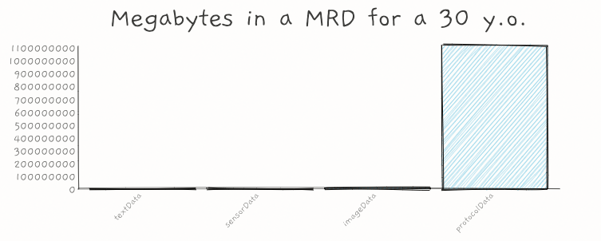

Scroll Beta
Today I'm launching the beta of something new called Scroll.
I've been reading the newspaper everyday since I was a kid. I remember I'd have my feet on the ground, my body tilted at an angle and my body weight pressed into the pages on the counter. I remember staring intently at the pages spread out before me. World news, local news, sports, business, comics. I remember the smell of the print. The feel of the pages. The ink that would be smeared on my forearms when I finished reading and stood back up straight. Scroll has none of that. But it does at least have the same big single page layout.
Scroll brings back some of the magic of newspapers.
In addition to the layout, Scroll has two important differences from existing static publishing software.
First, Scroll is built for public domain sites and only public domain sites. Builders of Scroll will spend 100% of the time building for the amazing creators who understand and value the public domain.
Second, Scroll uses Dumbdown, a language powered by Tree Notation. Unlike Markdown, Dumbdown is easily extensible. We can create and combine thousands of new sub languages to help people be more creative and communicate more effectively.
I've had fun building Scroll so far and am excited to start working on it with others.
2019 Tree Notation Annual Report
Note: I wrote this early draft in February 2020, but COVID-19 happened and somehow 11 months went by before I found this draft again. I am publishing it now as it was then, without adding the visuals I had planned but never got to, or making any major edits. This way it will be very easy to have next year's report be the best one yet, which will also include exciting developments in things like non-linear parsing and "forests".
In 2017 I wrote a post about a half-baked idea I named Tree Notation.
Since then, thanks to the help of a lot of people who have provided feedback, criticism and guidance, a lot of progress has been made flushing out the idea. I thought it might be helpful to provide an annual report on the status of the research until, as I stated in my earlier post, I "have data definitively showing that Tree Notation is useful, or alternatively, to explain why it is suboptimal and why we need more complex syntax."
My template for this (and maybe future) reports will be as follows:
3. 2019 Pros
4. 2019 Cons
5. Next Steps
High Level Status
I've followed the "Strong Opinions, Weakly Held" philosophy with this idea. I came out with a very strong claim: there is some natural and universal syntax that we could use for all of our symbolic languages that would be very useful—it would let us remove a lot of unnecessary complexity, allow us to focus more on semantics alone, and reap a lot of benefits by exploiting isomorphisms and network effects across domains. I've then spent a lot of time trying to destroy that claim.
After publishing my work I was expecting one of two outcomes. Most likely was that someone far smarter than I would put the nail in Tree Notation's coffin with a compelling case for why a such a universal notation is impossible or disadvantageous. My more optimistic—but less probable—outcome was that I would accumulate enough evidence through research and building to make a convincing case that a simplest universal notation is possible and highly advantageous (and it would be cool if Tree Notation evolves into that notation, but I'd be happy for any notation that solves the problem).
Unfortunately neither of those has happened yet. No one has convinced me that this is a dead-end idea and I haven't seen enough evidence that is a good idea^. At times it has seemed like a killer application of the notation was just around the corner that would demonstrate the advantages of this pattern, but while the technology has improved a lot, I can't say anything has turned out to be so compelling that I am certain of the idea.
So the high level status remains: strong opinion, weakly held. I am sticking to my big claim and still awaiting/working on proof or refutation.
Restating the Problem
What is the idea?
In these reports I'll try and restate the idea in a fresh way, but you can also find the idea explained in different places via visuals, an FAQ, a spec, demos, etc.
My hypothesis is that there exists a Simplest Universal Notation for Symbolic Abstraction (SUNSA). I propose Tree Notation as a potential candidate for that notation. It is hard to assign probabilities to events that haven't happened before, but I would say I am between 1% and 10% confident that a SUNSA exists and that Tree Notation is somewhat close to it^. If Tree Notation is not the SUNSA, it at least gives me an angle of attack on the general problem.
Let's define a notation as a set of physical rules that can be used to represent abstractions. By simplest universal notation I mean the notation that can represent any and every abstraction representable by other notations that also has the smallest set of rules.
You could say there exists many "UNSAs", or Universal Notations for Symbolic Abstractions. For example, thousands of domain specific languages are built on the XML and JSON notations, but my hypothesis is that there is a single SUNSA. XML is not the SUNSA, because an XML document like b can be equivalently represented as a b using a notation with a smaller set of rules.
Where would a SUNSA fit?
Inventions aren't always built in a linear fashion. For example, when you add 2+3 on your computer, your machine will break down that statement into a binary form and compute something like 0010 + 0011. The higher level base 10 Hindu-Arabic numerals are converted into the lower level base 2 binary numbers. So, before your computer solves 2+3, it must do the equivalent of import binary. But we had Hindu-Arabic numerals centuries before we had boolean numerals. Dependencies can be built out of order.
Similarly, I think there is another missing dependency that fits somewhere between binary the idea and binary the symbolic word.
Consider Euclid's Elements, maybe the most famous math book of all time written around 2,500 years ago. The book begins with the title "Στοιχεῖα"^. Already there is a problem: where is import the letter Σ?. Euclid has imported undefined abstractions: letters and a word. Now, if we were to digitally encode the Elements today from scratch, we would first include the binary dependency and then a character encoding dependency like UTF-8. We abstract first from binary to symbols. Then maybe once we have things in a text stream, we might abstract again to encode the Elements book into something like XML and markdown. I think there is a missing notation in both of these abstractions: the abstraction leap from binary to characters, and abstraction leap from characters to words and beyond.
I think to represent the jumps from binary to symbols to systems, there is a best natural notation. A SUNSA that fits in between languages that let's us build mountains of abstraction without introducing extra syntax.
To get a little more concrete, let me show a rough approximation of how using Tree Notation you could imagine a document that starts with just the concept of a bit (here denoted on line 2 as ".") and work your way up to defining digits and characters and words and entities.
There is a lot of hand-waving going on here, which is why Tree Notation is still, at best, a half-baked idea.
.
...
0
1 .
...
Σ 10100011
...
Στοιχεῖα
...
book title Elements
...
Why would a SUNSA be advantageous?
Given that I still consider this idea half-baked at best; given that I don't have compelling evidence that this notation is worthwhile; given that no one else has built a killer app using the idea (even though I've collaborated publically and privately with many dozens of people on project ideas at this point); why does this idea still excite me so much?
The reason is because I think IF we had a SUNSA, there would be tremendous benefits and applications. I'll throw out three potential application domains that I personally find very interesting.
Idea #1: Mapping the Frontiers of Symbolic Science
A SUNSA would greatly reduce the cost of a common knowledge base of science. While it may be possible to do it today without a SUNSA, having one would be at least a one order of magnitude cost reduction. Additionally, if there is not a SUNSA, than it may take just as long to come to agreement on what UNSA to use for a common knowledge base of science as it would to actual build the base!
By encoding all of science into a universal syntax, in addition to tremendous pedagogical benefits, we could take analogies like this:

And make them actual concrete visualizations.
Idea #2: Law (and Taxes)
This one always gets me excited. I believe there is a deep connection between simplicity, justice, and fairness. I believe legal systems with unnecessary complexity are unfair, prima facie. While legal systems will always be human-made, rich in depth, nuanced, and evolving, we could shed the noise. I dream of a world where paychecks, receipts, and taxes are all written in the same language; where medical records can be cut and pasted; and where when I want to start a business I don't have to fill out forms in Delaware (the codesmell in that last one is so obvious!).
I believe a SUNSA would give us a way to measure complexity as neatly as we measure distance, and allow us to simplify laws to their signal, so that they serve all people, and we don't suffer from all that noise and inefficiency.
Idea #3: Showcasing the Common Patterns in Computing From Low Level to High Level
I love projects like https://godbolt.org/, that let you jump up and down all the levels of abstraction in computing. I think there's an opportunity to do some incredible things if there is a SUNSA and the patterns in languages at different layers of computing all looked roughly the same (since they are roughly the same!).
What would the properties of a SUNSA be?
Tree Notation might not be the SUNSA, but it has a few properties that I think a SUNSA would have.
1. 2 or more physical dimensions: Every symbolic abstraction would have to be contained in the SUNSA, so to include an abstraction like the letter "a" would require a medium have at least more than one physical dimension.
2. Directional: A SUNSA would not just define how symbols are laid out, but it would also contain concepts of directionality.
3. Scopes: Essential for growth and collaboration.
4. Brevity: I think a SUNSA will have fewer components, not more. I often see new replacements for S-Expressions or JSON come out with more concepts, not less. I don't think this is the way to go—I think a SUNSA will be like a NAND gate and not a suite of gates, although the latter are handy and pragmatic.
I also will list one thing I don't think a SUNSA will have:
1. A single entry point. Currently most documents and programs are parsed with a start to finish in a linear order. With Tree Notation you can parse things in any order you want—start from anywhere, move in any direction, or even start in multiple places at the same time. I think this will be a property of a SUNSA. Maybe SUNSA programs will look more like this than this.
So those are a few things that I think we'll find in a SUNSA. Will we ever find a SUNSA?
Why might there not be a SUNSA?
I think a really good piece of evidence that we don't need a SUNSA is that we've seen STUPENDOUS SUCCESS WITH THOUSANDS OF SYNTAXES. The pace of progress in computing in the 1900's and 2000's has been tremendous, perhaps because of the Smörgåsbord of notations.
Who's to say that a SUNSA is needed? I guess my retort to that, is that although we do indeed have thousands of digital notations and languages, all of them, without exception, compile down to binary, so clearly having some low level universal notation has proved incredibly advantageous so far.
2019 Pros
So that concludes my restatement of the Tree Notation idea in terms of a more generic SUNSA concept. Now let me continue on and mention briefly some developments in 2019.
Here I'll just write some bullet points of work done this past ~ year advancing the idea.
- Types and Cells
- Tree Notation as a Subset of Grid Notation
- New homepage
- TreeBase
- CopyPaster
- Dozens of new Tree Languages
- More feedback than ever. Tens of thousands of visitors. Hundreds of conversations.
2019 Cons
Here I just list some marks against this idea.
- It still sucks.
- No killer app yet.
- No good General Purpose Tree Language.
- No good Assembly Tree Language.
- No good LISP Tree Language.
- No good LLVM IR tie in yet.
- One argument put to me: "there's no need for a universal syntax with deep learning—complexity IS the universal syntax."
- Another argument put to me: "sure it is still simple BUT there are 2 types of inventions: ones that get more complex over time and ones that no one uses"
Next Steps
Next steps is more of the same. Keep attempting to solve problems by simplifying the encoding of them to their essence (which happens to be Tree Notation, according to the theory). Build tools ot make that easier and leverage those encodings. This year LSP will likely be a focus, Grid Notation, and the PLDB.
Tree Notation has a secret weapon: Simplicity does not go out of style. Slippers today look just like slippers in Egypt 3,000 years ago
Status of Predictions in Paper
My Tree Notation paper was my first ever attempt at writing a scientific paper and my understanding was that a good theory would make some refutable predictions. Here are the predictions I made in that paper and where they stand today.
Prediction 1: no structure will be found that cannot serialize to TN.
While this prediction has held, a number of people have commented that it doesn't predict much, as the same could really be said about most languages. Anything you can represent in Tree Notation you can represent in many encodings like XML.
What I should have predicted is something along the lines of this: Tree Notation is the smallest set of syntax rules that can represent all abstractions. I think trying to formalize a prediction along those lines would be a worthwhile endeavor (possibly for the reason that in trying to do what I just said, I may learn that what I just said doesn't make sense).
Prediction 2: TLs will be found for every popular 1DL.
This one has not come true yet. While I have made many public Tree Languages myself and many more private ones, and I have prototyped many with other people, the net utility of Tree Languages is not high enough that people are rushing to design these things. Many people have kicked the tires, but things are not good enough and there is a lack of demand.
On the supply side, it has turned out to be a bit harder to design useful Tree Languages than I expected. Not by 100x, but maybe by as much as 10x. I learned a lot of bad design patterns not to put in Tree Languages. I learned that bad tooling will force compromises in language design. For example, before I had syntax highlighting I relied on wierd punctation like "@" vs "#" prefixes for distinguishing types. I also learned a lot of patterns that seem to be useful in Tree Languages (like word suffixes for types). I learned good tooling leads to simpler and better languges.
Prediction 3: Tree Oriented Programming (TOP) will supersede Object Oriented Programming.
This one has not come true yet. While there is a tremendous amount of what I would call "Tree Oriented Programming" going on, programmers are still talking about objects and message passing and are not viewing the world as trees.
Prediction 4: The simplest 2D text encodings for neural networks will be TLs.
This one is a fun one. Definitely has not come true yet. But I've got a new attack vector to try and potentially crack it.
Status of Long Bet
After someone suggested it, I made a Long Bet predicting the rise of Tree Notation or a SUNSA within ten years of my initial Tree Notation post. Clearly I am far off from winning this bet at this point, as there are not any candidate languages even noted in TIOBE, never mind in the Top 10. However, IF I were to win the bet, I'd expect it wouldn't be until around 2025 that we'd see any candidate languages even appear on TIOBE's radar. In other words, absense of evidence is not evidence of absense.
As an aside, I really like the idea of Long Bet, and I'm hoping it may prompt someone to come up with a theoretical argument against a SUNSA that buries my ideas for good. Now, it would be very easy to take the opposing side of my bet with the simple argument that the idea of 7/10 TIOBE languages dropping by 2027 won't happen because such a shift has never happened so quickly. However, I'd probably reject that kind of challenge as non-constructive, unless it was accompanied by something like a detailed data-backed case with models showing potential speed limits on the adoption of any language (which would be a constructive contribution).
Organization Status
In 2019 I explored the idea of putting together a proper research group and a more formal organization around the idea.
I put the breaks on that for three reasons. The first is I just don't have a particularly keen interest in building an organization. I love to be part of a team, but I like to be more hands on with the ideas and the work of the team rather than the meta aspect. I've gotten great help for this project at an informal level, so there's no rush to formalize it. The second reason is I don't have a great aptitude for team building, and I'm not ready yet to dedicate the time to that. I get excited by ideas and am good at quickly explore new idea spaces, but being the captain who calmly guides the ship toward a known destination just isn't me right now. The third reason is just the idea remains too risky and ill-defined. If it's a good idea, growth will happen eventually, and there's no need to force it.
There is a loose confederation of folks I work on this idea with, but no formal organization with an office so far.
Conclusion
That's it for the recap of 2019! Tune in next year for a recap of 2020.
Notes
^ Regardless of whether or not Tree Notation turns out to be a good idea, as one part of the effort to prove/disprove it I've built a lot of big datasets on languages and notations, which seem to be useful for other people. Credit for that is due to a number of people who advised me back in 2017 to "learn to research properly".
^ Note that this means I am between 90-99% confident that Tree Notation is not a good idea. However, if it's a bad idea I am 40% confident the attempt to prove it a bad idea will have positive second-order effects. I am 50% confident that it will turn out I should have dropped this idea years ago, and it's a crackpot or Dunning–Kruger theory, and I'd be lying if I said I didn't recognize that as a highly probably scenario that has kept me up some nights.
^ When it was first coming together, it wasn't a "book" as we think of books today and authorship is very fuzzy, but that doesn't affect things for my purposes here.
Medical Records to the Moon
A sea change is coming to medical records. In this post I do some back-of-the-envelope math to explore the changes ahead, both qualitative and quantitative. I also attempt to answer the question no one is asking: in the future will someone's medical record stretch to the moon?
Medical Records at the Provider
Medical records are generally stored with healthcare providers and currently at least 86%-96% of providers use an EHR system.
Americans visit their healthcare providers an average of 4 times per year.
If you were to plot the cumulative medical data storage use for the average American patient, it would look something like the abstract chart below, going up in small increments during each visit to the doctor:

A decade ago, this chart would not only show the quantity of a patient's medical data stored at their providers, but also the quantity of all of the patient's medical data. Simply put: people did not generally keep their own medical records. But this has changed.
Medical Records at Home
Now people own wearables like FitBits and Apple Watches. People use do-it-yourself services like 23andMe and uBiome. And in the not-too-distant future, the trend of ever-miniaturizing lab devices will enable advanced protocols at home. So now we have an additional line, reflecting the quantity of the patient's medical data from their own devices and services:

When you put the two together you can see the issue:

Patients will log far more medical data on their own than they do at their providers'.
Implication #1: Change in Ownership
It seems highly likely then that the possession of medical records will flip from providers to patients. I now have 120 million heart rate readings from my own devices, while I might have a few dozen from my providers. The gravity of the former will be harder and harder to overcome.
Patients won't literally be in possession of their records. While some nerdy patients—the kind of people who host their own email servers—might host their own open records, most will probably use a service provider. Prior attempts at creating personal health record systems, including some from the biggest companies around, did not catch on. But back then we didn't have the exponential increase in personal medical data, and the data gravity that creates, that we have today.
I'm noticing a number of startups innovating along this wave (and if you know of other exciting ones, please share!). However, it seems that Apple Health) and FitBit are in strong positions to emerge as leading providers of PHR as-a-service due to data gravity.
Implication #2: Change in Design
Currently EHR providers like Epic design and sell their products for providers first. If patients start making the decisions about which PHR tool to use, product designers will have to consider the patient experience first.
I think this extends beyond products to standards. While there are some great groups working on open standards for medical records, none, as far as I'm aware, consider patients as a first class user of their grammars and definitions. I personally think that a standards system can be developed that is fully understandable by patients without compromising on the needs of experts.
One simple UX innovation in medical records that I love is BlueButton. Developed by the V.A. in 2010, BlueButton allows patients to download their entire medical records as a single file. While the grammar and parse-ability of BlueButton leave much to be desired, I think the concept of "your entire medical history in a single document" is a very elegant design.
Implication #3: Change in Scale
As more and more different devices contribute to patients' medical documents, what will the documents look like and how big will they get? Will someone's medical records stretch to the moon?
I think the BlueButton concept provides a helpful mental model here: you can visualize any person's medical record as a single document. Let's call this document an MRD for "Medical Record Document".
Let's imagine a 30 year old in 2050. They'd have around 11,200 days worth of data (I included some days for in utero records). Let's say there are 4 "buckets" of medical data in their MRD:
1. Time series sensor data
2. Image and point cloud data
3. Data from microbio protocols like genomic and metabolomic data
4. Text data
This is my back of the envelope math of how many megabytes of data might be in each of those buckets:

I am assuming that sensor development advances a lot in 40 years. I am assuming our patient of the future has:
1. 1,000 different passive 1-D biomedical sensors recording a reading once per second
2. 10 different passive photo and 3-D cameras capturing 100 frames per day each
3. 100 passive microbio systems generating 1GB of data per protocol (don't ask me how these will work, maybe something like this)
4. For good measure I throw in a fourth bucket of 100k characters a day of plain text data
By my estimate this person would log about 100GB of medical data per day, or about 100 petabytes of data in 30 years. That would fit on roughly 1,000 of today's hard drives.
If you printed this record in a single doc, on 8.5 x 11 sheets of paper, in a human readable form—i.e. print the text, print the time series data as line charts, print the images, and print various types of output for the various protocols—the printed version would be about 138,000,000 pages which laid end-to-end would stretch 24,000 miles. If you printed it double-sided and stacked it like a book it would be 4.2 miles high.

So for a 120 year old in 2140, their printed MRD would not reach the moon. Though it may make it halfway there.
Published 03/02/2020
Musing on the Future of Healthcare
I expect the future of healthcare will be powered by consumer devices. Devices you wear. Devices you keep in your home. In the kitchen. In the bathroom. In the medicine cabinet.
These devices record medical data. Lots of data. They record data from macro signals like heart rate, temperature, hydration, physical activity, oxygen levels, body temperature, brain waves, voice activity. They also record data from micro signals like antibodies, RNA expression levels, metabolomics, microbiome, etc.
Most of the data is collected passively and regularly. But sometimes your Health app prompts you to take out the digital otoscope or digital stethoscope to examine an unusual condition more closely.
This data is not stored in a network at the hospital you don't have access to. Instead you can access all of that data as easily as you can access your email. You can see that data on your wrist, on your phone, on your tablet.
You can understand that data too. You can click and dive into the definitions of every term. You can see what is meant by macro concepts like "VO2 max" and micro concepts like "RBC Count" or "BRC1 expression". Everything is explained precisely and thoroughly. Not only in words but in interactive visualizations that are customized to your body. The algorithms and models that turn the raw signals into higher level concepts are constantly improving.
When you get flu like symptoms, you don't alternate between anxiously Googling symptoms and scheduling doctor's appointments. Instead, your Health app alerts you that your signals have changed, it diagnoses your condition, shows you how your patterns compare to tens of thousands of people who have experienced similar changes, and makes recommendations about what to do next. You can even see forecasts of how your condition will change in the days ahead, and you can simulate how different treatment strategies might affect those outcomes.
You can not only reduce illness, but you can improve well-being too. You can see how your physical habits, social habits, eating habits, sleeping habits, correlate with hundreds of health and other signals.
The best part of all of this? Healthcare powered by consumer devices seems like it will be a lot cheaper.
Published 03/02/2020
How Old Are These Keys?

One of the questions I often come back to is this: how much of our collective wealth is inherited by our generations versus created by our generations?
I realized that the keys on the keyboard in front of me might make a good dataset to attack that problem. So I built a small little experiment to explore the history of the keys on my keyboard.
The Five Waves of Symbols
Painting with broad strokes, there were approximately five big waves of inventions that have left their mark on the keyboard. The first wave was the invention of the phonetic alphabet letters. The second wave was the Hindu-Arabic Numerals. The third wave was the mathematical punctuation of the Enlightenment period. The fourth wave was the invention of the typewriter. And the fifth and most recent wave was the invention of the personal computer.
I haven't made any traditional charts yet with this dataset, but you can roughly make out these waves in the interactive visualization by moving the slider around.
Concentric Circles
An interesting pattern that I never saw before is how the five waves above are roughly arranged in circles. The oldest symbols (letters) are close to the center, followed by the Hindu-Arabic Numbers, surrounded by the punctuation of the Englightenment, surrounded by the keys of the keyboard, surrounded by the recent additions in the P.C. era. Again, painting with broad strokes, but I found that to be an interesting pattern.
Standing on the Shoulders of Giants
All of these waves happened invented before my generation. Almost all of them before any generation alive today. The keyboard dataset provides strong evidence that most of our collective wealth is inherited.
Build Notes
I got this idea last week and couldn't get it out of my head. Yesterday I took a quick crack at it. I didn't have much time to spare, just enough to explore the big ideas. I started by typing all the characters on my keyboard into a Tree Notation document. Then I dug up some years for a handful of the symbols. Then I found the great Apple CSS keyboard. I stitched together the two and it seemed to be at least mildly interesting so I opted to continue. I then flushed out most of the dataset. Finally I played around with a number of visualization effects. At first I thought heatmaps would work well, and tried a few variations on that, but wasn't happy with anything. I posted my work-in-progress to a few friends last night and called it a day. Today I switched to the "disappearing keys" visualization. That definitely felt like a better approach than the heatmap. I made the thing as fun as I could given time constraints and then shipped.
Published 2/25/2020
"Integrity and Perseverance in Business ensure success" (1853)

Richard Brhel of placepeep shared a great quote the other day on Startup School. He saw the quote on a poster years ago when he was helping a digitization effort in Ohio. I had never seen this exact quote before so wanted to transcribe it for the web.
In 1851 an instructor named Ezekiel G. Folsom incorporated a college in Ohio called Folsom's Mercantile College. Folsom's taught bookkeeping, banking, and "Railroading", amongst other things.
The image above is a screenshot of an 1850's poster promoting the college. The poster includes a motto (which I boxed in green) that I think is great guidance: "Integrity and Perseverance in Business ensure success".
Guess who went to Folsom's and presumably saw this poster and was influenced by this motto? John D. Rockefeller.
Published 2/09/2020
Building a TreeBase with 6.5 million files
In this long post I'm going to do a stupid thing and see what happens. Specifically I'm going to create 6.5 million files in a single folder and try to use Git and Sublime and other tools with that folder. All to explore this new thing I'm working on.
TreeBase is a new system I am working on for long-term, strongly-typed collaborative knowledge bases. The design of TreeBase is dumb. It's just a folder with a bunch of files encoded with Tree Notation. A row in a normal SQL table in TreeBase is roughly equivalent to a file. The filenames serve as IDs. Instead of each using an optimized binary storage format it just uses plain text like UTF-8. Field names are stored alongside the values in every file. Instead of starting with a schema you can just start adding files and evolve your schema and types as you go.
For example, in this tiny demo TreeBase of the planets the file mars.planet looks like this:
diameter 6794
surfaceGravity 4
yearsToOrbitSun 1.881
moons 2
TreeBase is composed of 3 key ingredients.
Ingredient 1: A folder All that TreeBase requires is a file system (although in theory you could build an analog TreeBase on paper). This means that you can use any tools on your system for editing files for editing your database.
Ingredient 2: Git Instead of having code to implement any sort of versioning or metadata tracking, you just use Git. Edit your files and use Git for history, branching, collaboration, etc. Because Tree Notation is a line and word based syntax it meshes really well with Git workflows.
Ingredient 3: Tree Notation The Third Ingredient for making a TreeBase is Tree Notation. Both schemas and data use Tree Notation. This is a new very simple syntax for encoding strongly typed data. It's simple, extensible, and plays well with Git.
TreeBase Compared to Other Database Systems
Probably hundreds of billions of dollars has gone into designing robust database systems like SQL Server, Oracle, PostgreSQL, MySQL, MongoDB, SQLite, and so forth. These things run the world. They are incredibly robust and battle-hardened. Everything that can happen is thought of and planned for, and everything that can go wrong has gone wrong (and learned from). These databases can handle trillions of rows, can conduct complex real-time transactions, and survive disasters of all sort. They use sophisticated binary formats and are tuned for specific file systems. Thousands of people have gotten their PhD's working on database technology.
TreeBase doesn't have any of that. TreeBase is stupid. It's just a bunch of files in a folder.
You might be asking yourself "Why use TreeBase at all when great databases exist?". To further put the stupidity of the current TreeBase design into perspective, the Largest Git Repo on the Planet is Windows which has 3.5 million files. I'm going to try and create a repo with 6.5 million files on my laptop.
Even if you think TreeBase is silly aren't you curious what happens when I try to put 6.5 million files into one folder? I kind of am. If you want an explanation of why TreeBase, I'll get to that near the end of this post.
But first...
Let's Break TreeBase
Here again is a demo TreeBase with only 8 files.
The biggest TreeBase I work with has on the order of 10,000 files. Some files have thousands of lines, some just a handful.
While TreeBase has been great at this small scale, a question I've been asked, and have wondered myself, is what happens when a TreeBase gets too big?
I'm about to find out, and I'll document the whole thing.
Every time something bad happens I'll include a 💣.
Choosing a Topic
TreeBase is meant for knowledge bases. So all TreeBases center around a topic.
To test TreeBase on a big scale I want something realistic. I wanted to choose some big structured database that thousands of people have contributed to that's been around for a while and see what it would look like as a TreeBase.
IMDB is just such a database and amazingly makes a lot of their data available for download. So movies will be the topic and the IMDB dataset will be my test case.
The Dataset
First I grabbed the data. I downloaded the 7 files from IMDB to my laptop. After unzipping, they were about 7GB.
One file, the 500MB title.basics.tsv, contained basic data for all the movie and shows in the database.
Here's what that file looks like with head -5 title.basics.tsv:
tconst titleType primaryTitle originalTitle isAdult startYear endYear runtimeMinutes genres
tt0000001 short Carmencita Carmencita 0 1894 \N 1 Documentary,Short
tt0000002 short Le clown et ses chiens Le clown et ses chiens 0 1892 \N 5 Animation,Short
tt0000003 short Pauvre Pierrot Pauvre Pierrot 0 1892 \N 4 Animation,Comedy,Romance
tt0000004 short Un bon bock Un bon bock 0 1892 \N \N Animation,Short
This looks like a good candidate for TreeBase. With this TSV I can create a file for each movie. I don't need the other 6 files for this experiment, though if this was a real project I'd like to merge in that data as well (in that case I'd probably create a second TreeBase for the names in the IMDB dataset).
Doing a simple line count wc -l title.basics.tsv I learn that there are around 6.5M titles in title.basics.tsv. With the current implementation of TreeBase this would be 6.5M files in 1 folder. That should handily break things.
The TreeBase design calls for me to create 1 file for every row in that TSV file. To again stress how dumb this design is keep in mind a 500MB TSV with 6.5M rows can be parsed and analyzed with tools like R or Python in seconds. You could even load the thing near instantly into a SQLite database and utilize any SQL tool to explore the dataset. Instead I am about to spend hours, perhaps days, turning it into a TreeBase.
From 1 File to 6.5 Million Files
What will happen when I split 1 file into 6.5 million files? Well, it's clear I am going to waste some space.
A file doesn't just take up space for its contents: it also has metadata. Every file contains metadata like permissions, modification time, etc. That metadata must take up some space, right? If I were to create 6.5M new files, how much extra space would that take up?
My MacBook uses APFS. It can hold up to 9,000,000,000,000,000,000 files. I can't easily find hard numbers on how much metadata one file takes up but can at least start with a ballpark estimate.
I'll start by considering the space filenames will take up.
In TreeBase filenames are composed of a permalink and a file extension. The file extension is to make it easier for editors to understand the schema of a file. In the planets TreeBase above, the files all had the planet extension and there is a planet.grammar file that contains information for the tools like syntax highlighters and type checkers. For my new IMDB TreeBase there will be a similar title.grammar file and each file will have the ".title" extension. So that is 6 bytes per file. Or merely 36MB extra for the file extensions.
Next, the body of each filename will be a readable ID. TreeBase has meaningful filenames to work well with Git and existing file tools. It keeps things simple. For this TreeBase, I will make the ID from the primaryTitle column in the dataset. Let's see how much space that will take.
I'll try xsv select primaryTitle title.basics.tsv | wc.
💣 I got this error:
CSV error: record 1102213 (line: 1102214, byte: 91470022): found record with 8 fields, but the previous record has 9 fields 1102213 3564906 21815916
XSV didn't like something in that file. Instead of getting bogged down, I'll just work around it.
I'll build a subset from the first 1M rows with head -n 1000000 title.basics.tsv > 1m.title.basics.tsv. Now I will compute against that subset with xsv select primaryTitle 1m.title.basics.tsv | wc. I get 19751733 so an average of 20 characters per title.
I'll combine that with the space for file extension and round that to say 30 extra bytes of file information for each of the 6.5 million titles. So about 200MB of extra data required to split this 500MB file into filenames. Even though that's a 50% increase, 200MB is dirt cheap so that doesn't seem so bad.
You may think that I could save a roughly equivalent amount by dropping the primaryTitle field. However, even though my filenames now contain information from the title, my permalink schema will generally distort the title so I need to preserve it in each file and won't get savings there. I use a more restrictive character set in the permalink schema than the file contents just to make things like URLs easier.
Again you might ask why not just an integer for the permalink? You could but that's not the TreeBase way. The human readable permalinks play nice with tools like text editors, URLs, and Git. TreeBase is about leveraging software that already works well with file systems. If you use meaningless IDs for filenames you do away with one of the very useful features of the TreeBase system.
But I won't just waste space in metadata. I'm also going to add duplicate data to the contents of each file. That's because I won't be storing just values like 1999 but I'll also be repeating column names in each file like startYear 1999.
How much space will this take up? The titles file has 9 columns and using head -n 1 1m.title.basics.tsv | wc I see that adds up to 92 bytes. I'll round that up to 100, and multiple by 6.5M, and that adds up to about 65,000,000 duplicate words and 650MB. In other words the space requirements roughly doubled (of course, assuming no compression by the file system under the hood).
You might be wondering why not just drop the column names from each file? Again, it's just not the TreeBase way. By including the column names, each file is self-documenting. I can open up any file with a text editor and easily change it.
So to recap: splitting this 1 TSV file into 6.5 million files is going to take up 2-3x more space due to metadata and repetition of column names.
Because this is text data, that's actually not so bad. I don't foresee problems arising from wasted disk space.
Foreseeing Speed Problems
Before I get to the fun part, I'm going to stop for a second and try and predict what the problems are going to be.
Again, in this experiment I'm going to build and attempt to work with a TreeBase roughly 1,000 times larger than any I've worked with before. A 3 order of magnitude jump.
Disk space won't be a problem. But are the software tools I work with on a day-to-day basis designed to handle millions of files in a single folder? How will they hold up?
- Bash How will the basics like
lsandgrephold up in a folder with 6.5M files? - Git How slow will
git statusbe? What aboutgit addandgit commit? - Sublime Text Will I even be able to open this folder in Sublime Text? Find/replace is something I so commonly use, will that work? How about regex find/replace?
- Finder Will I be able to visually browse around?
- TreeBase Scripts Will my simple TreeBase scripts be usable? Will I be able to type check a TreeBase?
- GitHub Will GitHub be able to handle 6.5M files?
Proceeding in Stages
Since I am going to make a 3 order of magnitude jump, I figured it would be best to make those jumps one at a time.
Actually, to be smart, I will create 5 TreeBases and make 4 jumps. I'll make 1 small TreeBase for sanity checks and then four where I increase by 10x 3 times and see how things hold up.
First, I'll create 5 folders: mkdir 60; mkdir 6k; mkdir 60k; mkdir 600k; mkdir 6m
Now I'll create 4 smaller subsets for the smaller bases. For the final 6.5M base I'll just use the original file.
head -n 60 title.basics.tsv > 60/titles.tsv
head -n 6000 title.basics.tsv > 6k/titles.tsv
head -n 60000 title.basics.tsv > 60k/titles.tsv
head -n 600000 title.basics.tsv > 600k/titles.tsv
Now I'll write a script to turn those TSV rows into TreeBase files.
#! /usr/local/bin/node --use_strict
const { jtree } = require("jtree")
const { Disk } = require("jtree/products/Disk.node.js")
const folder = "600k"
const path = ${__dirname}/../imdb/${folder}.titles.tsv
const tree = jtree.TreeNode.fromTsv(Disk.read(path).trim())
const permalinkSet = new Set()
tree.forEach(node => { let permalink = jtree.Utils.stringToPermalink(node.get("primaryTitle")) let counter = ""
let dash = ""
while (permalinkSet.has(permalink + dash + counter)) { dash = "-" counter = counter ? counter + 1 : 2
}
const finalPermalink = permalink + dash + counter
permalinkSet.add(finalPermalink)
// Delete Null values:
node.forEach(field => { if (field.getContent() === "\\N") field.destroy()
})
if (node.get("originalTitle") === node.get("primaryTitle")) node.getNode("originalTitle").destroy()
Disk.write(${__dirname}/../imdb/${folder}/${finalPermalink}.title, node.childrenToString())
})
The script iterates over each node and creates a file for each row in the TSV.
This script required a few design decisions. For permalink uniqueness, I simply keep a set of titles and number them if a name comes up multiple times. There's also the question of what to do with nulls. IMDB sets the value to \N. Generally the TreeBase way is to not include the field in question. So I filtered out null values. For cases where primaryTitle === originalTitle, I stripped the latter. For the Genres field, it's a CSV array. I'd like to make that follow the TreeBase convention of a SSV. I don't know all the possibilities though without iterating, so I'll just skip this for now.
Here are the results of the script for the small 60 file TreeBase:

Building the Grammar File
The Grammar file adds some intelligence to a TreeBase. You can think of it as the schema for your base. TreeBase scripts can read those Grammar files and then do things like provide type checking or syntax highlighting.
Now that we have a sample title file, I'm going to take a first pass at the grammar file for our TreeBase. I copied the file the-photographical-congress-arrives-in-lyon.title and pasted it into the right side of the Tree Language Designer. Then I clicked Infer Prefix Grammar.
That gave me a decent starting point for the grammar:
inferredLanguageNode root
inScope tconstNode titleTypeNode primaryTitleNode originalTitleNode isAdultNode startYearNode runtimeMinutesNode genresNode
keywordCell
anyCell
bitCell
intCell
tconstNode crux tconst
cells keywordCell anyCell
titleTypeNode crux titleType
cells keywordCell anyCell
primaryTitleNode crux primaryTitle
cells keywordCell anyCell anyCell anyCell anyCell anyCell anyCell
originalTitleNode crux originalTitle
cells keywordCell anyCell anyCell anyCell anyCell anyCell anyCell anyCell anyCell
isAdultNode crux isAdult
cells keywordCell bitCell
startYearNode crux startYear
cells keywordCell intCell
runtimeMinutesNode crux runtimeMinutes
cells keywordCell bitCell
genresNode crux genres
cells keywordCell anyCell
The generated grammar needed a little work. I renamed the root node and added catchAlls and a base "abstractFactType". The Grammar language and tooling for TreeBase is very new, so all that should improve as time goes on.
My title.grammar file now looks like this:
titleNode root
pattern \.title$
inScope abstractFactNode
keywordCell
anyCell
bitCell
intCell
abstractFactNode abstract
cells keywordCell anyCell
tconstNode crux tconst
extends abstractFactNode
titleTypeNode crux titleType
extends abstractFactNode
primaryTitleNode crux primaryTitle
extends abstractFactNode
catchAllCellType anyCell
originalTitleNode crux originalTitle
extends abstractFactNode
catchAllCellType anyCell
isAdultNode crux isAdult
cells keywordCell bitCell
extends abstractFactNode
startYearNode crux startYear
cells keywordCell intCell
extends abstractFactNode
runtimeMinutesNode crux runtimeMinutes
cells keywordCell intCell
extends abstractFactNode
genresNode crux genres
cells keywordCell anyCell
extends abstractFactNode
Next I coped that file into the 60 folder with cp /Users/breck/imdb/title.grammar 60/. I have the jtree package installed on my local machine so I registered this new language with that with the command jtree register /Users/breck/imdb/title.grammar. Finally, I generated a Sublime syntax file for these title files with jtree sublime title #pathToMySublimePluginDir.
Now I have rudimentary syntax highlighting for these new title files:

Notice the syntax highlighting is a little broken. The Sublime syntax generating still needs some work.
Anyway, now we've got the basics done. We have a script for turning our CSV rows into Tree Notation files and we have a basic schema/grammar for our new TreeBase.
Let's get started with the bigger tests now.
A 6k TreeBase
I'm expecting this to be an easy one. I update my script to target the 6k files and run it with /Users/breck/imdb/build.js. A little alarmingly, it takes a couple of seconds to run:
real 0m3.144s
user 0m1.203s
sys 0m1.646s
The main script is going to iterate over 1,000x as many items so if this rate holds up it would take 50 minutes to generate the 6M TreeBase!
I do have some optimization ideas in mind, but for now let's explore the results.
First, let me build a catalog of typical tasks that I do with TreeBase that I will try to repeat with the 6k, 60k, 600k, and 6.5M TreeBases.
I'll just list them in Tree Notation:
task ls category bash
description
task open sublime category sublime
description Start sublime in the TreeBase folder
task sublime responsiveness category sublime
description scroll and click around files in the treebase folder and see how responsive it feels.
task sublime search category sublime
description find all movies with the query "titleType movie"
task sublime regex search category sublime
description find all comedy movies with the regex query "genres ._Comedy._"
task open finder category finder
description open the folder in finder and browse around
task git init category git
description init git for the treebase
task git first status category git
description see git status
task git first add category git
description first git add for the treebase
task git first commit category git
description first git commit
task sublime editing category sublime
description edit some file
task git status category git
description git status when there is a change
task git add category git
description add the change above
task git commit category git
description commit the change
task github push category github
description push the treebase to github
task treebase start category treebase
description how long will it take to start treebase
task treebase error check category treebase
description how long will it take to scan the base for errors.
💣 Before I get to the results, let me note I had 2 bugs. First I needed to update my title.grammar file by adding a cells fileNameCell to the root node and also adding a fileNameCell line. Second, my strategy above of putting the CSV file for each TreeBase into the same folder as the TreeBase was not ideal as Sublime Text would open that file as well. So I moved each file up with mv titles.tsv ../6k.titles.tsv.
The results for 6k are below.
category,description,result
bash,ls,instant
sublime,Start sublime in the TreeBase folder,instant
sublime,scroll and click around files in the treebase folder and see how responsive it feels.,nearInstant
sublime,find all movies with the query "titleType movie",neaerInstant
sublime,find all comedy movies with the regex query "genres ._Comedy._",nearInstant
finder,open and browse,instant
git,init git for the treebase,instant
git,see git status,instant
git,first git add for the treebase,aFewSeconds
git,first git commit,instant
sublime,edit some file,instant
git,git status when there is a change,instant
git,add the change above,instant
git,commit the change,instant
github,push the treebase to github,~10 seconds
treebase,how long will it take to start treebase,instant
treebase,how long will it take to scan the base for errors.,nearInstant
So 6k worked without a hitch. Not surprising as this is in the ballpark of where I normally operate with TreeBases.
Now for the first of three 10x jumps.
A 60k TreeBase
💣 This markdown file that I'm writing was in the parent folder of the 60k directory and Sublime text seemed to be slowing a bit, so I closed Sublime and created a new unrelated folder to hold this writeup separate from the TreeBase folders.
The build script for the 60k TreeBase took 30 seconds or so, as expected. I can optimize for that later.
I now repeat the tasks from above to see how things are holding up.
category,description,result
bash,ls,aFewSeconds
sublime,Start sublime in the TreeBase folder,aFewSeconds with Beachball
sublime,scroll and click around files in the treebase folder and see how responsive it feels.,instant
sublime,find all movies with the query "titleType movie",~20 seconds with beachball
sublime,find all comedy movies with the regex query "genres ._Comedy._",~20 seconds with beachball
git,init git for the treebase,instant
finder,open and browse,6 seconds
git,see git status,nearInstant
git,first git add for the treebase,1 minute
git,first git commit,10 seconds
sublime,edit some file,instant
git,git status when there is a change,instant
git,add the change above,instant
git,commit the change,instant
github,push the treebase to github,~10 seconds
treebase,how long will it take to start treebase,~10 seconds
treebase,how long will it take to scan the base for errors.,~5 seconds
Uh oh. Already I am noticing some scaling delays with a few of these tasks.
💣 The first git add took about 1 minute. I used to know the internals of Git well but that was a decade ago and my knowledge is rusty.
I will now look some stuff up. Could Git be creating 1 file for each file in my TreeBase? I found this post from someone who created a Git repo with 1.7M files which should turn out to contain useful information. From that post it looks like you can indeed expect 1 file for Git for each file in the project.
The first git commit took about 10 seconds. Why? Git printed a message about Autopacking. It seems Git will combine a lot of small files into packs (perhaps in bundles of 6,700, though I haven't dug in to this) to speed things up. Makes sense.
💣 I forgot to mention, while doing the tasks for the 60k TreeBase, my computer fan kicked on. A brief look at Activity Monitor showed a number of mdworker_shared processes using single digit CPU percentages each, which appears to be some OS level indexing process. That's hinting that a bigger TreeBase might require at least some basic OS/file system config'ing.
Besides the delays with git everything else seemed to remain fast. The 60k TreeBase choked a little more than I'd like but seems with a few tweaks things could remain screaming fast.
Let's move on to the first real challenge.
A 600k TreeBase
💣 The first problem I hit immediately in that my build.js is not efficient. I hit a v8 out of memory error. I could solve this by either 1) streaming the TSV one row at a time or 2) cleaning up the unoptimized jtree library to handle bigger data better. I chose to spend a few minutes and go with option 1).
💣 It appears the first build script started writing files to the 600k directory before it failed. I had to rm -rf 600k/ and that took a surprisingly long time. Probably a minute or so. Something to keep an eye on.
💣 I updated my build script to use streams. Unfortunately the streaming csv parser I switched to choked on line 32546. Inspecting that vicinity it was hard to detect what it was breaking on. Before diving in I figured I'd try a different library.
💣 The new library seemed to be working but it was taking a while so I added some instrumentation to the script. From those logs the new script seems to generate about 1.5k files per second. So should take about 6 minutes for all 600k. For the 6.5M files, that would grow to an hour, so perhaps there's more optimization work to be done here.
💣 Unfortunately the script exited early with:
Error: ENAMETOOLONG: name too long, open '/Users/breck/imdbPost/../imdb/600k/mord-an-lottomillionr-karl-hinrich-charly-l.sexualdelikt-an-carola-b.bankangestellter-zweimal-vom-selben-bankruber-berfallenmord-an-lottomillionr-karl-hinrich-charly-l.sexualdelikt-an-carola-b.bankangestellter-zweimal-vom-selben-bankruber-berfallen01985nncrimenews.title'
Turns out the Apple File System has a filename size limit of 255 UTF-8 characters so this error is understandable. However, inspecting the filename shows that for some reason the permalink was generated by combining the original title with the primary title. Sounds like a bug.
I cd into the 600k directory to see what's going on.
💣 Unfortunately ls hangs. ls -f -1 -U seems to go faster.
The titles look correct. I'm not sure why the script got hung up on that one entry. For now I'll just wrap the function call in a Try/Catch and press on. I should probably make this script resumable but will skip that for now.
Rerunning the script...it worked! That line seemed to be the only problematic line.
We now have our 600k TreeBase.
category,description,result
bash,ls,~30 seconds
sublime,Start sublime in the TreeBase folder,failed
sublime,scroll and click around files in the treebase folder and see how responsive it feels.,X
sublime,find all movies with the query "titleType movie",X
sublime,find all comedy movies with the regex query "genres ._Comedy._",X
finder,open and browse,3 minutes
git,init git for the treebase,nearInstant
git,see git status,6s
git,first git add for the treebase,40 minutes
git,first git commit,10 minutes
sublime,edit some file,X
git,git status when there is a change,instant
git,add the change above,instant
git,commit the change,instant
github,push the treebase to github,~10 seconds
treebase,how long will it take to start treebase,~10 seconds
treebase,how long will it take to scan the base for errors.,~5 seconds
💣 ls is now nearly unusable. ls -f -1 -U takes about 30 seconds. A straight up ls takes about 45s.
💣 Sublime Text failed to open. After 10 minutes of 100% CPU usage and beachball'ing I force quit the program. I tried twice to be sure with the same result.
💣 mdworker_shared again kept my laptop running hot. I found a way of potentially disabling Mac OS X Spotlight Indexing of the IMDB folder.
💣 Opening the 600k folder in Apple's Finder gave me a loading screen for about 3 minutes

At least it eventually came up:

Now, how about Git?
💣 The first git add . took 40 minutes! Yikes.
real 39m30.215s
user 1m19.968s
sys 13m49.157s
💣 git status after the initial git add took about a minute.
💣 The first git commit after the git add took about 10 minutes.
GitHub turns out to be a real champ. Even with 600k files the first git push took less than 30 seconds.
real 0m22.406s
user 0m2.657s
sys 0m1.724s
The 600k repo on GitHub comes up near instantly. GitHub just shows the first 1k out of 600k files which I think is a good compromise, and far better than a multiple minute loading screen.
💣 Sadly there doesn't seem to be any pagination for this situation on GitHub, so not sure how to view the rest of the directory contents.
I can pull up a file quickly on GitHub, like the entry for License to Kill.
How about editing files locally? Sublime is no use so I'll use vim. Because ls is so slow, I'll find the file I want to edit on GitHub. Of course because I can't find pagination in GitHub I'll be limited to editing one of the first 1k files. I'll use just that License to Kill entry.
So the command I use vim 007-licence-to-kill.title. Editing that file is simple enough. Though I wish we had support for Tree Notation in vim to get syntax highlighting and such.
💣 Now I do git add .. Again this takes a while. What I now realize is that my fancy command prompt does some git status with every command. So let's disable that.
After going in and cleaning up my shell (including switching to zsh) I've got a bit more performance back on the command line.
💣 But just a bit. A git status still takes about 23 seconds! Even with the -uno option it takes about 15 seconds. This is with 1 modified file.
Now adding this 1 file seems tricky. Most of the time I do a git status and see that I want to add everything so I do a git add ..
💣 But I tried git add . in the 600k TreeBase and after 100 seconds I killed the job. Instead I resorted to git add 007-licence-to-kill.title which worked pretty much instantly.
💣 git commit for this 1 change took about 20 seconds. Not too bad but much worse than normal.
git push was just a few seconds.
I was able to see the change on GitHub instantly. Editing that file on GitHub and committing was a breeze. Looking at the change history and blame on GitHub was near instant.
Git blame locally was also just a couple of seconds.
Pause to Reflect
So TreeBase struggles at the 600k level. You cannot just use TreeBase at the 100k level without preparing your system for it. Issues arise with GUIs like Finder and Sublime, background file system processes, shells, git, basic bash utilities, and so forth.
I haven't looked yet into RAM based file systems or how to setup my system to make this use case work well, but for now, out of the box, I cannot recommend TreeBase for databases of more than 100,000 entities.
Is there even a point now to try 6.5M? Arguably no.
However, I've come this far! No turning back now.
A 6.5M TreeBase
To recap what I am doing here: I am taking a single 6.5 million row 500MB TSV file that could easily be parsed into a SQLite or other battle hardened database and instead turning it into a monstrous 6.5 million file TreeBase backed by Git and writing it to my hard disk with no special configuration.
By the way, I forgot to mention my system specs for the record. I'm doing this on a MacBook Air running macOS Catalina on a 2.2Ghz Dual-core i7 with 8GB of 1600 Mhz DDR3 Ram with a 500GB Apple SSD using APFS. This is the last MacBook with a great keyboard, so I really hope it doesn't break.
Okay, back to the task at hand.
I need to generate the 6.5M files in a single directory. The 600k TreeBase took 6 minutes to generate so if that scales linearly 6.5M should take an hour. The first git add for 600k took 40 minutes, so that for 6.5M could take 6 hours. The first git commit for 600k took 10 minutes, so potentially 1.5 hours for 6.5M. So this little operation might take about 10 hours.
I'll stitch these operations together into a shell script and run it overnight (I'll make sure to check the batteries in my smoke detectors first).
Here's the script to run the whole routine:
time node buildStream.js
time cd ~/imdb/6m/
time git add .
time git commit -m "initial commit"
time git push
Whenever running a long script, it's smart to test it with a smaller dataset first. I successfully tested this script with the 6k file dataset. Everything worked. Everything should be all set for the final test.
(Later the next day...)
It's Alive!
It worked!!! I now have a TreeBase with over 6 million files in a single directory. Well, a few things worked, most things did not.
category,description,result
bash,ls,X
sublime,Start sublime in the TreeBase folder,X
sublime,scroll and click around files in the treebase folder and see how responsive it feels.,X
sublime,find all movies with the query "titleType movie",X
sublime,find all comedy movies with the regex query "genres ._Comedy._",X
finder,open and browse,X
git,init git for the treebase,nearInstant
git,first git add for the treebase,12 hours
git,first git commit,5 hours
sublime,edit some file,X
git,git status when there is a change,X
git,add the change above,X
git,commit the change,X
github,push the treebase to github,X
treebase,how long will it take to start treebase,X
treebase,how long will it take to scan the base for errors.,X
💣 There was a slight hiccup in my script where somehow v8 again ran out of memory. But only after creating 6,340,000 files, which is good enough for my purposes.
💣 But boy was this slow! The creation of the 6M+ files took 3 hours and 20 minutes.
💣 The first git add . took a whopping 12 hours!
💣 The first git commit took 5 hours!
💣 A few times when I checked on the machine it was running hot. Not sure if from CPU or Disk or a combination.
💣 I eventually quit git push. It quickly completed Counting objects: 6350437, done. but then nothing happened except lots of CPU usage for hours.
Although most programs failed, I was at least able to successfully create this monstrosity and navigate the folder.
The experiment has completed. I took a perfectly usable 6.5M row TSV file and transformed it into a beast that brings some of the most well-known programs out there to their knees.
💣 NOTE: I do not recommend trying this at home. My laptop became lava hot at points. Who knows what wear and tear I added to my hard disk.
What have I learned?
So that is the end of the experiment. Can you build a Git-backed TreeBase with 6.5M files in a single folder? Yes. Should you? No. Most of your tools won't work or will be far too slow. There's infrastructure and design work to be done.
I was actually pleasantly surprised by the results of this early test. I was confident it was going to fail but I wasn't sure exactly how it would fail and at what scale. Now I have a better idea of that. TreeBase currently sucks at the 100k level.
I also now know that the hardware for this type of system feels ready and it's just parts of some software systems that need to be adapted to handle folders with lots of files. I think those software improvements across the stack will be made and this dumb thing could indeed scale.
What's Next?
Now, my focus at the moment is not on big TreeBases. My focus is on making the experience of working with little TreeBases great. I want to help get things like Language Server Protocol going for TreeBases and a Content Management System backed by TreeBase.
But I now can envision how, once the tiny TreeBase experience is nailed, you should be able to use this for bigger tasks. The infrastructure is there to make it feasible with just a few adjustments. There are some config tweaks that can be made, more in-memory approaches, and some straightforward algorithmic additions to make to a few pieces of software. I also have had some fun conversations where people have suggested good sharding strategies that may prove useful without changing the simplicity of the system.
That being said, it would be fun to do this experiment again but this time try and make it work. Once that's a success, it would be fun to try and scale it another 100x, and try to build a TreeBase for something like the 180M paper Semantic Scholar dataset.
Why Oh Why TreeBase?
Okay, you might be wondering what is the point of this system? Specifically, why use the file system and why use Tree Notation?
1) The File System is Going to Be Here for a Long Long Time
1) About 30m programmers use approximately 100 to 500 general purpose programming languages. All of these actively used general purpose languages have battle tested APIs for interacting with file systems. They don't all have interfaces to every database program. Any programmer, no matter what language they use, without having to learn a new protocol, language, or package, could write code to interact with a TreeBase using knowledge they already have. Almost every programmer uses Git now as well, so they'd be familiar with how TreeBase change control works.
2) Over one billion more casual users are familiar with using their operating system tools for interacting with Files (like Explorer and Finder). Wouldn't it be cool if they could use tools they already know to interact with structured data?
Wouldn't it be cool if we could combine sophisticated type checking, querying, and analytical capabilities of databases with the simplicity of files? Programmers can easily build GUIs on top of TreeBase that have any and all of the functionality of traditional database-backed programs but have the additional advantage of an extremely well-known access vector to their information.
People have been predicting the death of files but these predictions are wrong. Even Apple recently backtracked and added a Files interface to iOS. Files and folders aren't going anywhere. It's a very simple and useful design pattern that works in the analog and digital realm. Files have been around for at least 4,500 years and my guess is will be around for another 5,000 years, if the earth doesn't blow up. Instead of dying, on the contrary file systems will keep getting better and better.
2) Tree Notation is All You Need to Create Meaningful Semantic Content
People have recognized the value of semantic, strongly typed content for a long time. Databases have been strongly typed since the beginning of databases. Strongly typed programming languages have dominated the software world since the beginning of software.
People have been attempting to build a system for collaborative semantic content for decades. XML, RDF, OWL2, JSON-LD, Schema.org—these are all great projects. I just think they can be simplified and I think one strong refinement is Tree Notation.
I imagine a world where you can effortlessly pass TreeBases around and combine them in interesting ways. As a kid I used to collect baseball cards. I think it would be cool if you could just as easily pass around "cards" like a "TreeBase of all the World's Medicines" or a "TreeBase of all the world's academic papers" or a "TreeBase of all the world's chemical compounds" and because I know how to work with one TreeBase I could get value out of any of these TreeBases. Unlike books or weakly typed content like Wikipedia, TreeBases are computable. They are like specialized little brains that you can build smart things out of.
So I think this could be pretty cool. As dumb as it is.
I would love to hear your thoughts.
Published 1/29/2020
Dataset Needed
The phrase "citation needed" needs to go. In its place we should use the far superior "dataset needed".
Whether it's an academic paper, news report, blog post, or marketing ad, citations linking to text summaries should be frowned upon.
Link to the dataset. If you want to include a conclusion, provide a deep link to the relevant query of the dataset. Do not repeat conclusions that don't have an accompanying query. Otherwise like a game of Telephone the truth gets distorted with each relay.
Of course, most sources don't currently publish their datasets. And almost none of them publish their datasets in deep-linkable way. So step one is fixing that problem. Lots of cool work is going on in these areas.
I remember being a high school student and getting graded on our dataset notebooks we made in the lab. Writing clean data should be widely taught in school, and there's an army of potential workers who could help us create more public, deep-linkable datasets.
Thanks to DL for helping me refine my thinking from this earlier post.
1/23/2020
Type the World
In this post I briefly describe eleven threads in languages and programming. Then I try to connect them together to make some predictions about the future of knowledge encoding.
This might be hard to follow unless you have experience working with types, whether that be types in programming languages, or types in databases, or types in Excel. Actually, this may be hard to follow regardless of your experience. I'm not sure I follow it. Maybe just stay for the links. Skimming is encouraged.
First, from the Land of Character Sets
Humans invented characters roughly 5,000 years ago.
Binary notation was invented roughly 350 years ago.
The first widely adopted system for using binary notation to represent characters was ASCII, which was created only 60 years ago. ASCII encodes little more than the characters used by English.
In 1992 UTF-8 was designed which went on to become the first widespread system that encodes all the characters for all the world's languages.
For about 99.6% of recorded history we did not have a globally used system to encode all human characters into a single system. Now we do.
Meanwhile, in the Land of Standards Organization
Scientific standards are the original type schemas. Until recently, Standards Organizations dominated the creation of standards.
You might be familiar with terms like meter, gram, amp, and so forth. These are well defined units of measure that were pinned down in the International System of Units, which was first published in 1960.
The International Organization for Standardization (ISO) began around 100 years ago and is the organization behind a number of popular standards from currency codes to date and time formats.
For 98% of recorded history we did not have global standards. Now we do.
Meanwhile, in Math Land
My grasp of the history of mathematics isn't strong enough to speak confidently to trends in the field, but I do want to mention that in the past century there has been a lot of important research into type theories.
In the past 100 years type theories have taken their place as part of the foundation of mathematics.
For 98% of recorded history we did not have strong theories of type systems. Now we do.
Meanwhile, in Programming Language Land
The research into mathematical type and set theories in the 1900's led directly into the creation of useful new programming languages and programming language features.
From the typed lambda calculus in the 1940's to the static type system in languages like C) to the ongoing experiments of Haskell or the rapid growth of the TypeScript ecosystem, the research into types has led to hundreds of software inventions.
In the late 1990's and 2000's, a slew of programming languages that underutilized innovations from type theory in the name of easier prototyping, like Python and Ruby and Javascript, became very popular. For a while this annoyed programmers who understood the benefits of type systems. But now they too are benefiting, as there is a bigger demand for richer type systems now due to the increase in the number of programmers.
95%+ of the most popular programming languages use increasingly smarter type systems.
Meanwhile, in API Land
Before the Internet became widespread, the job of most programmers was to write software that interacted only with other software on the local machine. That other software was generally under their control or well documented.
In the late 1990's and 2000's, a big new market arose for programmers to write software that could interact over the Internet with software on other machines that they had no control of or knowledge about.
At first there was not a good standard language to use that was agreed upon by many people. 1996's XML, a variant of SGML from 1986, was the first attempt to get some traction for this job. But XML and the dialects of XML for APIs like SOAP (1998) and WSDL (2000) were not easy to use. Then Douglas Crockford created a new language called JSON in 2001. JSON made web API programming easier and helped create a huge wave of web API businesses. For me this was great. In the beginning of my programming career I got jobs working on these new JSON APIs.
The main advantage that JSON had over XML was simple, well defined types. It had just a few primitive types—like numbers, booleans and strings—and a couple of complex types—lists and dicts. It was a very useful collection of structures that were important across all programming languages, put together in a simple and concise way. It took very little time to learn the entire thing. In contrast, XML was "extensible" and defined no types, leading to many massive dialects defined by committee.
For 99.8% of recorded history we did not have a global network conducting automated business transactions with a typed language. Now we do.
Meanwhile, in SQL Land
When talking about types and data one must pay homage to SQL databases, which store most of the world's structured data and perform the transactions that our businesses depend on.
SQL programmers spend a lot of time thinking about the structure of their data and defining it well in a SQL data definition language.
Types play a huge role in SQL. The dominant SQL databases such as MySQL, SQL Server, and Oracle all contain common primitives like ints, floats, and strings. Most of the main SQL databases also have more extensive type systems for things like dates and money and even geometric primitives like circles and polygons in PostgreSQL.
Critical information is stored in strongly typed SQL databases: Financial information; information about births, health and deaths; information about geography and addresses; information about inventories and purchase histories; information about experiments and chemical compounds.
98% of the world's most valuable, processed information is now stored in typed databases.
Meanwhile, in the Land of Types as Code
The standards we get from the Standards Organizations are vastly better than not having standards, but in the past they've been released as non-computable, weakly typed documents.
There are lots of projects that are now writing schemas in computable languages. The Schema.org project is working to build a common global database of rich type schemas. JSON LD aims to make the types of JSON more extensible. The DefinitelyTyped project has a rich collection of commonly used interfaces. Protocol buffers and similar are another approach at language agnostic schemas. There are attempts at languages just for types. GraphQL has a useful schema language with rich typing.
100% of standards/type schemas can now themselves be written in strongly typed documents.
Meanwhile, in Git Land
Git is a distributed version control system created in 2005.
Git can be used to store and track changes to any type of data. You could theoretically put all of the English Wikipedia in Git, then CAPITALIZE all verbs, and save that as a single patch file. Then you could post your patch to the web and say "I propose the new standard is we should CAPITALIZE all verbs. Here's what it would look like." While this is a dumb idea, it demonstrates how Git makes it much cheaper to iterate on standards. Someone can propose both a change to the standard and the global updates all in a single operation. Someone can fork and branch to their heart's content.
For 99.9% of recorded history, there was not a cheap way to experiment and evolve type schemas nor a safe way to roll them out. Now there is.
Meanwhile, in Hub Land
In the past 30 years, central code hubs have emerged. There were early ones like SourceForge but in the past ten years GitHub has become the breakout star. GitHub has around 30 million users, which is also a good estimate of the total number of programmers worldwide, meaning nearly every programmer uses git.
In addition to source code hubs, package hubs have become quite large. Some early pioneers are still going strong like 1993's CRAN but the breakout star is 2010's NPM, which has more packages than the package managers of all other languages combined.
Types are arbitrary. The utility of a type depends not only on its intrinsic utility but also on its popularity. You can create a better type system—maybe a simpler universal day/time schema—but unless it gains popularity it will be of limited value.
Code hubs allow the sharing of code, including type definitions, and can help make type definitions more popular, which also makes them more useful.
99% of programmers now use code hubs and hubs are a great place to increase adoption of types, making them even more useful.
Meanwhile, in Semantic Web Land
The current web is a collection of untyped HTML pages. So if I were to open a web page with lots of information about diseases and had a semantic question requiring some computation, I'd have to read the page myself and use my slow brain to parse the information and then figure out the answer to my semantic question.
The Semantic Web dream is that the elements on web pages would be annotated with type information so the computer could do the parsing for us and compute the answers to our semantic questions.
While the "Semantic Web" did not achieve adoption like the untyped web, that dream remains very relevant and is ceaselessly worked upon. In a sense Wolfram Alpha embodies an early version of the type of UX that was envisioned for the Semantic Web. The typed data in Wolfram Alpha comes from a nicely curated collection.
While lots of strongly typed proprietary databases exist on the web for various domains from movies to startups, and while Wikipedia is arguable undergoing gradual typing, the open web still remains largely untyped and we don't have a universally accessible interface yet to the world's typed information.
99% of the web is untyped while 99% of the world's typed information is silo-ed and proprietary.
Meanwhile, in Deep Learning Land
Deep Learning is creeping in everywhere. In the past decade it has come to be the dominant strategy for NLP. In the past two years, a new general learning strategy has become feasible, where models learn some intrinsic structure of language and can use this knowledge to perform many different language tasks.
One of those tasks could be to rewrite untyped data in a typed language.
AI may soon be able to write a strongly typed semantic web from the weakly typed web.
Tying All These Threads Together
I see a global pattern here that I call the "Type the World" trend. Here are some future predictions from these past trends.
- We will always have creative, ambiguous, untyped human languages where new ideas can evolve freely
- In the future great new ideas from the untyped realm will be adopted faster by the typed realm
- Nearly all transactions in business and government will be in typed languages
- Someone will invent a wildly popular new domain specific language(s) for type definitions
- All the popular standards will be ones written in these new and improved TypeDSLs
- Git—or git like systems—will be used to store both the TypeDSLs and the typed data
- TypeHubs will arise hosting these widely used type schemas
- Programmers will get their types from TypeHubs regardless of which programming language they use
- Deep learning agents will be used to rewrite the web's untyped data into typed data
- Deep learning agents will be used to improve type schemas
- Human editors will review and sign off on the typing work of the deep learning agents
- Silo-ed domain specific standards will merge into one or a handful of global monolithic type systems
The result of this will be a future where all business, from finance to shopping to healthcare to law, is conducted in a rich, open type system, and untyped language work is relegated to research, entertainment and leisure.
While I didn't dive into the benefits of what Type the World will bring, and instead merely pointed out some trends that I think indicate it is happening, I do indeed believe it will be a fantastic thing. Maybe I'll give my take on why Type the World is a great thing in a future post.
Posted 1/20/2020
If stories are lies why do they work?
I often rail against narratives. I think stories always oversimplify things, have hindsight bias, and often mislead. I spend a lot of time trying to invent tools for making data derived thinking as effortless as narrative thinking (so far, mostly in vain). And yet, as much as I rail on stories, I have to admit stories work.
I read an article that put it more succinctly:
I would agree with that. Despite the fact that 90% of stories are lies, they motivate people better than anything else. Stories make people feel something. They get people going.
What is the math here? On a population level, it seems people who follow stories have a survival advantage. On a local level, it seems people who can weave stories have an even greater survival advantage.
Why?
Perhaps it's due to risk taking. Perhaps the people who follow stories take more risks, on average, than people who don't, and even though many of those don't pan out some of those risks do pay off and the average is worth it.
Perhaps it's due to productivity. Perhaps people who are storiers spend less time analyzing and more time doing. The act of doing generates experience (data), so often the best way to be data-driven isn't to analyze more it's to go out there and do more to collect more data. As they say in machine learning, data trumps algorithms.
Perhaps it's due to focus. If you just responded to your senses all the time the world is a shimmering place, and perhaps narratives are necessary to get anything done at all.
Perhaps it's due to memory. A story like 'The Boy who Cried Wolf' is shorter and more memorable than 'Table of Results from a Randomized Experiment on the Effect of False Alarms on Subsequent Human Behavior'.
Perhaps it's healthier. Our brains are not much more advanced than the chimp. Uncertainty can create stress and anxiety. Perhaps the confidence that comes from belief in a story leads to less stress and anxiety leading to better health, which outweighs any downsides from decisions that go against the data.
Perhaps it's a cooperation advantage. If everyone is analyzing their individual decisions all the time, perhaps that comes at the cost of cooperation. Storiers go along with the group story, and so over time their populations get more done together. Maybe the opposite of stories isn't truth, it's anarchy.
Perhaps it's just more fun. Maybe stories are suboptimal for decision making and lead us astray all the time, and yet are still a survival advantage simply because it's a more enjoyable way to live. Even when you screw up royally, it can make a good story. As the saying goes, "don't take life too seriously, you'll never make it out alive."
Despite my problems with narratives and my quest for something better, it seems quite possible to me that at the end of the day it may turn out that there is nothing better, and it's best to make peace with stories, despite their flaws. And regardless of the future, I can't argue with the value of stories today for motivation and enjoyment. Nothing else works.
Written on 1/17/2020
Dreaming of a Data Checked Language
Speling errors and errors grammar are nearly extinct in published content. Data errors, however, are prolific.
By data error I mean one the following errors: a statement without a backing dataset and/or definitions, a statement with data but a bad reduction(s), or a statement with backing data but lacking integrated context. I will provide examples of these errors later.
The hard sciences like physics, chemistry and most branches of engineering have low tolerance for data errors. But outside of those domains data errors are everywhere.
Fields like medicine, law, media, policy, the social sciences, and many more are teeming with data errors, which are far more consequential than spelling or grammar errors. If a drug company misspells the word dockter in some marketing material the effect will be trivial. But if that material contains data errors those often influence terrible medical decisions that lead to many deaths and wasted resources.
If Data Errors Were Spelling Errors
You would be skeptical of National Geographic if their homepage looked like this:

We generally expect zero spelling errors when reading any published material.
Spell checking is now an effortless technology and everyone uses it. Published books, periodicals, websites, tweets, advertisements, product labels: we are accustomed to reading content at least 99% free of spelling and grammar errors. But there's no equivalent to a spell checker for data errors and when you look for them you see them everywhere.
The Pandemic: An Experiment
Data errors are so pervasive that I came up with a hypothesis today and put it to the test. My hypothesis was this: 100% of "reputable" publications will have at least one data error on their front page.
Method
I wrote down 10 reputable sources off the top of my head: the WSJ, the New England Journal of Medicine, Nature, the Economist, the New Yorker, Al Jazeera, Harvard Business Review, Google News: Science, the FDA, and the NIH.
For each source, I went to their website and took a single screenshot of their homepage, above the fold, and skimmed their top stories for data errors.
Results

In the screenshots above, you can see that 10/10 of these publications had data errors front and center.
Breaking Down These Errors
Data errors in English fall into common categories. My working definition provides three: a lack of dataset and/or definitions, a bad reduction, or a lack of integrated context. There could be more, this experiment is just a starting point where I'm naming some of the common patterns I see.
The top article in the WSJ begins with "Tensions Rise in the Middle East". There are at least 2 data errors here. First is the Lack of Dataset error. Simply put: you need a dataset to make a statement like that. There is no longitudinal dataset in that article on tensions in the Middle East. There is also a Lack of Definitions. Sometimes you can not yet have a dataset but at least define what a dataset would be that could back your assertions. In this case we have neither a dataset nor a definition of what some sort of "Tensions" dataset would look like.
In the New England Journal of Medicine, the lead figure shows "excessive alcohol consumption is associated with atrial fibrillation" between 2 groups. One group had 0 drinks over a 6 month period and the other group had over 250 drinks (10+ per week). There was a small impact on atrial fibrillation. This is a classic Lack of Integrated Context data error. If you were running a lightbulb factory and found soaking lightbulbs in alcohol made them last longer, that might be an important observation. But humans are not as disposable, and health studies must always include integrated context to explore whether there is something of significance. Having one group make any sort of similar drastic lifestyle change will likely have some impact on any measurement. A good rule of thumb is anything you read that includes p-values to explain why it is significant is not significant.
In Nature we see the line "world's growing water shortage". This is a Bad Reduction, another very common data error. While certain areas have a water shortage, other areas have a surplus. Any time you see a broad diverse things grouped into one term, or "averages", or "medians", it's usually a data error. You always need access to the data, and you'll often see a more complex distribution that would prevent broad true statements like those.
In The Economist the lead story talks about an action that "will have profound consequences for the region". Again we have the Lack of Definitions error. We also have a Forecast without a Dataset error. There's nothing wrong with making a forecast--creating a hypothetical dataset of observations about the future--but one needs to actually create and publish that dataset and not just a vague unfalsifiable statement.
The New Yorker lead paragraph claims an event "was the most provocative U.S. act since...". I'll save you the suspense: the article did not include a thorough dataset of such historical acts with a defined measurement of provocative. Another Lack of Dataset error.
In Al Jazeera we see "Iran is transformed" and also a Bad Reduction, Lack of Dataset and Lack of Definition errors.
Harvard Business Review has a lead article about the Post-Holiday funk. In that article the phrase "research...suggests" is often a dead giveaway for a Hidden Data error, where the data is behind a paywall and even then often inscrutable. Anytime someone says "studies/researchers/experts" it is a data error. We all know the earth revolves around the sun because we can all see the data for ourselves. Don't trust any data you don't have access to.
Google News has a link to an interesting article on the invention of a new type of color changing fiber, but the article goes beyond the matter at hand to make the claim: "What Exactly Makes One Knot Better Than Another Has Not Been Well-Understood – Until Now". There is a Lack of Dataset error for meta claims about the knowledge of knot models.
The FDA's lead article is on the Flu and begins with the words "Most viral respiratory infections...", then proceeds for many paragraphs with zero datasets. There is an overall huge Lack of Datasets in that article. There's also a Lack of Monitoring. Manufacturing facilities are a controlled, static environment. In uncontrolled, heterogeneous environments like human health, things are always changing, and to make ongoing claims without having infrastructure in place to monitor and adjust to changing data is a data error.
The NIH has an article on how increased exercise may be linked to reduced cancer risk. This is actually an informative article with 42 links to many studies with lots of datasets, however the huge data error here is Lack of Integration. It is very commendable to do the grunt work and gather the data to make a case, but simply linking to static PDFs is not enough—they must be integrated. Not only does that make it much more useful, but if you've never tried to integrate them, you have no idea if the pieces actually will fit together to support your claims.
While my experiment didn't touch books or essays, I'm quite confident the hypothesis will hold in those realms as well. If I flipped through some "reputable" books or essayist collections I'm 99.9% confident you'd see the same classes of errors. This site is no exception.
The Problem is Language Tools
I don't think anyone's to blame for the proliferation of data errors. I think it's still relatively recent that we've harnessed the power of data in specialized domains, and no one has yet invented ways to easily and fluently incorporate true data into our human languages.
Human languages have absorbed a number of sublanguages over thousands of years that have made it easier to communicate with ease in a more precise way. The base 10 number system (0,1,2,3,4,5,6,7,8,9) is one example that made it a lot easier to utilize arithmetic.
Taking Inspiration from Programming Language Design
Domains with low tolerance for data errors, like aeronautical engineering or computer chip design, are heavily reliant on programming languages. I think it's worthwhile to explore the world of programming language design for ideas that might inspire improvements to our everyday human languages.
Some quick numbers for people not familiar with the world of programming languages. Around 10,000 computer languages have been released in history (most of them in the past 70 years). About 50-100 of those have more than a million users worldwide and the names of some of them may be familiar to even non-programmers such as Java, Javascript, Python, HTML or Excel.
Not all programming languages are created equal. The designers of a language end up making thousands of decisions about how their particular language works. While English has evolved with little guidance over millennia, programming languages are often designed consciously by small groups and can evolve much faster.
Often the designers change a language to make it easier to do something good or harder to do something bad.
Sometimes what is good and bad is up to the whims of the designer. Imagine I was an overly optimistic person and decided that English was too boring or pessimistic. I may invent a language without periods, where all sentences must end with an exclamation point! I'll call it Relish!
Most of the time though, as data and experience accumulates, a rough consensus emerges about what is good and bad in language design (though this too seesaws).
Typed Checked Languages
One of the patterns that has emerged as generally a good thing over the decades to many languages is what's called "type checking". When you are programming you often create buckets that can hold values. For example, if you were programming a function that regulated how much power a jet engine should supply, you might take into account the reading from a wind speed sensor and so create a bucket named "windSpeed".
Some languages are designed to enforce stricter logic checking of your buckets to help catch mistakes. Others will try to make your program work as written. For example, if later in your jet engine program you mistakenly assigned the indoor air temperature to the "windSpeed" bucket, the parsers of some languages would alert you while you are writing the program, while with some other languages you'd discover your error in the air. The former style of languages generally do this by having "type checking".
Type Checking of programming languages is somewhat similar to Grammar Checking of English, though it can be a lot more extensive. If you make a change in one part of the program in a typed language, the type checker can recheck the entire program to make sure everything still makes sense. This sort of thing would be very useful in a data checked language. If your underlying dataset changes and conclusions anywhere are suddenly invalid, it would be helpful to have the checker alert you.
Perhaps lessons learned from programing language design, like Type Checking, could be useful for building the missing data checker for English.
A Blue Squiggly to Highlight Data Errors
Perhaps what we need is a new color of squiggly:
✅ Spell Checkers: red squiggly
✅ Grammar Checkers: green squiggly
⌠Data Checkers: blue squiggly
If we had a data checker that highlighted data errors we would eventually see a drastic reduction in data errors.
If we had a checker for data errors appear today our screens would be full of blue. For example, click the button below to highlight just some of the data errors on this page alone.
How Do We Reduce Data Errors?
If someone created a working data checker today and applied it to all of our top publications, blue squigglies would be everywhere.
It is very expensive and time consuming to build datasets and make data driven statements without data errors, so am I saying until we can publish content free of data errors we should stop publishing most of our content? YES! If you don't have anything true to say, perhaps it's best not to say anything at all. At the very least, I wish all the publications above had disclaimers about how laden with data errors their stories are.
Of course I don't believe either of those are likely to happen. I think we are stuck with data errors until people have invented great new things so that it becomes a lot easier to publish material without data errors. I hope we somehow create a data checked language.
I still don't know what that looks like, exactly. I spend half my work time attempting to create such new languages and tools and the other half searching the world to see if someone else has already solved it. I feel like I'm making decent progress on both fronts but I still have no idea whether we are months or decades away from a solution.
While I don't know what the solution will be, I would not be surprised if the following patterns play a big role in moving us to a world where data errors are extinct:
1. Radical increases in collaborative data projects. It is very easy for a person or small group to crank out content laden with data errors. It takes small armies of people making steady contributions over a long time period to build the big datasets that can power content free of data errors.
2. Widespread improvements in data usability. Lots of people and organizations have moved in the past decade to make more of their data open. However, it generally takes hours to become fluent with one dataset, and there are millions of them out there. Imagine if it took you hours to ramp on a single English word. That's the state of data usability right now. We need widespread improvements here to make integrated contexts easier.
3. Stop subsidizing content laden with data errors. We grant monopolies on information and so there's even more incentive to create stories laden with data errors—because there are more ways to lie than to tell the truth. We should revisit intellectual monopoly laws.
4. Novel innovations in language. Throughout history novel new sublanguages have enhanced our cognitive abilities. Things like geometry, Hindu-Arabic numerals, calculus, binary notation, etc. I hope some innovators will create very novel data sublanguages that make it much easier to communicate with data and reduce data errors.
Have you invented a data checked language, or are working on one? If so, please get in touch.
Written on 1/3/2020
English cannot encode Real News
The Attempt to Capture Truth
Back in the 2000's Nassim Taleb's books set me on a new path in search of truth. One truth I became convinced of is that most stories are false due to oversimplification. I largely stopped writing over the years because I didn't want to contribute more false stories, and instead I've been searching for and building new forms of communication and ways of representing data that hopefully can get us closer to truth.
I've tried my best to make my writings encode "real" and "true" information, but it's impossible to overcome the limitations of language. The longer any work of English writing is, the more inaccuracies it contains. This post itself will probably be more than 50% false.
But most people aren't aware of the problem.
Fake news is a great idea.
Then came DT and "fake news". One nice thing I can say about DT is that "fake news" is a great idea.
If your ideas are any good, you'll have to ram them down people's throats. - Howard H. Aiken
..in science the credit goes to the man who convinces the world, not to the man to whom the idea first occurs. - Francis Darwin
DT has done a great job at spreading this idea. Hundreds of millions of people, at least, now are at least vaguely familiar that there's a serious problem, even if people can't describe precisely what that is. Some people mistakenly believe "their news" is real and their opponents' news is fake. It's all fake news.
What's the underlying problem?
English is a fantastic story telling language that has been very effective at sharing stories, coordinating commerce and motivating armies, but English evolved in a simpler time with simpler technologies and far less understanding about how the world really works.
English oversimplifies the world which makes it easy to communicate something to be done. English is a modern day cave painting language. Nothing motivates a person better than a good story, and that motivation was essential to get us out of the cave. It didn't matter so much in which direction people went, as long as they went in some direction together.
But we are now out of the cave, and it is not enough to communicate what is to be done. We have many more options now and it's important that we have langauges that can better decide what is the best thing to do.
What will a language that supports Real News look like?
Real News is starting to emerge in a few places. The WSJ has long been on the forefront but newer things like Observable are also popping up.
I don't know exactly what a language for truth will look like but I imagine it will have some of these properties:
- It will be a language that is hard to lie with
- It will contain more numerics and be more data driven
- It will be interactive, with assumptions made clear and adjustable by the reader
- It will be blameable, with the source and history of every line and character auditable
- It will be linked and auditable, with the ability to "go to definitions"
- It will discourage obfuscation, and will make it easy to compare 2 representations and choose the simpler one
- It will be more visual, expanding beyond character alphabets and embracing more charts and visualizations
- It will be more Random Access, like bullet points
English and Sapir–Whorf
I would say until we move away from English and other story-telling langauges to encodings that are better for truth telling, our thinking will also be limited.
A language that doesn’t affect the way you think about programming, is not worth knowing. – Alan Perlis
New languages designed for truth telling might not just be useful in our everyday lives, they could very much change the way we think.
Finally
Again, to channel Taleb, I'm not saying English is bad. By all means, enjoy the stories. But just remember they are stories. If you are reading English, know that you are not reading Real News.
8/19/2019
Ohayo
I just pushed a project I've been working on called Ohayo.
You can also view it on GitHub: https://github.com/treenotation/ohayo
I wanted to try and make a fast, visual app for doing data science. I can't quite recommend it yet, but I think it might get there. If you are interested you can try it now.
6/23/2017
Show HN: Programming is Now Two-Dimensional
Eureka!
I wanted to announce something small, but slightly novel, and potentially useful.
What did I discover? That there might be useful general purpose programming languages that don't use any visible syntax characters at all.
I call the whitespace-based notation Tree Notation and languages built on top of it Tree Languages.
Using a few simple atomic ingredients---words, spaces, newlines, and indentation--you can construct grammars for new programming languages that can do anything existing programming languages can do. A simple example:
if true print Hello world
This language has no parentheses, quotation marks, colons, and so forth. Types, primitives, control flow--all of that stuff can be determined by words and contexts instead of introducing additional syntax rules. If you are a Lisper, think of this "novel" idea as just "lisp without parentheses."

There are hundreds of very active programming languages, and they all have different syntax as well as different semantics.
I think there will always be a need for new semantic ideas. The world's knowledge domains are enormously complex (read: billions/trillions of concepts, if not more), machines are complex (billions of pieces), and both will always continue to get more complex.
But I wonder if we always need a new syntax for each new general purpose programming language. I wonder if we could unlock potentially very different editing environments and experiences with a simple geometric syntax, and if by making the syntax simpler folks could build better semantic tooling.
Maybe there's nothing useful here. Perhaps it is best to have syntax characters and a unique syntax for each general purpose programming language. Tree Notation might be a bad idea or only useful for very small domains. But I think it's a long-shot idea worth exploring.
Thousands of language designers focus on the semantics and choose the syntax to best fit those semantics (or a syntax that doesn't deviate too much from a mainstream language). I've taken the opposite approach--on purpose--with the hopes of finding something overlooked but important. I've stuck to a simple syntax and tried to implement all semantic ideas without adding syntax.
Initially I just looked at Tree Notation as an alternative to declarative format languages like JSON and XML, but then in a minor "Eureka!" moment, realized it might work well as a syntax for general purpose Turing complete languages across all paradigms like functional, object-oriented, logic, dataflow, et cetera.
Someday I hope to have data definitively showing that Tree Notation is useful, or alternatively, to explain why it is suboptimal and why we need more complex syntax.
I always wanted to try my hand at writing an academic paper. So I put the announcement in a 2-page paper on GitHub and arxiv. The paper is titled Tree Notation: an antifragile program notation. I've since been informed that I should stick to writing blog posts and code and not academic papers, which is probably good advice :).
Two updates on 12/30/2017. After I wrote this I was informed that one other person from the Scheme world created a very similar notation years ago. Very little was written in it, which I guess is evidence that the notation itself isn't that useful, or perhaps that there is still something missing before it catches on. The second note is I updated the wording of this post as the original was a bit rushed.
Big Data Notation
A Suggestion for a Simple Notation
What if instead of talking about Big Data, we talked about 12 Data, 13 Data, 14 Data, 15 Data, et cetera? The # refers to the number of zeroes we are dealing with.
You can then easily differentiate problems. Some companies are dealing with 12 Data, some companies are dealing with 15 Data. No company is yet dealing with 19 Data. Big Data starts at 12 Data, and maybe over time you could say Big Data starts at 13 Data, et cetera.
What do you think?
This occurred to me recently as I just started following Big Data on Quora and was surprised to see the term used so loosely, when data is something so easily measurable. For example, a 2011 Big Data report from McKinsey defined
big data as ranging "from a few dozen terabytes to multiple petabytes (thousands of terabytes)." Wikipedia defines Big Data as "a collection of data sets so large and complex that it becomes
difficult to process using on-hand database management tools or traditional data processing applications."
I think these terms make Big Data seem mysterious and confusing, when in fact it could be completely straightforward.
Published September 24th 2013, 9:06:15am
NudgePad: An IDE in Your Browser
Making websites is slow and frustrating.
I met a young entrepreneur who wanted to create a website for his bed and breakfast. He had spent dozens of hours with different tools and was no closer to having what he wanted.
I met a teacher who wanted his students to turn in web pages for homework instead of paper pages. No existing tool allows his students to easily create pages without restricting their creativity.
I met an artist who wanted a website with a slideshow for her portfolio.
A restaurant owner who wanted a website that could take online orders.
An author who wanted a website with a blog.
A saleswoman who wanted to build a members-only site for great deals she gathered.
A candidate who wanted a website that could coordinate his volunteers.
A nonprofit founder who wanted a website that told the story of impoverished children in his country and accepted donations.
These are just a handful of real people with real ideas who are frustrated by the current tools.
The problem
The fact is, people want to do millions of different things with their websites, but the only two options are to use a tool that limits your creative potential or to program your site from scratch. Neither option is ideal.
The solution
Which is why we're building a third option. We are building an open source, general purpose IDE for building websites.
Here's a short video demonstrating how it works:
NudgePad is in early beta, but is powering a number of live websites like these:

Although we have a lot more to do to get to a stable version 2.0, we thought the time was right to start opening up NudgePad to more people and recruiting more help for the project. We also want to get feedback on the core ideas in
NudgePad.
To get involved, give NudgePad a try or check out the source code on GitHub.
We truly believe this new way to build websites--an IDE in your browser-- is a faster way to build websites and the way it will be done in the future. By this time next year, using NudgePad, it could be 100x faster and
easier to build websites than it is today.
Published September 23rd 2013, 9:46:59 am
Software Should Save People Time
For me, the primary motivation for creating software is to save myself and other people time.
I want to spend less time doing monotonous tasks. Less time doing bureaucratic things. Less time dealing with unnecessary complexity. Less time doing chores.
I want to spend more time engaged with life.
Saving people time is perhaps the only universal good. Everyone wants to have more options with their time. Everyone benefits when a person has more time. They can enjoy that extra time and/or invest some of it to make the world better for everyone else.
Nature loves to promote inequality, but a fascinating feature of time is that it is so equally distributed. Nature took the same amount of time to evolve all of us alive today. All of our evolutionary paths are equally long. We also have equal amounts of time to enjoy life, despite the fact that other things may be very unequally distributed.
The very first program I made was meant to save me and my family time. Back in 1996, to start our computer, connect to the Internet and launch Netscape took about 20 minutes, and you had to do each step sequentially. My first BAT script automated that to allow you to turn the computer on and go play outside for 20 minutes while it connected to the web. Many years later, my ultimate motivation to save people time has remained constant.
Time
Two people in the same forest,
have the same amount of water and food,
Are near each other, but may be out of sight,
The paths behind each are equally long.
The paths ahead, may vary.
One's path is easy and clear.
The other's is overgrown and treacherous.
Their paths through the forest,
in the past, in the present, and ahead
are equal.
Their journeys can be very different.
Why 10,000 hours?
Why does it take 10,000 hours to become a master of something, and not 1,000 hours or 100,000 hours?
The answer is simple. Once you've spent 10,000 hours practicing something, no one can crush you like a bug.
Let me explain. First, the most important thing to keep in mind is that nature loves inequality. For example, humans and bugs are not even close to equal in size. Humans are 1,000x bigger than bugs. It is very easy for a human to squash a bug.
Now, when you are starting to learn something and have spent say, 100 hours practicing that thing, you, my friend, are the bug. There are many people out there who have been practicing that thing for 10,000 hours, and can easily crush you like a bug, if they are mean spirited like that.
Once you've got 1,000 hours of practice under your belt, it becomes very hard for someone to crush you.
You reach 10,000 hours of practice, and you are now at a level where no one can possibly crush you like a bug. It is near impossible for a human to practice something for 100,000 hours. That would be 40 hours of practice per week for fifty years! Life is too chaotic, and our bodies are too fragile, to hit that level of practice. Thus, when you hit 10,000 hours, you're safe. You no longer have to wonder if there's someone out there who knows 10x more than you. You are now a master.
Do you hear them talking of genius, Degna? There is no such thing. Genius, if you like to call it that, is the gift of work continously applied. That's all it is, as I have proved for myself.
- Guglielmo Marconi

Money is Meant to Circulate
"The crux of the matter, is that people don't understand the true nature of money. It is meant to circulate, not be wrapped up in a stocking"
- Guglielmo Marconi
I love Marconi's simple and clear view of money. Money came in and he put it to good use. Quickly. He poured money into the development of new wireless technology which had an unequal impact on the world.
This quote, by the way, is from "My Father, Marconi", a biography of the famous inventor and entrepreneur written by his daughter, Degna. Marconi's story is absolutely fascinating. If you like technology and entrepreneurship, I highly recommend the book.
P.S. This quote also applies well to most man made things. Cars, houses, bikes, et cetera, are more valuable circulating than idling. It seemed briefly we were on a trajectory toward overabundance, but the sharing economy is bringing circulation back.
Minor Epiphanies
A kid says Mommy or Daddy or Jack or Jill hundreds of times before grasping the concept of a name.
Likewise, a programmer types name = Breck or age=15 hundreds of times before grasping the concept of a variable.
What do you call it when someone finally sees the concept?
John Calcote, a programmer with decades of experience, calls it a minor epiphany.
Minor epiphanies. Anyone who's programmed for a while can appreciate that term.
When you start programming you do pure trial and error. What will happen when I type this or click that? You rely on memorization of action and reaction. Nothing makes sense. Every single term--variable, object, register, boolean, int, string, array, and so on--is completely and utterly foreign.
But you start to encounter these moments. These minor epiphanies, where suddenly you see the connection between a class of things. Suddenly something makes sense. Suddenly one term is not so foreign anymore. You have a new tool at your disposable. You have removed another obstacle that used to trip you.
In programming the well of minor epiphanies never runs dry. Even after you've learned thousands of things the epiphanies keep flowing at the same rate. Maybe the epiphanies are no longer about what the concept is, or how you can use it, but now are more about where did this concept come from, when was it created, who created it, and most fascinating of all, why did they create it?
Minor epiphanies give you a rush, save you time, help you make better products, and help you earn more.
As someone who loves to learn, my favorite thing about them is the rush you get from having something suddenly click. They make this programming thing really, really fun. Day in and day out.
*Stumbled upon the term in John Calcote's book "Autotools".
The Booster Design Pattern
If your software project is going to have a long life, it may benefit from Boosters. A Booster is something you design with two constraints: 1) it must help in the current environment 2) it must be easy to jettison in the next environment.

Startups and Planes
It is a popular misconception that most startups need to fail. We expect 0% of planes to crash. Yet we switch subjects from planes to startups and then suddenly a 100% success rate is out of the question.
This is silly. Maybe as the decision makers switch from gambling financeers to engineers we will see the success rate of starting a company shoot closer to 100%.
Save Your Money for Great Values
Some purchasing decisions are drastically better than others. You might spend $20 on a ticket to a conference where you meet your next employer and earn 1,000x "return" on your purchase. Or you might spend $20 on a fancy meal and have a nice night out.
Purchasing decisions have little direct downside. You most often get your money's worth.
The problem is the opportunity cost of purchases. That opportunity cost can cost you a fortune.
Since some purchases can change your life, delivering 100x or greater return on your investment, spending your money on things that only give you a 10% return can be a massive mistake, because you'll miss out on those great deals.
It's best to say "no" to a lot of deals. Say "yes" to the types of deals that you know deliver massive return.
[0] For me, this is: books, meeting people, coffee (which I use as "fuel" for creating code which generates a strong return).
[1] I'm not advocating being a penny pincher. I'm advocating being aware of the orders of magnitude difference in return from purchases.
[2] I wonder if someday we'll have credit cards that help you be aware of the order of magnitude variance in expected value of purchases. It seems like one great benefit, would be to charge a higher interest rate on purchases that have low expected value, and a very low interest rate on purchases with high expected value (like books).
Infinite Futures
You shouldn't plan for the future. You should plan for one of many futures.
The world goes down many paths. We only get to observe one, but they all happen.
In the movie "Back to the Future II", the main character Marty, after traveling decades into the future, buys a sports alamanac so he can go back in time and make easy money betting on games. Marty's mistake was thought he had the guide to the future. He thought there was only one version of the future. In fact, there are many versions of the future. He only had the guide to one version.
Marty was like the kid who stole the answer key to an SAT but still failed. There are many versions of the test.
There are infinite futures. Prepare for them all!
Prove It
I love that phrase.
I want to learn how to program. Prove it.
I value honesty. Prove it.
I want to start my own company. Prove it.
It works with "we" too.
We're the best team in the league. Prove it.
We love open source. Prove it.
We're going to improve the transportation industry. Prove it.
Words don't prove anything about you. How you spend your time proves everything.
The only way to accurately describe yourself or your group is to look at how you've spent your time in the past. Anytime someone says something about what they will do or be like in the future, your response should be simple: prove it.
The Great Bank Robbery
If you are poor, your money could be safer under the mattress than in the bank:

The Great Bank Robbery dwarfs all normal burglaries by almost 10x. In the Great Bank Robbery, the banks are slowly, silently, automatically taking from the poor.
One simple law could change this:
What if it were illegal for banks to automatically deduct money from someone's account?
If a bank wants to charge someone a fee, that's fine, just require they send that someone a bill first.
What would happen to the statistic above, if instead of silently and automatically taking money from people's accounts, banks had to work for it?
Responsibility
Entrepreneurship is taking responsibility for a problem you did not create.
It was not Google's fault that the web was a massive set of unorganized pages that were hard to search, but they claimed responsibility for the problem and solved it with their engine.
It was not Dropbox's fault that data loss was common and sharing files was a pain, but they claimed
responsibility for the problem and solved it with their software.
It is not Tesla's fault that hundreds of millions of cars are burning gasoline and polluting our atmosphere, but they have claimed responsibility for the problem and are attempting to solve it with their electric cars.
In a free market, like in America or online, you can attempt to take responsibility for any problem you want. That's pretty neat. You can decide to take responsibility for making sure your neighborhood has easy access to great Mexican food. Or you can decide to take responsibility for making sure the whole Internet has easy access to reliable version control. If you do a good job, you will be rewarded based on how big the problem is and how well you solve it.
How big an entrepreneur's company gets is strongly correlated with how much responsibility the entrepreneur wants. The entrepreneur gets to constantly make choices about whether they want their company to take on more and more responsibility. Companies only get huge because their founders say "yes" to more and more responsibility. Oftentimes they can say "yes" to less responsibility, and sell their company or fold it.
Walmart started out as a discount store in the Midwest, but Sam Walton (and his successors) constantly said "yes" to more and more responsibility and Walmart has since grown to take on responibility for discounting across the world.
Google started out with just search, but look at all the other things they've decided to take responsibility for: email, mobile operating systems, web browsers, social networking, document creation, calendars, and so on. Their founders have said "yes" to more and more responsibility.
Smart entrepreneurship is all about choosing problems you can and want to own. You need to say "no" to most problems. If you say "yes" to everything, you'll stretch yourself too thin. You need to increase your responsibility in a realistic way. You need to focus hard on the problems you can solve with your current resources, and leave the other problems for another company or another time.
Deliver
There's a man in the world who is never turned down, wherever he chances to stray;
he gets the glad hand in the populous town, or out where the farmers make hay;
he's greeted with pleasure on deserts of sand, and deep in the aisles of the woods;
wherever he goes there's the welcoming hand--he's The Man Who Delivers the Goods.
The failures of life sit around and complain; the gods haven't treated them white;
they've lost their umbrellas whenever there's rain, and they haven't their lanterns at night;
men tire of the failures who fill with their sighs the air of their own neighborhoods;
there's one who is greeted with love-lighted eyes--he's The Man Who Delivers the Goods.
One fellow is lazy, and watches the clock, and waits for the whistle to blow;
and one has a hammer, with which he will knock, and one tells a story of woe;
and one, if requested to travel a mile, will measure the perches and roods;
but one does his stunt with a whistle or smile--he's The Man Who Delivers the Goods.
One man is afraid that he'll labor too hard--the world isn't yearning for such;
and one man is always alert, on his guard, lest he put in a minute too much;
and one has a grouch or a temper that's bad, and one is a creature of moods;
so it's hey for the joyous and rollicking lad--for the One Who Delivers the Goods!
For a long time I've believed that underpromising and overdelivering is a trait of successful businesses and people. So the past year I've been trying to overdeliver.
But lately I realized that you cannot try to overdeliver. All an individual can do is deliver, deliver, deliver. Delivering is a habit that you get into. Delivering is something you can do.
Overdelivering is only something a team can do. The only way to overdeliver, is for a team of people to constantly deliver things to each other, and then the group constantly delivers something to other people that that person could never imagine doing alone.
But in your role on a team, the key isn't to worry about overdelivering, just get in the habit of delivering.
Be the Man who delivers the goods!
Black Swans and Technology
For the past year I've been raving about Node.js, so I cracked a huge smile when I saw this question on Quora:
For months I had been repeating the same answer to friends: "Node.js hands down. If you want to build great web apps, you don't have a choice, you have to master Javascript. Why then master two languages when you don't need to?"
Javascript+Node.js is to Python and Ruby what the iPhone is to MP3 players--it has made them redundant. You don't need them anymore.
So I started writing this out and expanding upon it. As I'm doing this, a little voice in my head was telling me something wasn't right. And then I realized: despite reading Taleb's books every year, I was making the exact mistake he warns about. I was predicting the future without remembering that the future is dominated not by the predictable, but by the unpredictable, the Black Swans.
And sure enough, as soon as I started to imagine some Black Swans, I grew less confident in my prediction. I realized all it would take would be for one or two browser vendors to start supporting Python or Ruby or language X in the browser to potentially disrupt Node.js' major advantage. I don't think that's likely, but it's the type of low probability event that could have a huge impact.
When I started to think about it, I realized it was quite easy to imagine Black Swans. Imagine visiting hackernews in 2013 and seeing any one of these headlines:
Microsoft Open Sources Windows.
Researchers Crack SSL. Render it useless.
Google Perfects Voice Recognition.
Facebook Covers the World in Free Wifi
Amazon Launches Distributed Data Centers in your Home
It took only a few minutes to imagine a few of these things. Clearly there are hundreds of thousands of low probability events that could come from established companies or startups that could shift the whole industry.
The future is impossible to predict accurately.
All that being said, Node.js kicks ass today(the Javascript thing, the community, the speed, the packages, the fact I don't need a separate web server anymore...it is awesome), and I would not be surprised if Javascript becomes 10-100x bigger in the years ahead, while I can't say the same about other languages. And if Javascript doesn't become that big, worst case is it's still a very powerful language and you'll benefit a lot from focusing on it.
Probability Makes Planes Fly
My whole life I've been trying to understand how the world works. How do planes fly? How do computers compute? How does the economy coordinate?
Over time I realized that these questions are all different ways of asking the same thing: how do complex systems work?
The past few years I've had the opportunity to spend thousands of hours practicing programming and studying computers. I now understand, in depth, one complex system. I feel I can finally answer the general question about complex systems with a very simple answer.
Compounded Probability Makes Complex Systems Work
There is no certainty in life or in systems, but there is probability, and probability compounds.
We can combine the high probability that wheels roll, with the high probability that wood supports loads, to build a wooden chariot that has a high probability of carrying things from point A to point B, which has a high probability of giving us more time to innovate, and so on and so forth...
Everything is built off of probability. You are reading this because of countless compounded probabilities like:
- There is a high probability that your Internet connection works
- There is a high probability that my web server is responding to connections
- There is a high probability that my web server's disk works
- There is a high probability that my web software works and will handle this post
- There is a high probability that my Internet connection works
- There is a high probability that my text editor won't fail as I write this
- There is a high probability that my laptop works
- There is a high probability that the CPU in my laptop consistently adds numbers in the registers correctly
Complex systems consist of many, many simple components with understood probabilities stitched together.
How does a plane fly? The most concise and accurate answer isn't about aerodynamics or lift, it's about probabilities. A plane is simply a huge system of compounded probabilities.
How does a bridge stay up? The answer is not about physics, it's about compounded probabilities.
How do computers work? Compounded probability.
How do cars work? Compounded probability.
The economy? Compounded probability.
Medicine? Compounded probability.
It's probability all the way down.
Can't Lose. Could Win Big.
One of Nassim Taleb's big recommendations for how to live in an uncertain world is to follow a barbell strategy: be extremely conservative about most decisions, but make some decisions that open you up to uncapped upside.
In other words, put 90% of your time into safe, conservative things but take some risks with the other 10%.
I personally try to follow this advice, particularly with our startup. I think it is good advice. I think it would be swell if our company became a big, profitable, innovation machine someday. But that's not what keeps me up at night.
I'm more concerned about creating the best worst case scenario. I spend most of my time trying to improve the worst case outcomes. Specifically, here's how I think you do this:
Tackle a big problem. Worst case scenario is you don't completely solve it, but you learn a lot in that domain and get aquired/acquihired by a bigger company in the space. That's a great outcome.
Build stuff you want. Worst case scenario is no one uses your product but you. If you aren't a fan of what you build, then you have nothing. If you love your product, that's a great outcome.
Focus on your customers. Make sure your customers are happy and getting what they want. Worst case scenario, you made a couple people of people happy. That's a great outcome.
Practice your skills. Worst case scenario is the company doesn't work out, but you are now much better at what you do. That's a great outcome.
Deliver. Worst case scenario is you deliver something that isn't quite perfect but is good and helps people. That's a great outcome.
Avoid debt. If you take on debt or raise money, worst case scenario is you run out of time and you lose control of your destiny. If you keep money coming in, worst case scenario is things take a little longer or if you move on you are not in a hole. That's a great outcome.
Enjoy life. Make sure you take time to enjoy life. Worst case scenario is you spend a few years with no great outcome at work but you have many great memories from life. That's a great outcome.
Then, if you want to make yourself open to positive black swans, you can put 10% of your efforts into things that make you more open to those like: recruiting world class talent, pitching and raising money, tackling bigger markets. But make sure you focus on the conservative things. Risk, in moderation, is a good thing. Risk, in significant amounts, is for the foolish.
Simple is...
Concise but not cryptic. e = mc2 is precise and not too cryptic. Shell commands, such as chmod -R 755 some_dir are concise but very cryptic.
Understandable but not misleading. "Computing all boils down to ones and zeros" is understandable and not misleading. "Milk: it does a body good", is understandable but misleading.
Minimal but not incomplete. A knife, spoon and fork is minimal. Just a knife is incomplete.
Broad but selective. A knife, spoon, and fork is broad and selective. A knife, spoon, fork and turkey baster is just as broad but not selective.
Flat but not too flat. 1,000 soliders is flat but too flat. At least a few officers would be better.
Anthropocentric not presentcentric. Shoes are relevant to people at any time. An iPhone 1 case is only useful for a few years.
Cohesive but flexible. You want the set to match. But you want each item to be independently improveable.
Simple is balanced. It is nuanced, not black and white.
Narratives Misrepresent Complex Systems
When I was a kid I loved reading the Family Circus. My favorite strips were the "dotted lines" ones, which showed Billy's movements over time:

These strips gave a clear narrative of Billy's day. In the strip above, Billy, a fun loving kid, was given a task by his mother to put some letters in the mailbox before the mailman arrives. Billy took the letters, ran into the kitchen, then dashed into the living room, jumped on the couch, sprinted to the dining room, crawled under the dining room table, skipped into the TV room, jumped into the crib, twirled into the foyer, stumbled outside, swung around the light post, then ran to the mailbox.
We know the end result: Billy failed to get to the mailbox in time.
With this picture in mind, let's do a thought experiment.
Let's imagine that right now, once again, Billy and his mom are standing in the laundry room and she's about to give him the mail. What are the odds that Billy gets to the mailbox in time?
Pick a range, and then click here to see the answer.


{kind=link}
Introducing Note
Note is a structured, human readable, concise language for encoding data.
XML to JSON to Note
In 1998, a large group of developers were working on technologies to make the web simpler, more collaborative, and more powerful. Their vision and hard work led to XML and SOAP.
XML was intended to be a markup language that was "both human-readable and machine-readable". As Dave Winer described it, "XML is structure, simplicity, discoverability and new power thru compatibility."
SOAP, which was built on top of XML, was intended to be a "Simple Object Access Protocol". Dave said "the technology is potentially far-reaching and precedent-setting."
These technologies allowed developers across the world to build websites that could work together with other websites in interesting ways. Nowadays, most web companies have APIs, but that wasn't always the case.
Although XML and SOAP were a big leap forward, in practice they are difficult to use. It's arguable whether they are truly "human-readable" or "simple".
Luckily, in 2001 Douglas Crockford specified a simpler, more concise language called JSON. Today JSON has become the de facto language for web services.
Could JSON be improved?
Early last year, one idea that struck me was that subtle improvements to underlying technologies can have exponential impact. Fix a bug in subversion and save someone hours of effort, but replace subversion and save someone weeks.
The switch from XML to JSON had made my life so much easier, I wondered if you could extract an even simpler alternative to JSON. JSON, while simple, still takes a while to learn, particularly if you are new to coding. Although more concise than XML, JSON has at present six types and eight syntax characters, all of which can easily derail developers of all skill levels. Because whitespace is insignificant in JSON, it quickly becomes messy. These are all relatively small details, but I think perhaps getting the details right in a new encoding could make a big difference in developers' lives.
Introducing Note
After almost two years of tinkering, and with a lot of inspiration from JSON, XML, HAML, Python, YAML, and other languages, we have a new simple encoding that I hope might make it easier for people to create and use web services.
We dubbed the encoding Note, and have put an early version with Javascript support up on Github. We've also put out a quick demonstration site that allows you to interact with some popular APIs using Note.
Note is a text based encoding that uses whitespace to give your data structure. Note is simple: there are only two syntax characters (newline and space). It is concise--not a single keystroke is wasted (we use a single space for indentation--why use 2 when one is sufficient?). Note is neat: the meaningful whitespace forces adherance to a clean style. These features make Note very easy to read and to write.
Despite all this minimalism, Note is very powerful. Each note is a hash consisting of name/value pairs. Note is also recursive, so each note can be a tree containing other notes.
Note has only two types: strings and notes. Every entity in note is either a string or another Note. But Note is infinitely extendable. You can create domain specific languages on top of Note that support additional types as long as you respect the whitespace syntax of Note.
This is a very brief overview of the thinking behind Note and some of its features. I look forward to the months ahead as we start to implement Note on sites across the web and demonstrate some of the neat features and capabilities of the encoding.
Please feel free to email me with any questions or feedback you may have, as well as if you'd be interested in contributing.
Planets and Pebbles
For todo lists, I created a system I call planets and pebbles.

I label each task as a planet or a pebble. Planets are super important things. It could be helping a customer complete their project, meeting a new person, finishing an important new feature, closing a new sale, or helping a friend in need. I may have 20 pebbles that I fail to do, but completing one planet makes up for all that and more.
I let the pebbles build up, and I chip away at them in the off hours. But the bulk of my day I try to focus on the planets--the small number of things that can have exponential impact. I don't sweat the small stuff.
I highly recommend this system. We live in a power law world, and it's important to practice the skill of predicting what things will prove hugely important, and what things will turn out to be pebbles.
Publishing More
I published 55 essays here the first year. The second and third years combined, that number nosedived to 5.
What caused me to stop publishing?
It hasn't been a lack of ideas. All my essays start with a note to self. I have just as many notes to self nowadays as I did back then.
It hasn't been a lack of time. I have been working more but blogging doesn't take much time.
It's partly to do with standards. I've been trying to make higher quality things. I used to just write for an hour or two and hit publish. Now I'm more picky.
I've also become somewhat disappointed with the essay form. I am very interested in understanding systems, and I feel words alone don't explain systems well. So I've been practicing my visual and design skills. But I'm basically a beginner and output is slow.
The bottom line is I want to publish more. It forces me to think hard about my opinions, and it opens me up to advice from other people. I think this blog has helped me be less wrong about a lot of things. So here's to another fifty posts.
Setplicity
"Is simplicity ever bad?" If you had asked me this a year ago, I probably would have called you a fucking moron for asking such a dumb question. "Never!", I would have shouted. Now, I think it's a fair question. Simplicity has it's limits. Simplicity is not enough, and if you pursue simplicity at all costs, that can be a bad thing. There's something more than simplicity that you need to be aware of. I'll get to that in a second, but first, I want to backtrack a bit and state clearly that I do strongly, strongly believe and strive for simplicity. Let me talk about why for a second.
Why I love simplicity
Simple products are pleasant to use. When I use a product, and it is easy to use, and it's quick to use, I love that. I fucking hate things that are not as simple as possible and waste people's time or mental energy as a result. For example, to file my taxes with the IRS, I cannot go to the IRS' website. It's much more complex than that. I hate that. It is painful. Complex things are painful to use. Simple things are pleasant to use. They make life better. This is, of course, well known to all good designers and engineers.
Simple things are also more democratic. When I can understand something, I feel smart. I feel empowered. When I cannot understand something, I feel stupid. I feel inferior. Complex things are hard to understand. The response shouldn't be to spend a long time learning the complex thing, it should be to figure out how to make the complex thing simpler. When you do that, you create a lot of value. If I can understand something, I can do something. When we make things simpler, we empower people. Often times I wonder if being a doctor would only take 2 years if Medicine abandoned Latin terms for a simpler vocabulary.
Reaching the Limits of Simplicity
This whole year, and well before that, I've been working with people trying to make the web simpler. The web is really complex. You need to know about HTML, CSS, Javascript, DNS, HTTP, DOM, Command Line, Linux, Web Servers, Databases, and so on. It's a fucking mess. It's fragmented to all hell as well. Everyone is using different languages, tools, and platforms. It can be a pain.
Anyway, we've been trying to make a simple product. And we've been trying to balance simplicity with features. And that's been difficult. Way more difficult than I would have predicted.
The thing is, simpler is not always better. A fork is simpler than a fork, knife, and spoon, but which would you rather have? The set is better. Great things are built by combining distinct, simple things together. If you took away the spoon, you'd make the set simpler, but not better. Which reminds me of that Einstein quote:
"Make things as simple as possible, but not simpler."
I had always been focused on the first part of that quote. Make things as simple as possible. Lately I've thought more about the second part. Sometimes by trying to make things too simple you make something a lot worse. Often, less is more, but less can definitely be less.
People rave about the simplicity of the iPhone. And it is simple, in a sense. But it is also very complex. It has a large screen, 2 cameras, a wifi antenna, a GPS, an accelerometer, a gyroscope, a cell antenna, a gpu, cpus, memory, a power unit, 2 volume buttons, a power button, a home button, a SIM card slot, a mode switch, and a whole lot more. Then the software inside is another massive layer of complexity. You could try to make the iPhone simpler by, for example, removing the volume buttons or the cameras, but that, while increasing the simplicity, would decrease the "setplicity". It would remove a very helpful part of the set which would make the whole product worse.
Think about what the world would be like if we only used half of the periodic table of elements--it would be less beautiful, less enjoyable, and more painful.
Simplicity is a great thing to strive for. But sometimes cutting things out to make something simpler can make it worse. Simplicity is not the only thing to maximize. Make sure to balance simplicity with setplicity. Don't worry if you haven't reduced things to a singularity. Happiness in life is found by balancing amongst a set of things, not by cutting everything out.
Naming Things
I love to name things.
I spend a lot of time naming ideas in my work. At work I write my code using a program called TextMate. TextMate is a great little program with a pleasant purple theme. I spend a lot of time using TextMate. For the past year I've been using TextMate to write a program that now consists of a few hundred files. There are thousands of words in this program. There are hundreds of objects and concepts and functions that each have a name. The names are super simple like "Pen" for an object that draws on the screen, and "delete" for a method that deletes something. Some of the things in our program are more important than others and those really important ones I've renamed dozens of times searching for the right fit.
There's a feature in TextMate that lets me find and replace a word across all 400+ files in the project. If I am unhappy with my word choice for a variable or concept, I'll think about it for weeks if not months. I'll use Thesaurus.com, I'll read about similar concepts, I'll run a subconscious search for the simplest, best word. When I find it, I'll hit Command+Shift+F in TextMate and excitedly and carefully execute a find and replace across the whole project. Those are some of my favorite programming days--when I find a better name for an important part of the program.
Naming a thing is like creating life from inorganic material in a lab. You observe some pattern, combine a bunch of letters to form a name, and then see what happens. Sometimes your name doesn't fit and sits lifeless. But sometimes the name is just right. You use it in conversation or in code and people instantly get it. It catches on. It leaves the lab. Your name takes a life of its own and spreads.
Words are very contagious. The better the word, the more contagious it can be. Like viruses, small differences in the quality of a word can have exponential differences on it's spread. So I like to spend time searching for the right words.
Great names are short. Short names are less effort to communicate. The quality of a name drops exponentially with each syllable you add. Coke is better than Coca-Cola. Human is better than homo sapiens.
Great names are visual. A good test of whether a name is accurate is whether you can draw a picture of the name that makes sense. Net is better than cyberspace. If you drew a picture of the physical components of the Internet, it would look a lot like a fishing net. Net is a great name.
Great names are used for great ideas. You should match the quality of a name to the quality of the idea compared to the other ideas in the space. This is particularly applicable in the digital world. If you are working on an important idea that will be used by a lot of people in a broad area, use a short, high quality name. If you are working on a smaller idea in that same area, don't hog a better name than your idea deserves. Linux is filled with great programs with bad names and bad programs with great names. I've been very happy so far with my experience with NPM, where it seems programmers who are using the best names are making their programs live up to them.
I think the exercise of naming things can be very helpful in improving things. Designing things from first principles is a proven way to arrive at novel, sometimes better ideas. Attempting to rename something is a great way to rethink the thing from the ground up.
For example, lately I've been trying to come up with a way to explain the fundamentals of computing. A strategy I recently employed was to change the names we use for the 2 boolean states from True and False to Absent or Present. It seems like it gets closer to the truth of how computers work. I mean, it doesn't make sense to ask a bit whether it is True or False. The only question an electronic bit can answer is whether a charge is present or absent. When we compare variable A to variable B, the CPU sets a flag in the comparison bit and we are really asking that bit whether a charge is present.
What I like about the idea of using the names Present and Absent is that it makes the fundamentals of computing align with the fundamentals of the world. The most fundamental questions in the world about being--of existence. Do we exist? Why do we exist? Will we exist tomorrow? Likewise, the most fundamental questions in computing is not whether or not there are ones and zeroes, it's whether or not a charge exists. Does a charge exist? Why does that charge exist? Will that charge exist in the next iteration? Computing is not about manipulating ones and zeroes. It's about using the concept of being, of existence, to solve problems. Computing is about using the concept of the presence or absence of charge to do many wonderful things.
An Unpopular Phrase
One of the most unpopular phrases I've spoken, so unpopular that it has won me many negative karma points online and in person causes some people to turn and walk away, is the phrase "Intellectual Slavery Laws".
I think perhaps the best term for copyright and patent laws is "Intellectual Monopoly Laws". When called by that name, it is self-evident that there should be careful scrutiny of these kinds of laws.
However, so many people insist on using the false term "Intellectual Property Laws." Instead of wasting my breath trying to pull them away from that analogy, lately I've decided to go the other way and complete the analogy for them. So let me explain "Intellectual Slavery Laws".
As far as I can figure, you cannot have Property Rights and "Intellectual Property" rights. Having both is logically inconsistent. My computer is my property. However, by law there are billions of peaceful things I cannot do on my computer. Therefore, my computer is not my property.
Unless of course, the argument is that my computer is my property, but some copyright and patent holders have property rights over me, so their property rights allow them to restrict my freedom. I still get rights over my property. But other people get rights over me. Property Rights and Intellectual Slavery Laws can logically co-exist! Logical inconsistency solved!
We can have a logical debate about whether we should have an Intellectual Slavery System, Intellectual Slavery Laws, Intellectual Slavery Law Schools, Intellectual Slavery Lawyers, etc. But we cannot have a logical debate about Intellectual Property Laws. Because the term itself is not logical.
I know, having now said this term aloud to a number of people, that this is a not a popular thing to say. But I think someone needs to say it. Do we really think we are going to be an interplanetary species and solve the world's biggest challenges if we keep 99+% of the population in intellectual chains?
Errata
- "They are stealing my IP." What would your "IP" be if you weren't "stealing" inventions like words, the alphabet, numbers, rules of physics, etc, that were developed and passed down over thousands of years?
- "But shouldn't creators be paid for their work?" Yes. Pay them upon delivery. No need for monopolies. Does a janitor, after cleaning a room, get to charge everyone who enters a royalty for 100 years?
- "Not a big deal—rights expire after a certain time." The fact that Copyrights and Patents expire on an arbitrary date is more proof that these should not be called property rights.
- "This is not an urgent problem." I think Intellectual Slavery Laws have deep, direct connections to major problems of our time including healthcare, education, and inequality problems.
- "This is anti-capitalist." This is pro-property rights.
- "What about trademarks?" Centralized naming registries like Trademarks are fine, as long as anyone can start a registry. Posing as someone else isn't an IP violation, it is fraud. Already consequences for that.
- "If you think the U.S. is bad, go visit China." I acknowledge that we have tremendous intellectual freedoms in the U.S., especially compared to other countries. I don't take freedom of speech and freedom of press for granted. However, I believe we are capping ourselves greatly by not legalizing full intellectual freedom.
- "This is offensive to people suffering from physical slavery or its lingering effects." The people who would benefit the most from abolishing Intellectual Slavery laws are the same people who have suffered the most from physical slavery systems.
- "I am an Intellectual Property lawyer and this offends me." The phrase "Intellectual Property" offends me.
- "What about Trade Secrets?" Trade secrets and private information are fine. No one should be forced to publish anything. But once you publish something, let it thrive.
- "Can't we just copyleft our way to the promised land?" Perhaps, but why lie about the system in the meanwhile?
- One difference between Physical Slavery and Intellectual Slavery is in the latter it is slavery from a million masters.
- This woman is amazing.
Published 2/21/2020
What can a Programmer learn from Rock Climbing?
Railay is a tiny little beach town in Southern Thailand famous for its rock climbing. I've been in Railay for two weeks. When the weather is good, I'm outside rock climbing. When the weather is bad, I'm inside programming. So naturally I've found myself comparing the two. Specifically I've been thinking about what I can take away from my rock climbing experience and apply to my programming education.
Here's what I've come up with.
1. You should always be pushing yourself. Each day spent climbing I've made it to a slightly higher level than the previous day. The lazy part of me has then wanted to just spend one day enjoying this new level without pushing myself further. Luckily I've had a great climbing partner who's refused that and has forced me to reach for the next level each day. In both rock climbing and programming you should always be reaching for that new level. It's not easy, you have to risk a fall to reach a new height, but it's necessary if you want to become good. In programming, just like in climbing, you should be tagging along with the climbers at levels above you. That's how you get great. Of course, don't forget to enjoy the moment too.
2. Really push yourself. In rock climbing you sometimes have these points where you're scared--no, where you're fucking petrified--that you're going to fall and get hurt or die and you're hanging on to the rock for dear life, pouring sweat, and you've got to overcome it. In programming you should seek out moments like these. It will never be that extreme of course, but you should find those spots where you are afraid of falling and push yourself to conquer them. It might be a project whose scope is way beyond anything you've attempted before, or a task that requires advanced math, or a language that scares the crap out of you. My climbing instructor here was this Thai guy named Nu. He's the second best speed climber in Thailand and has been climbing for fifteen years. The other day I was walking by a climbing area and saw Nu banging his chest and yelling at the top of his lungs. I asked a bystander what was going on and he told me that Nu was struggling with the crux of a route and was psyching himself up to overcome it. That's why he's a master climber. Because he's been climbing for over fifteen years and he's still seeking out those challenges that scare him.
3. There's always a next level. In rock climbing you have clearly defined levels of difficulty that you progress through such as 5 to 8+ or top rope to lead+. In programming the levels are less defined and span a much wider range but surely exist. You progress from writing "hello world" to writing compilers and from using notepad to using vim or textmate or powerful IDEs. You might start out writing a playlist generator and ten years later you may be writing a program that can generate actual symphonies, but there still will be levels to climb.
4. Climbing or programming without teachers is very inefficient. There are plenty of books on rock climbing. But there's no substitute for great teachers. You can copy what you see in books and oftentimes you'll get many parts right, but a teacher is great for pointing out what you're doing wrong. Oftentimes you just can't tell what the key concepts and techniques to focus on are. You might not focus on something that's really important such as using mostly legs in climbing or not repeating yourself in programming. A good teacher can instantly see your mistakes and provide helpful feedback. Always seek out great teachers and mentors whether they be friends, coworkers, or professional educators.
5. You learn by doing; practice is key. Although you need teachers and books to tell you what to do, the only way to learn is to do it yourself, over and over. It takes a ton of time to master rock climbing or programming and although receiving instruction plays an important part, the vast majority of the time it takes to learn will be spent practicing.
6. Breadth, not only depth, is important. Sometimes to get to the next level in rock climbing you need to get outside of rock climbing. You may need to take up yoga to gain flexibility or weightlifting to gain strength. Likewise in programming sometimes you need to go sideways to go up. If you want to master Rails, you'll probably want to spend time outside of it and work on your command line and version control skills. Programming has a huge amount of silos. To go very deep in any one you have to gain competance in many.
7. People push the boundaries. Both rock climbing and programming were discovered by people and people are continually pushing the boundaries of both. In rock climbing advanced climbers are discovering new areas, bolting new routes, inventing new equipment, perfecting new techniques, and passing down new knowledge. Programming is the most cumulative of all human endeavors. It builds on the work of tens of millions of people and new "risk takers" are always constantly pushing the frontiers (today in areas like distributed computing, data mining, machine learning, parallel processing and mobile amongst others).
8. Embrace collaboration. The rock climbing culture is very collaborative much like the open source culture. Rock climbing is an inherently open source activity. Everything a climber does and uses is visible in the open. This leads to faster knowledge transfer and a safer activity. Likewise, IMO open source software leads to a better outcome for all.
9. Take pride in your work. In rock climbing when you're the first to ascend a route your name gets forever attached to that route. In programming you should be proud of your work and add your name to it. Sometimes I get embarrassed when I look at some old code of mine and realize how bad it is. But then I shrug it off because although it may be bad by my current standards, it represents my best honest effort at the time and so there's nothing to be ashamed of. I'm sure the world's greatest rock climbers have struggled with some easy routes in their day.
10. Natural gifts play a part. Some people who practiced for 5,000 hours will be worse than some people who practiced for only 2,000 hours due to genetics and other factors. It would be great if how good you were at something was determined totally by how many hours you've invested. But it's not. However, at the extremes, the number of hours of practice makes a huge difference. The absolute best climbers spend an enormous amount of time practicing. In the middle of the pack, a lot of the difference is just due to luck. I've worked with a wide range of programmers in my (short so far) career. I've worked with really smart ones and some average ones. Some work hard and others aren't so dedicated. The best by far though, possess both the intelligence and the dedication. And I'd probably rather work with the dedicated and average smarts over the brilliant but lazy.
Sidenotes
Rock climbing and programming are great complements because rock climbing seems to erase any bad effects on your hands that typing all day can cause.
I'm a terrible rock climber and only a decent programmer. Take all my advice with a grain of salt.
Look for a Line
A good friend passed along some business advice to me a few months ago. "Look for a line," he said. Basically, if you see a line out the door at McDonald's, start Burger King. Lines are everywhere and are dead giveaways for good business ideas and good businesses.
Let's use Groupon as a case study for the importance of lines. Groupon scoured Yelp for the best businesses in its cities--the businesses that had virtual lines of people writing positive reviews--and created huge lines for these businesses with their discounts. Other entrepreneurs saw the number of people lining up to purchase things from Groupon and created a huge line of clones. Investors saw other investors lining up to buy Groupon stock and hopped in line as well. Business is all about lines.
In every country we travel to I look around for lines. It's a dead giveaway for finding good places to eat, fun things to do, amazing sites to see. If you want to start a business, look for lines and either create a clone or create an innovation that can steal customers from that line. If you see tons of people lining up to take taxis, start a taxi company. Better yet, start a bus.
Creating Lines
Succeeding in business is all about creating lines. Apple creates lines of reporters looking to write about their next big product. Customers line up outside their doors to buy their next big product. Investors line up to pump money into AAPL. Designers and engineers line up to work there.
If you are the CEO of a company, your job is simply to create lines. You want customers lining up for your product, investors lining up to invest, recruits lining up to apply for jobs. It's very easy to measure how you're doing. If you look around and don't see any lines, you gotta pick it up.
Backpack the World with Zero Planning
i haven't written in a long while because i'm currently on a long trip around the world. at the moment, we're in indonesia. one thing that really surprised me was that despite our best efforts to do as little planning as possible, we were in fact almost overprepared. i've realized you can do an around the world trip with literally zero planning and be perfectly fine. you can literally hop on a plane with nothing more than a passport, license, credit card, and the clothes on your back and worry about the rest later. i think a lot of people don't make a journey like this because they're intimidated not by the trip itself, but by the planning for the trip. i'm here to say you don't need to plan at all to travel the world (alas, would be a lot harder if you were not born in a first world country, unfortunately). here's my guide for anyone that might want to attempt to do so. every step is highlighted in bold. adjust accordingly for your specific needs and desires.
the plan (see below for bullet points)
set a savings goal. you'll need money to travel around the world, and the more money you have, the easier, longer, and more fun your journey will be.
save, save, save. make sure you save enough so that when your trip ends you won't come home broke. $12,000 would be a large enough amount to travel for a long time and still come back with money to get you resettled easily.
once you've saved half of your goal, buy your first one way plane ticket to a cheap, tourist friendly country. bali, indonesia or bangkok, thailand would be terrific first stops, amongst others. next, get a paypal account with a paypal debit card. this card gives you 1.5% cash back on all purchases, only charges a $1 atm fee, and charges no foreign transaction fees at all. the 1.5% cash back more than offsets the 1% fee Mastercard charges for interchange fees. if you don't have them already, get a drivers license and a passport with at least 1 year left before expiration. get a free google voice number so people can still SMS and leave you voicemails without paying a monthly cell phone bill. if you need glasses, contacts, prescription medication, or other custom things, stock up on those.
settle your affairs at home--housing, job, etc. now, your planning is DONE! you have everything you need to embark on a trip around the world.
get on the plane with your passport, license, paypal debit card, and $100 US Cash. you don't need anything else--not even a backpack! you'll pick up all that later.
once you've arrived in bali (or another similar locale), go to a large, cheap shopping district(kuta square in bali for example). if you arrived late, find a cheap place to crash first and hit the market first thing in the morning. look for backpackers at the airport or ask someone who works there for cheap accommodation recommendations.
once you're at the market, you've got a lot to buy. visit an ATM to take money out of your PayPal account in the local currency. if you want, space out your purchases over a few days. you'll want to buy a lonely planet/rough guides for your current country, a solid backpack (get a good one), bug spray with deet, sun tan lotion, a toothbrush, toothpaste, deodorant, nail clippers, tweezers, a swiss army knife, pepto bismol, tylenol, band aids, neosporin, bathing suit, some clothes for the current weather, shoes/flip flops, a cheap cell phone and SIM card, a netbook, a power adapter, and a camera and memory card. you now have pretty much everything you need for your trip and you probably spent less than half of what you would have had to spend in the states. you may want some other things like a sleeping bag, tent, portable stove, goggles, etc., depending on what you want to do on your trip.
now, talk to locals and other travelers for travel recommendations. that plus your lonely planet and maybe some google searching and you'll have all the tools you need to plan where to go, what to do and what to eat.
hit up an internet cafe to email and print a copy of your drivers license, passport, and credit card. it will be dirt cheap. get some passport photos made for countries that require a photo for visas. then sign up for skype and facebook (if you're the one person in the world who hasn't done this yet) to make cheap phone calls and keep in touch with family and friends.
plan your trip one country at a time. every few days, check flight prices for the next few legs of your trip. you can sometimes get amazingly cheap deals if you check prices frequently and are flexible about when and where you fly. use sites like kayak, adioso, hotels.com, airbnb, and hostelworld to find cheap flights and places to stay, especially in expensive countries. in cheap countries, lonely planet and simply asking around often works great for finding great value hotels. also in expensive cities, find the local groupon clones and check them often for great excursion and meal deals. finally, you might want to get travel insurance from a site like world nomads.
that's it. enjoy your trip!
bullet point format
- set a savings goal.
- save, save, save.
- buy your first one way plane ticket to a cheap, tourist friendly country.
- get a paypal account with a paypal debit card.
- get a drivers license and a passport with at least 1 year left before expiration.
- get a free google voice number.
- settle your affairs at home--housing, job, etc.
- get on the plane with your passport, license, paypal debit card, and $100 US Cash.
- go to a large, cheap shopping district.
- visit an ATM.
- buy a lonely planet for your current country, a solid backpack (get a good one), bug spray with deet, sun tan lotion, a toothbrush, toothpaste, deodorant, nail clippers, tweezers, a swiss army knife, pepto bismol, tylenol, band aids, neosporin, bathing suit, some clothes for the current weather, shoes/flip flops, a cheap cell phone and SIM card, a netbook, a power adapter, and a camera and memory card.
- talk to locals and other travelers for travel recommendations.
- hit up an internet cafe to email and print a copy of your drivers license, passport, and credit card.
- get some passport photos made for countries that require a photo for visas.
- sign up for skype and facebook.
- plan your trip one country at a time.
- check flight prices for the next few legs of your trip.
- find the local groupon clones and check them often for great excursion and meal deals.
The Economy Explained
I was an Economics major in college but in hindsight I don't like the way it was taught. I came away with an academic, unrealistic view of the economy. If I had to teach economics I would try to explain it in a more realistic, practical manner.
I think there are two big concepts that if you understand, you'll have a better grasp of the economy than most people.
The first idea is that the economy has a pulse and its been beating for thousands of years. The second is that the economy is like a brain and if you visualize it in that way you can make better decisions depending on your goals.
In Media Res
Thousands of years ago people were trading goods and service, knitting clothes, and growing crops. The economy slowly came to life probably around 20 or 15 thousand years ago and it's never stopped. Although countless kingdoms, countries, industries, companies, families, workers, owners, have come and gone, this giant invisible thing called the economy has kept on trucking.
And not much has changed.
Certainly in 2,000 B.C. there was a lot more bartering and a lot less Visa, but most of the concepts that describe today's economy are the same as back then. You had industries and specialization, rich and poor, goods and services, marketplaces and trade routes, taxes and government spending, debts and investments.
Today, the economy is more connected. It covers more of the globe. But it's still the same economy that came to life thousands of years ago. It's just grown up a bit.
What are the implications of this? I think the main thing to take away from this idea is that we live in a pretty cool time where the economy has matured for thousands of years. It has a lot to offer if we understand what it is and how to use it. Which brings me to my next point.
The economy is like a brain.
The second big idea I try to keep in mind about the economy is that it's like a neural network. It's really hard to form a model of what the economy really looks like, but I think a great analogy is the human brain.
At a microscopic level, the brain is composed of around 100 billion neurons. The economy is currently composed of around 8 billion humans.
The average neuron is directly connected to 1,000 other neurons via synapses. Some neurons have more connections, some have less. The average human is directly connected to 200 other humans in their daily economic dealings. Some more, some less.
Neurons and synapes are not distributed evenly in the brain. Some are in relatively central connections, some are on the periphery. Likewise, some humans operate in critical parts of the economy(London or Japan for example), while many live in the periphery(Driggs, Idaho or Afghanistan, for example).
If we run with this analogy that the economy is like the human brain, what can we take home from that?
For people that want a high paying job
If you want a high paying job then you should think carefully about where you plug yourself into the network/economy. You want to plug yourself in where there's a lot of action. You want to plug yourself into a "nerve center". These nerve centers can be certain geographies, certain industries, certain companies, etc. For instance, plugging yourself into an investment banking job on Wall Street will bring you more money than teaching surfing in Maui. Now, if you're born in the periphery, like a third world nation, you might be SOL. It's tremendously easier to plug yourself into a nerve center if you're born in the right place at the right time.
If you don't care much for money there are plenty of peripheries
Now if you don't want a high paying job there are more choices available to you. Most of the economy is not a nerve center. It's also a lot easier to move from a high paying spot in the economic brain to a place in a lower paying spot.
Starting a business you've got to inject yourself into it.
When you start a business, you're basically a neuron with no synapses living outside the brain. You've got to inject yourself into the brain and build as many synapses as possible. When you start a business, the brain("the economy"), doesn't give a $hit about you. You've got to plug yourself in and make yourself needed. You've got to get other neurons(people/companies/governments) to depend on you. You can do this through a combination of hard work, great products/services, great sales, etc.
Now one thing I find interesting is that a lot of people say entrepreneurs are rebels. This is sort of true, however, for a business to be successful the business has to conform a lot for the economy to build connections to it. If you want to be a nerve center, you've got to make it easy for other parts of the economy to connect to you. You can't be so different that you are incompatible with the rest of the economy. If you want to be a complete rebel, you can do that on the periphery, but you won't become a big company/nerve center.
If you're an existing business, it's hard to get dislodged.
Once you are "injected" into the economy, it's hard to get dislodged. If a lot of neurons have a lot of synapses connected to you, those will only die slowly. For a long time business will flow through you. This explains why a company like AOL can still make a fortune.
In conclusion
In conclusion, the economy is a tremendous creature that can provide you with a lot if you plug yourself in. It's been growing for thousands of years and has a lot to offer. You can also to choose to stay largely unplugged from it, and that's okay too.
You Can't Predict the Future
I've been very surprised to discover how unpredictable the future is. As you try to predict farther out, your error margins grow exponentionally bigger until you're "predicting" nothing specific at all.
Apparently this is because many things in our world are "chaotic". Small errors in your predictions get compounded over time. 10 day weather forecasts are notoriously inaccurate despite the fact that teams of the highest IQ'd people on earth have been working on them for years. I don't understand the math behind chaos but I believe in the basic ideas.
A Simple Example
I can correctly predict whether or not I'll work out tomorrow with about 85% accuracy. All I need to do is look at whether I worked out today and whether I worked out yesterday. If I worked out those 2 days, odds are about 90% I will work out tomorrow. If I worked out yesterday but didn't work out today, odds are about 40% I will work out tomorrow. If I worked out neither of those two days, odds are about 20% I'll work out tomorrow.
However, I can't predict with much accuracy whether or not I'll work out 30 days from now. That's because the biggest two factors depend on whether I work out 29 days from now and 28 days from now. And whether I work out 29 days from now depends on the previous 2 days the most. If I'm wrong in my predictions about tomorrow, that error will compound and throw me off. It's hard to make an accurate prediction about something so simple. Imagine how hard it is to make a prediction about a non-binary quantity.
Things You Can't Predict
Weather, the stock market, individual stock prices, the next popular website, startup success, box office hits, etc. Basically dynamic, complex systems are completely resistant to predictions.
On Model verse Off Model
When making predictions you generally build a model--consciously or unconsciously. For instance, in predicting my future workouts I can make a spreadsheet (or just a "mental spreadsheet") where I come up with some inputs that are used to predict the future workout. My inputs might be whether I worked out today and whether it will rain. These are the "on model" factors. But all models leave things out that may or may not affect the outcome. For example, it could be sunny tomorrow and I could have worked out today, so my model would predict a workout tomorrow. But then I might get injured on my way to the gym--an "off model" risk that I hadn't taken into account.
Avoid Making Predictions & Run From People Pushing Predictions
The world is complex and impossible to predict accurately. But people don't get this. They think the world is easier to explain and predict than it really is. And so they demand predictions. And so people provide them, even though these explanations and predictions are bogus. Feel free to make or listen to long term predictions for entertainment, but don't believe any long term predictions you hear. We're a long way(possibility an infinitely long way) from making accurate predictions about the long run.
Inside Information
What if you have inside information? Should you then be able to make better predictions than others? Let's imagine for a moment that you were alive in 1945 and you were trying to predict when WWII would end. If you were like 99.99999+% of the population, you would have absolutely no idea that a new type of bomb was just invented and about to be put to use. But if you were one of the few who knew about the bomb, you might have been a lot more confident that the war was close to an end. Inside information gives you a big advantage in predicting the future. If you have information and can legally "bet on that", go for it. However, even the most connected people only have the inside scoop on a handful of topics, and even if you know something other people don't it's very hard to predict the scale (or direction) of an event's effect.
Be Conservative
My general advice is to be ultra conservative about the future and ultra bullish on the present. Plan and prepare for the worst of days--but without a pessimistic attitude. Enjoy today and make safe investments for tomorrow.
Ruby
Ruby is an awesome language. I've come to the conclusion that I enjoy it more than Python for the simple reason that whitespace doesn't matter.
Python is a great language too, and I have more experience with it, and the whitespace thing is a silly gripe. But I've reached a peak with PHP and am looking to master something new. Ruby it is.
Posted 08/25/2010
Recommendations Are Far From Good
Doctors used to recommend leeches to cure a whole variety of illnesses. That seems laughable today. But I think our recommendations today will be laughable to people in the future.
Recommendations work terrible for everyone but decently on average.
We are a long, long way from making good individual recommendations. You won't get good individual recommendations until your individual genome is taken into account. And even then it will take a while. We may never get to the point where we can make good individual recommendations.
So many cures and medicines work for a certain percentage of people, but for some people they can have detrimental or even fatal effects. People rave about certain foods, exercises, and so forth, without considering how differences in genetics can have a huge role.
People are quite similar, but they are also quite different and react to different things in different ways. I think we are a long way away from seeing breakthroughs in recommendations.
Recommendations are great business, but I think we're 2 or 3 orders of magnitude away from where they could be, and it could take decades(or never) to reach those levels.
Nature Verse Nurture
Genetics, aka nature, plays the dominant role in predicting most aspects of your life, in my estimation.
Across every dimension in life your genes are both a glass ceiling--preventing you from reaching certain heights--and a cement foundation--making it unlikely you'll hit certain lows. How tall/short you will be, how smart/dumb you will be, how mean/nice you will be, how popular/lonely you will be, how athletic/clumsy, how fat/skinny, how talkative/quiet, how long/short you'll live, and so forth.
By the time you are born, your genes, place of birth, year of birth, parents--they're all set in stone, and the constraints on your life are largely in place. That's an interesting thought.
Nurture of course, plays a huge role in making you of course. Being born with great genes is irrelevant if you are malnourished, don't get early education, etc. But nurture cannot overcome nature. Our DNA is not at all maleable and no one knows if it ever will be. Nonetheless, it makes no sense to complain about nature. It is up to you to make the most of your starting hand. On the other hand, let us not be quick to judge others. I make that mistake a lot.
I think the bio/genome field will be the most interesting industry come 2025 or so.
Kids are Neat
Maybe I'm getting old, but I'm starting to think the best way to "change the world" isn't to bust your ass building companies, inventing new machines, running for office, promoting ideas, etc., but to simply raise good kids. Even if you are a genius and can invent amazing things, by raising a few good kids their output combined can easily top yours. Nerdy version: you are a single core cpu and can't match the output of a multicore machine.
I'm not saying I want to have kids anytime soon. I'm just realizing after spending time with my family over on Cape Cod, that even my dad, who is a harder worker than anyone I've ever met and has made a profound impact with his work, can't compete with the output of 4 people (and their potential offspring), even if they each work only 1/3 as hard, which is probably around what we each do. It's simple math.
So the trick to making a difference is to sometimes slow down, spend time raising good kids, and delegate some of the world saving to them.
How is Intelligence Distributed?
I've been working on a fun side project of categorizing things into Mediocristan or Extremistan(inspired by NNT's book The Black Swan).
I'm trying to figure out where intelligence belongs. Bill Gates is a million times richer than many people; was Einstein a million times smarter than a lot of people? It seems highly unlikely. But how much smarter was he? Was he 1,000x smarter than the average joe? 100x smarter?
I'm not sure. The brain is a complex thing and I haven't figure out how to think about intelligence yet.
Would love to hear what other people think. Shoot me an email!
Critical Thinking
I have a feeling critical thinking gets the least amount of brain's resources. The trick is to critically think about things, come to conclusions, and turn those conclusions into habits. The subconcious, habitual mind is much more powerful than the tiny little conscious, critically thinking mind.
If you're constantly using the critical thinking part of your mind, you're not using the bulk of your mind. You're probably accomplishing a lot less than you could be.
Come to conclusions and build good habits. Let your auto pilot take over. Then occasionally come back and revisit your conclusions.
Circle of Competence
Warren Buffet claims to follow an investment strategy of staying within his "circle of competence". That's why he doesn't invest in high tech--it's outside his circle.
I think this is good advice. The tricky part is to figure out where to draw the circle.
Here are my initial thoughts:
1. Start with a small circle. Be conservative about where you draw the circle.
2. Do what you're good at as opposed to what you want to do. Our economy rewards specialization. You want to work on interesting problems, but it pays better to work on things you've done before. Use that money to explore the things you want to do.
3. Be a big fish in a small circle.
4. Spend time outside your circle, but expand it slowly. Definitely work hard to improve your skill set but don't overreach. It's better to have a solid core and build momentum from that than to be marginal in a lot of areas.
What Percentage of the Brain Does What
Note: Sometimes I'll write a post about something I don't understand at all. I am not a neuroscientist and have only the faintess understanding of the brain so this is one of those times. Reading this post could make you dumber. But occasionally writing from ignorance leads to good things--like the time I wrote about Linear Algebra and got a number of helpful emails better explaining the subject to me.
My question is: how are the brain's resources allocated for its different tasks?
In a restaurant the majority of the workers are involved with serving, then a smaller number of employees are involved with cooking, and still a smaller number of people are involved with managing.
The brain has a number of functions: vision, auditory, speech, mathematics, locomotion, and so forth. Which function uses the most resources? Which function uses the least?
I have no idea, but my guess is below.
1. Vision. My guess is vision uses more than 50% of the brain.
2. Memory. Perhaps 50% or more of the brain is involved with storing memories of sights, sounds, smells, etc.
3. Locomotion. Movement probably touches between 20-60% of the brain.
4. Auditory/Speech. I guess that between 20-40% of the brain is involved with this.
5. Taste/touch/smell. My guess is between 10-20%.
6. Emotion. My guess is 10-15% is involved with setting/controlling emotion.
7. Long term planning/mathematics. I think the ability to do complex thinking is given the least resources.
I'm probably quite far off, but I thought it was an interesting question to think about. Now I'll go see if I can dig up some truer numbers.
The Recency Effect
Your most recent experiences effect you the most. Reading this essay will effect you the most today but a week from now the effect will have largely worn off.
Experiences have a half-life. The effect decays over time. You might watch Almost Famous, run out to buy a drumset, start a band, and then a month later those drums could be gathering dust in your basement. You might read Shakespeare and start talking more lyrically for a week.
Newer experiences drown out old ones. You might be a seasoned Rubyist and then read an essay espousing Python and suddenly you become a Pythonista.
All genres of experiences exhibit the recency effect. Reading books, watching movies, listening to music, talking with friends, sitting in a lecture--all of these events can momentarily inspire us, influence our opinions and understanding of the world, and alter our behaviors.
Taking Advantage of the Recency Effect
If you believe in the recency effect you can see the potential benefit of superstitious behavior. For instance, I watched "The Greatest Game Ever Played", a movie about golf, and honest to god my game improved by 5 strokes the next day. A year later when I was a bit rusty, I watched it again and the effect was similar(though not as profound). When I want to write solid code, I'll read some quality code first for the recency effect.
If you want to do great work, set up an inspiring experience before you begin. It's like taking a vitamin for the mind.
Some More Examples
- Settlers of Cataan can make you an astute businessman after a few games. You'll find yourself negotiating everything and saving/making money left and right.
- Influence by Cialdini will give you a momentary force field against the tricks of pushy salespeople and also temporarily boost your own ability to get people to do what you want.
- Watching Jersey Shore will temporarily make you feel much better about your life while at the same time altering your vocabulary with phrases like "You do you" and "GTL".
The Ovarian Lottery & Other Side Projects
I've had some free time the past two weeks to work on a few random ideas I've had.
They all largely involve probability/statistics and have no practical or monetary purpose. If I was a painter and not a programmer you might call them "art projects".
One project deals with categorizing data into "Extremistan" and "Mediocristan". Taleb's books, the Black Swan and Fooled by Randomness, list a number of different examples for each, and I thought it would be interesting to extend that categorization further.
The second project I'll expand on a bit more here.
TheOvarianLottery.com
Warren Buffett coined the idea of the "ovarian lottery"--his basic idea is that the most important factor in determining how you end up in life is your birth. You either are born "lucky"--in a rich country, with no major diseases, to an affluent member of society, etc.--or you aren't. Other factors like hard work, education, smart decision making and so forth have a role, but play a relatively tiny role in determining what your life will be like.
I thought this was a very interesting idea and so I started a program that lets you be "born again" and see how things turn out. When you click "Play", theOvarianLottery will show you:
- What year you were born in(or you can choose this yourself)
- What continent/country you were born in
- What your gender is
- How old you will be when you die
- Your Religion
- Silly things like whether you will ever be a Facebook user (with 500 million users potentially 1 in every 200 people that has ever lived has used Facebook!)
Two Surprises
I've encountered two major surprises with the theOvarianLottery.
First, I thought theOvarianLottery would take me an hour or two. I was wrong. It turns out the coding isn't hard at all--the tricky part is finding the statistics. Not a whole lot of countries provide detailed statistics on their current populations. Once you start looking up stats for human population before 1950, the search gets an order of magnitude harder. (I've listed a few good sources and resources at the bottom of this post if anyone's interested)
Second, I've found so many fascinating diversions while working on this. I've encountered cool stats like:
- Estimates on the total number of births that have happened so far range from 40 - 150 billion. This doesn't include species prior to homo sapiens.
- Around 1 in 5 births today happens in China. Odds of being born in the U.S. are around 4%.
- Potentially around 40% of all babies that have ever been born have died before the age of 1. Nowadays the infant mortality rate is around 2% (and less in many countries).
But cooler than interesting descriptive statistics are the philosophical questions that this idea of the Ovarian Lottery raises. If I was a philosopher I might ponder these questions at depth and write more about each one, but I don't think that's a great use of time and so I'll just list them. Philosophy is most often a fruitless excercise.
How does the real Ovarian Lottery work?
My site is just a computer program. It's interesting to think about how the real ovarian lottery works. Is there a place where everyone is hanging out, and then you spin a wheel and your "soul" is magically transported to a newborn somewhere in the world?
What if the multiverse theory is correct?
If the multiverse theory is correct, then my odds are almost certainly off. In other words, theOvarianLottery assumes there's only 1 universe and extrapolates the odds from that. If there are dozens or infinite universes, who knows what the real odds are.
What role has chaos played in the development of humanity?
If you go back to around 10,000 B.C., somewhere around 2-10 million people roamed the planet. Go back earlier and the number is even smaller. It's interesting to think of how small differences in events back then would have created radically different outcomes today. I've dabbled a bit into chaos theory and find it quite humbling.
What does the fact that we are alive today tell us about the future?
Depending on the estimate, between 4-20% of all humans that have ever lived are alive today. In other words, the odds of you being alive right now (according to my model) are higher than they've ever been. The odds of you being alive in 10,000 BC are over 1,000 times less. If humans indeed go on to live for another ten thousand years and the population grows another 1,000 times the odds of you being born today would be vastly smaller. In other words, if my model represented reality than we could conclude that odds are high that the human population does not continue growing like it has.
What's the future shape of the population curve?

The growth of human population has followed an exponential curve. How long will it last? Will earth become overpopulated? Will we invent technology to leave earth? Will human population decline? Human population growth is hard to predict over any long term time period.
Complete Uselessness of This Model
I don't believe you can take the concept of the Ovarian Lottery any more seriously than you can take religion. It provides food for thought, but it doesn't provide any real answers to much. The stats though could certainly be used in debates.
Oh well. Ars gratia artis
Notes:
I hope to finish up theOvarianLottery and slap a frontend on it sometime in the future.
Helpful Links for Population Statistics(beyond wikipedia):
US Census Bureau Historical Stats
Human Population by year: rough approximation
What I Want
Figuring out what you want in life is very hard. No one tells you exactly what you want. You have to figure it out on your own.
When you're young, it doesn't really matter what you want because your parents choose what you do. This is a good thing, otherwise kids would grow up uneducated and malnourished from ice cream breakfasts. But when you grow up, you get to call the shots.
You Need Data to Figure Out What You Want
The big problem with calling the shots is that what your conscious, narrative mind thinks you want and what your subconscious mind really wants often differ quite a lot. For instance, growing up I said I wanted to be in politics, but in reality I always found myself tinkering with computers. Eventually you have the "aha" moment, and drop things you thought you wanted and focus on the things that you really want, the things you keep coming back to.
If you pay attention to what you keep drifting back to, you'll figure out what you want. You just have to pay attention.
Collect data on what makes you happy as you go. Run experiments with your life.
You don't have to log what you do each day and run statistics on your life. But you do have to get out there and create the data. Try different things. Try different jobs, try different activities, try living in different places. Then you'll have experiences--data--which you can use to figure out exactly what the hell it is you really want.
You Want More Than You Think
People like to simplify things as much as possible. It would be nice if you only wanted a few things, such as a good family, a good job, and food on the table. I think though that in reality we each want somewhere around 10 to 20 different things. On my list of things I want, I've got 15 or 16 different things. Family, money, and food are on there. But also some more specific things, like living in the San Francisco Bay area, and studying computer science and statistics.
Being Happy is About Balancing All of These Things
You don't get unlimited hours in the day so you've got to budget your time amongst all of these things that you want. If I were to spend all of my time programming, I'd have no time for friends and family, which are two things really important to me. So I've got to split my energies between these things. You'll always find yourself neglecting at least one area. Life is a juggling act. The important thing is to juggle with the right balls. It's fine to drop a ball for a bit, just pick it back up and keep going.
Limit the Bad Stuff
As you grow up you'll learn that there are things you want that aren't so good for you. Don't pretend you don't want that, just try to minimize it. For instance, part of me wants to eat ice cream almost everyday. But part of me wants to have healthy teeth, and part of me wants to not be obese. You've got to strike a balance.
Your Wants Change
First, you've got to figure out all the different things you want. Then, you've got to juggle these things as best as possible. Finally, when you think you've got it figured out, you'll realize that your wants have changed slightly. You might want one thing a bit less (say, partying), while wanting something else more (a career, a family, learning to sail, who knows). That's totally normal. Just add or drop the new discovery to your list and keep going.
Make a Mindmap
Almost 2 years ago I made a dead simple mindmap of what I wanted. I think a mindmap is better than a list in this case because A) it looks cooler and B) there's not really a particular ranking with what I want. My list has changed by just one or two things in 2 year's time.
I like to be mysterious and have something to talk about at parties, so I've gone ahead and erased most of the items, but you can get the idea:

If you don't know what it is you want, try making a mindmap.
Orbits
In February I celebrated my 26th Orbit. I am 26 orbits old. How many orbits are you?
I think we should use the word "orbit" instead of year. It's less abstract. The earth's 584 million mile journey around the sun is an amazing phenomena, and calling it merely "another year" doesn't do it justice.
Calling years orbits also makes life sound more like a carnival ride--you get a certain number of orbits and then you get off.
Enjoy the ride!
Notes
1. Neat fact: The sun completes a revolution around the center of the Milky Way galaxy once every 250 million years.
2. My roommate Andrew suggests the reason why we don't refer to a year as an orbit is perhaps because when we started calling things years, we didn't yet know that the earth revolved around the sun. Bad habits die hard.
3. I think the orbit around the sun has more impact on our world than we even realize. In other words, seasonality's affects are underestimated. Perhaps when you give something a name it seems less threatening. We call the change from August to December "fall", and thus we underestimate the volatility and massive change that occurs all around us.
4. We should also call days "revs". Okay I'm done.
Happiness is in Mediocristan
Three unexpected things have happened to me during my two years of entrepreneurial pursuits in California.
First, I have not gotten rich.
Second, I have met many people who have gotten rich. I've even had the pleasure to witness some of my friends get rich.
Third, I've yet to meet someone much happier than me.
I've met a large amount of people who are 6, 7, even 8 orders of magnitude richer than me and yet not a single one of them was even close to an order of magnitude happier than me.
The explanation, I finally realized, is simple.
Happiness is a physical quantity, like Height or Weight
Happiness, as NNT would say, resides in Mediocristan. Happiness is a physical condition and just as it is impossible to find someone 60 feet tall, it is impossible to find someone ten times happier than everyone else. I could sit next to you and drink 3 cups of coffee, and sure, I might be 20% happier than you for about 20 minutes, but 1,000% happier? Not even close.
Our happiness is a result of some physical processes going on in our brains. While we don't understand yet the details of what's happening, from observation you can see that people only differ in happiness about as much as they differ in weight.
Millionaire Entrepreneurs Do Not Leap Out of Bed Every Morning
This idea of happiness being distributed rather equally might not be surprising to people with common sense. There are a million adages that say the same thing. Thinking about it mathematically took me by surprise, however.
I was rereading the Black Swan at the same time I was reading Zappos founder Tony Hsieh's "Delivering Happiness". In his autobiography, Tony talks about how he wasn't much happier after selling his first company for a 9 figure sum. I thought about this for a bit and realized I wasn't suprised. I've read the same thing and even witnessed it happen over and over again amongst startup founders who strike it rich. The change in happiness doesn't reflect the change in the bank account. Not at all! The bank account undergoes a multi-order of magnitude shift, while the happiness level fluctuates a few percentage points at best. It dawned on me that happiness is in Mediocristan. Of course!
Don't, Don't Stress Over Getting Rich
I'm not warning you that you might not become an order of magnitude happier if you become rich, I'm telling you IT'S PHYSICALLY IMPOSSIBLE!!! There's no chance of it happening. You can be nearly as happy today as you will be the week after you make $1 billion. (In rare cases, you might even be less happy after you strike it rich.) Money is great, and having a ton of it would be pretty fun. By all means, try to make a lot of it. You will most likely be at least a few percentage points happier. Just remember to keep it in a realistic perspective. Aim to be 5 or 10% happier, not 500% happier.
It's funny, although our society doles out vastly different rewards, at the end of the day, in what matters the most, mother nature has created a pretty equal playing field.
The Do You Know Game and Why We Need Celebrities
Last night over dinner we had an interesting conversation about why we care about celebrities. Here's my thinking on the matter.
Celebrities are not that special
If you look at some stats about the attributes of celebrities, you'll realize something interesting: they're not that special. By any physical measure--height, weight, facial symmetry, body shape, voice quality, personality, intelligence--celebrities are not much different from the people around you. Conan O'Brien might be a bit funnier than your funniest friend, but he wouldn't make you laugh 10x more; it'd be more like 5% more. Angelina Jolie might be 10% more attractive than your most attractive friend, but for some groups she could even be less attractive.
If these people aren't so special, why do they interest us so much? One explanation is that we see these people over and over again on television and as a result we are conditioned to care about them.
I concede this may be part of it, but I actually don't think celebrities are forced upon us. Instead, I think we need celebrities. We need them to function in a global society.
It's all because of the Do You Know Game.
The Do You Know Game
The Do You Know Game is a popular party game. People often play it every time they meet a stranger. It goes something like this:
Person 1: "Where are you from?"
Person 2: "Brockton, Massachusetts"
Person 1: "Oh, do you know Greg Buckley?"
Person 2: "Yes, I know Greg Buckley."
Person 1: "Cool! That's so funny! Small world!!!"
That's the basic premise. You ask me where I am from. You think of everyone you know from that place and ask me one by one if I know that person. Then we switch roles and play again.
People play this game at work, at parties, at networking events, at college--especially at college. This game has a benefit.
The Do You Know Games Lets Strangers Build Trust
People play this game for many reasons, but certainly one incentive to play is that if two strangers can identify a mutual friend, they can instantly trust each other a bit more. If we have a mutual friend, I'm more likely to do you a favor, and less likely to screw you over, because word gets around. Back in the day when people carried swords, this was even more important.
A mutual friend also gives two strangers a shared interest. It's something that they can continually talk about.
And having a mutual friend can reveal a lot about a person:
Person A: "Do you know Breck Yunits?"Person B: "Yes, I think he's an idiot."
Person A: [Note to self: Person B is a liar and a thief]
As you can see, having mutual friends serves many purposes.
The Do You Know Game has gotten harder as the world has globalized
Throughout the 20th century, the proportion of people that have traveled far from their hometowns for school or career has steadily increased. The further you travel from your home, the less likely you are to have a successful round of "do you know" with a stranger. You might share common interests or values with the new people you meet, but you'll know none of the same people and thus it will be harder to build and grow relationships. This is a big problem for a globalized society that depends on strong ties between people from different places to keep the economy running smoothly.
Celebrities to the Rescue
Celebrities have naturally arisen to fill a need for strangers in a globalized world to have mutual friends. We all interact with strangers more frequently nowadays, and if we didn't have celebrities, there would be a gaping hole in our arsenal of shortcuts to establishing trust with new people. There are a thousand ways to build repoire with a stranger, but the technique of talking about a shared acquaintance is one of the easiest and most effective. We travel farther than we ever have, but thanks to celebrities, we still have dozens of "mutual friends" wherever we go.
Of course, just because two people know who Tom Hanks is doesn't mean they should trust each other more. Tom Hanks doesn't know them and so none of the "word gets around" stuff I mentioned earlier applies. I'm not arguing that celebrities are an equal substitute for a mutual friend by any means. A mutual friend is a much more powerful bond than knowing about the same celebrity.
But celebrities are better than nothing.
Design Matters, a lot
A year ago I wrote a post titled "The Truth about Web Design" where I briefly argued that "design doesn't matter a whole lot."
My argument was: "you go to a website for the utility of it. Design is far secondary. There are plenty of prettier things to look at in the real world."
I do think the real world is a pretty place, but about design, I was completely wrong. I now think design is incredibly important, and on par with engineering. I used to think a poorly designed product was a matter of a company setting the right priorities, now I think it reflects ignorance, laziness or mediocrity. If a company engineers a great product but fails to put forward a great design, it says:
1. The company doesn't feel that design is important.
2. The company was too lazy to put much effort into design.
3. The company's engineering team is incapable of working effectively with the design team.
##Why Design is Important, In Princple
For nearly a decade I've always dreamed of my ideal computer as no computer at all. I wanted a computer smaller than the smallest smartphone, that would always be ready to take commands but would also be out of site. In other words, I've always thought of computers purely as problem solving tools--as a means to an end.
I want the computer to solve the problem and get out of my way. Computers are ugly. The world is beautiful. I like to look at other people, the sky, the ocean and not a menu or a screen. I didn't care about the style in which the computer solved my problem, because no matter how "great" it looked it couldn't compare to the natural beauty of the world.
I was wrong.
A computer, program, or product should always embody a good design, because the means to the end is nearly important as the end itself. True, when riding in a car I care about the end--getting to my destination. But why shouldn't we care about the style in which we ride? Why shouldn't we care about the means? After all, isn't living all about appreciating the means? We all know what the end of life is, the important thing is to live the means with style. I've realized that I want style--and I'm a little late to the party, most people want style.
##Why Design is Important, In Practice
If that argument didn't make sense, there are a number of practical reasons why a great design is important.
A great design can unlock more value for the user. Dropbox overcomes herculean engineering challenges to work, but if it weren't for its simple, easy to use design it wouldn't be nearly as useful.
A great design can be the competitive edge in a competive market. Mint.com had a great design, and it bested a few other startups in that emerging market.
A great design can be the differentiator in a crowded market. Bing's design is better than Google's. The design of Bing differentiates the two search engines in my mind, and makes Bing more memorable to me. The results of Microsoft's search engine have always been decent, but it was the design of Bing that finally gave them a memorable place in consumers' minds.
A great design is easy to get people behind. People like to support sites and products that are designed well. People love to show off their Apple products. Airbnb's beautiful design had a large role in making it easy for people to support the fledgling site.
#What to do if you aren't good at design
Personally, I'm a terrible designer. Like many hackers, I can program but I can't paint. What should we do?
First, learn to appreciate the importance of design.
Second, learn to work well with designers. Don't treat design as secondary to engineering. Instead, think of how you can be a better engineer to execute the vision of your design team.
Great engineering can't compensate for poor design just as great design can't compensate for poor engineering. To create great products, you need both. Don't be lazy when it comes to design. It could be the make or break difference between your product's success or failure.
Notes
1. Are Google, craigslist, and eBay exceptions to the rule that you need a great design to succeed? Yes. If you're the first mover in a market, you can get by with an ugly design. At least in the case of Google, they continually refine it.
Competition and Specialization
Competition and specialization are generally positive economics forces. What's interesting is that they are contradictory.
Competition. Company 1 and Company 2 both try to solve problem A. The competition will lead to a better outcome for the consumer.
Specialization. Company 1 focuses on problem A; Company 2 focuses on problem B. The specialization will lead to a better outcome for all because of phenomena like economies of scale and comparative advantage.
So which is better? Is it better to have everyone compete to solve a small number of problems or to have everyone specialize on a unique problem?
Well, you want both. If you have no competition, it's either because you've been able to create a nice monopolostic arrangement for yourself or it's because you're working on a problem no one cares about.
If you have tons of competition, you're probably working on a problem that people care about but that is hard to make a profit in.
Update 8/6/2010: Overspecialization can be bad as well when things don't go according to plan, as NNT points out, Mother Nature does not like overspecialization, as it limits
evolution and weakens the animals. If Intel fell into a sinkhole, we'd be screwed if it weren't for having a backup in AMD.
Simple, but not easy
Doing a startup is surprisingly simple. You have to start by creating a product that people must have, then you scale it from there.
What percent of your customers or "users" would be disappointed if your product disappeared tomorrow? If it's less than 40%, you haven't built a must have yet.
As simple as this sounds, I've found it to be quite hard. It's not easy to build a must have.
Some Reasons Why Startups Fail to Build a Must Have
1. Lack of ability. If you want to build a plane that people can't wait to fly on, you probably need to be an aerospace engineer. If you want to draw a comic that people can't wait to read, you probably need to be a talented artist and comedian to boot. You might have a great idea for a search engine, but if you don't have a PhD level understanding of math and computer science, your search engine is quite unlikely to become a must have when people have Google. You need a talented team in the product area to build a must have.
2. Release too late. A lot of people take too long to release and get feedback. The odds of your first iteration being a must have are quite slim. People aren't going to get it like you get it. You'll need to iterate. If you burn up all your money and energy before releasing, you might not leave yourself with enough time to tweak your product until it's a must have. Give yourself ample time, release early.
3. Lack of vision. It seems like successful entrepreneurs have a clear vision about what people will want ahead of time. There are endless directions in which you can take your product. Sometimes a product will get started in the right direction, but then will be tweaked into a dead end. I think you need a simple, clear, medium to long term vision for the product.
4. Preoccupation with Unimportant Things. A lot of founders get bogged down with minor details like business plans or equity discussions or fundraising processes. If you don't put your focus almost entirely on creating a must have product, none of this stuff will matter. Your company needs a reason to exist, without a must have product, there isn't one. (Unless of course, you are trying to create a lifestyle business, in which your first priority is a good lifestyle, then by all means do things in which ever way you want).
5. Too broad a focus. Every successful business starts with a small niche. You need to create a must have product for a few people before you can create one for a lot of people. If your business is a two sided marketplace, pick a very small market to start in, and grow it from there.
6. Get tired of the space. This is a mistake I've made a lot. I've come up with a simple idea that I think is cool, I launch it, then when the going gets tough, I realize I'm not too interested in the space. No matter what the idea or space, there are going to be low moments when you don't have a growing, must have product, and if your passion isn't in that industry, you might not want to keep going. Pick a space that you think is cool; build a product that you want.
7. Stubbornness . Sometimes people are too stubborn to realize that their product isn't something people want. If people don't care if it disappeared tomorrow, you need to improve it! Don't be stubborn. Listen to the numbers. Listen to feedback.
What are some other reasons people fail to build a must have product?
Flip Flopping
Every Sunday night in college my fraternity would gather in the commons room for a "brother meeting". (Yes, I was in a fraternity, and yes I do regret that icing hadn't been invented yet). These meetings weren't really "productive", but we at least made a few decisions each week. The debates leading up to these decisions were quite fascinating. The questions would be retarded, like whether or not our next party should be "Pirate" themed or "Prisoner" themed(our fraternity was called Pike, so naturally(?) we were limited to themes that started with the letter P so we could call the party "Pike's of the Caribean" or something). No matter what the issue, we would always have members make really passionate arguments for both sides. The awesome thing was that these were very smart, persuasive guys. I'd change my mind a dozen times during these meetings. Without fail, whichever side spoke last would have convinced me that not only should we have a Pirate themed party, but that it was quite possibly one of the most important decisions we would ever make.
The thing I realized in these meetings is that flip flopping is quite easy to do. It can be really hard, if not impossible, to make the "right" decision. There are always at least two sides to every situation, and choosing a side is a lot more about the skills of the argumentors, the mood you happen to be in, and the position of the moon(what I'm trying to say is there's a lot of variables at work).
I think humans are capable of believing almost anything. I think our convictions are largely arbitray.
Try an experiment.
1) Take an issue, a political issue--the war in Afghanistan, Global Warming, marijuana legalization--or a minor everyday issue--what to have for dinner tonight, whether it's better to drink coffee or not, whether Facebook is a good thing or bad thing.
2) Take a stand on that issue. Think of all the reasons why your stand is right. Be prepared to support your stance in a debate.
3) Completely change your position. Take the other side. Think of every reason why this new side is correct. Be prepared to support this side without feeling like you are lying.
4) Keep flipping if you want.
I think it's fascinating to see how now matter what the issue, you can create a convincing case for any side. And it's hard not to hear an argument for the opposing side and not want to change your position. Our brains can be easily overloaded. The most recently presented information pushes out the old arguments.
But at some points, survival necessitates we take a side. The ability to become stubborn and closedminded is definitely a beneficial trait. Survival causes us to become stubborn on issues and survival requires closedmindeness to get anything done.
Three men set out to find a buried treasure. The first guy believes the treause is to the north so heads in that direction. The second guy heads south. The third guy keeps changing his mind and zig zags between north and south. I don't know who finds the treasure first, but I do know it's certainly not the third guy.
Oftentimes the expected value of being stubborn is higher than the expected value of being thoughtful.
Is flip flopping a good thing? Is being open minded harder than being stubborn? Does it depend on the person? Does success require being certain?
I have no idea.
The Churn Rate of Data
I think it's interesting to ponder the value of information over it's lifetime.
Different types of data become outdated at different rates. A street map is probably mostly relevant 10 years later, while a 10 year old weather forecast is much less valuable.
Phone numbers probably last about 5 years nowadays. Email addresses could end up lasting decades. News is often largely irrelevant after a day. For a coupon site I worked on, the average life of a coupon seemed to be about 2 weeks.
If your data has a long half life, then you have time to build it up. Wikipedia articles are still valuable years later.
What information holds value the longest? What are the "twinkies" of the data world?
Books, it seems. We don't regularly read old weather forecasts, census rolls, or newspapers, but we definitely still read great books, from Aristotle to Shakespeare to Mill.
Facts and numbers have a high churn rate, but stories and knowledge last a lot longer.
Culture and Complexity
Have you heard of the Emperor Penguins? It's a species of penguins that journeys 30-75 miles across the frigid Antarctic to breed. Each year these penguins endure 8 months of brutally cold winters far from food. If you aren't familiar with them, check out either of the documentaries March of the Penguins or Planet Earth.
I think the culture of the emperor penguins is fascinating and clearly reveals some general traits from all cultures:
- Culture is a set of habits that living things repeat because that's what they experienced in the past, and the past was favorable to them. Cultures have a mutually dependent relationship with their adherents.
The Emperor Penguins are born into this Culture. The Culture survives because the offspring keep repeating the process. The Emperor Penguins survive because the process seems to keep them safe from predators and close to mates. The culture and the species depend on each other.
- Cultures are borne out of randomness.
At any moment, people or animals are doing things that may blossom into a new culture. Some of these penguins could branch off to Hawaii and start a new set of habits, which 500 years from now might be the dominant culture of the Emperor Penguins.
But predicting what will develop into a culture and what won't is impossible--there's too many variables, too much randomness involved. Would anyone have predicted that these crazy penguins who went to breed in the -40 degree weather for 8 months would survive this long? Probably not. Would anyone have predicted that people would still pray to this Jesus guy 2,000 years later? Probably not.
- Cultures seem crazy to outsiders and are almost impossible to explain.
One widespread human culture is to always give an explanation for an event even when the true reason is just too complex or random to understand. The cultural habits are always easier to repeat and pass down then they are to explain.
I don't have any profound insights on culture, I just think it's fascinating and something not to read too much into---it helps us survive, but there's no greater meaning to it.
1. Interesting factet: there are apparently 38 colonies of Emperor Penguins in Antarctica.
The Invention of Free Will
Or..We Think we have Free Will because we only Observe One Path.
"Dad, I finished my homework. Why?"
The father thinks for a moment. He realizes the answer involves explaining the state of the world prior to the child doing the homework. It involves explaining the complex probabilities that combined would calculate the odds the child was going to do the homework. And it likely involved explaining quantum mechanics.
The father shrugs and says "Because you have free will, and chose to do it."
Free Will was Born
Thus was born the notion of free will, a concept to explain why we have gone down certain paths when alternatives seemed perfectly plausible. We attribute the past to free will, and we attribute the unpredictability of the future to free will as well (i.e. "we haven't decided yet").
One little problem
The problem is, this is wrong. You never choose just one path to go down. In fact, you go down all the paths. The catch is you only get to observe one.
In one world the child did their homework. In another world, they didn't.
The child who did their homework will never encounter the child who didn't, but they both exist, albeit in different universes or dimensions. Both of them are left wondering why they "chose" the way they did. The reality is that they chose nothing. They're both just along for the ride.
Even the smug boy who says free will doesn't exist, is just one branch of the smug boy.
Notes
1. This all assumes, of course, that there are many worlds and not just one.
2. Perhaps it is the case that many worlds and free will coexist, in that although we have no absolute control of the future, we can somehow affect the distribution of different paths?
Why is it best to do one thing really, really well?
Google has a list of 10 principles that guide its actions. Number 2 on this list is:
> It's best to do one thing really, really well.
This advice is so often repeated that I thought it would be worthwhile to think hard about why this might be the case.
Why is it best to do one thing really, really well?
For two reasons: economies of scale and network effects.
Economies of scale. The more you do something, the better you get at it. You can automate and innovate. You'll be able to solve the problem better than it's been solved in the past and please more people with your solutions. You'll discover tricks you'd never imagine that help you create and deliver a better "thing".
Network effects. If you work on a hard problem for a long time, you'll put a great deal of distance between yourself and the average competitor, and in our economy it doesn't take too big a lead to dominate a market. If your product and marketing is 90% as good as the competitor's, it will capture much less than 47% of the market. The press likes to write about the #1 company in an industry. The gold medalist doesn't get 1/3 of the glory, they get 95% of the glory. The network effects in our economy are very strong. If you only do something really well, the company that does it really, really well will eat your lunch.
A simpler analogy: You can make Italian food and Chinese food in the same restaurant, but the Italian restaurant down the street will probably have better Italian food and the Chinese restaurant will probably have better Chinese food, and you'll be out of business soon.
Why the "really, really"?
My English teacher would have told me that at least one of the "really"'s was unneccessary. But if you think about the statement in terms of math having the two "really"'s makes sense.
Let's define doing one thing well as being in the top 10% of companies that do that thing.
Doing one thing really well means being in the top 1% of companies that do that thing.
Doing one thing really, really well means being in the top 0.1% of companies that do that thing.
Thus, what Google is striving for is to be the #1 company that does search. They don't want to just be in the top 10% or even top 1% of search companies, they want to do it so well that they are at the very top. If you think about it like that, the 2 "really's" make perfect sense.
What's the most common mistake companies make when following this advice?
My guess is they don't choose the correct "thing" for their given team. They pick the wrong thing to focus on. For instance, if Ben and I started a jellyfish business, and decided to do jellyfish tanks really, really well, we would be making a huge mistake because we just don't have the right team for that business. It makes more sense when Al, a marine biology major and highly skilled builder, decides to do jellyfish tanks really, really well.
It makes perfect sense for the Google founders to start Google since they were getting their PhD's in search.
You need good team/market fit. The biggest mistake people make when following the "do one thing really, really well" advice is choosing the wrong product or market for their team.
What's the second most common mistake companies make when following this advice?
Picking a "thing" that's too easy. You should go after a problem that's hard with a big market. Instead of writing custom software for ten of your neighbors that helps them do their taxes, generalize the problem and write internet software that can help anyone do their taxes. It's good to start small of course, but be in a market with a lot of room to grow.
Can you change the one thing you do?
Yes. It's good to be flexible until you stumble upon the one thing your team can do really, really well that can address a large market. Don't be stubborn. If at first you thought it was going to be social gaming, and then you learn that you can actually do photo sharing really, really well and people really want that, do photo sharing.
How do you explain the fact that successful companies actually do a lot of different things?
Microsoft Windows brings in something like $15 billion per year. Google Adwords brings in something like $15 billion per year. When you make that kind of money, you can drop $100 million selling ice cream and it won't hurt you too much. But to get there, you've first got to do one hard thing really, really well, whether it be operating systems or search.
The Hidden Benefits of Automation
If you automate a process which you repeat Y times, that takes X minutes, what would your payoff be?
Payoff = XY minutes saved, right?
Surprisingly I've found that is almost never the case. Instead, the benefits are almost always greater than XY. In some cases, much greater. The benefits of automating a process are greater than the sum of the process' parts.
Actual Payoff = XY minutes saved + E
What is E? It's the extra something you get from not having to waste time and energy on XY.
An Example
Last year I did a fair amount of consulting work I found via craigslist. I used to check the Computer Gigs page for a few different cities, multiple times per day. I would check about 5 cities, spending about 2 minutes on each page, about 3 times per day. Thus, I'd spend 30 minutes a day just checking and evaluating potential leads.
I then wrote a script that aggregated all of these listings onto one page(including the contents so I didn't have to click to a new page to read a listing). It also highlighted a gig if it met a certain criteria that I had found to be promising. The script even automated a lot of the email response I would write to each potential client.
It cut my "searching time" down to about 10 minutes per day. But then something happened: I suddenly had more time and energy to focus on the next aspect of the problem: getting hired. It wasn't long before I was landing more than half the gigs I applied to, even as I raised my rates.
I think this is where the unexpected benefits come from. The E is the extra energy you'll have to focus on other problems once you don't have to spend so much time doing rote work.
Automate. Automate. Automate
Try to automate as much as possible. The great thing about automation is that once you automate one task you'll have more time to automate the next task. Automation is a great investment with compounding effects. Try to get a process down to as few steps or keystrokes as possible(your ideal goal is zero keystrokes). Every step you eliminate will pay off more than you think.
Metrics for Programmers
I wrote a simple php program called phpcodestat that computes some simple statistics for any given directory.
I think brevity in source code is almost always a good thing. I think as a rule your code base should grow logarithmically with your user base. It should not grow linearly and certainly not exponentially.
If your code base is growing faster than your user base, you're in trouble. You might be attacking the wrong problem. You might be letting feature creep get the past of you.
I thought it would be neat to compute some stats for popular open source PHP applications.
My results are below. I don't have any particular profound insights at the moment, but I thought I'd share my work as I'm doing it in the hopes that maybe someone else would find it useful.
| Name | Directories | Files | PHP Files | PHP LOC | PHP Classes | PHP Functions |
| ../cake-1.2.6 | 296 | 677 | 428 | 165183 | 746 | 3675 |
| ../wordpress-2.9.2 | 82 | 753 | 279 | 143907 | 149 | 3827 |
| ../phpMyAdmin-3.3.1-english | 63 | 810 | 398 | 175867 | 44 | 3635 |
| ../CodeIgniter_1.7.2 | 44 | 321 | 136 | 43157 | 74 | 1211 |
| ../Zend-1.10 | 360 | 2145 | 1692 | 336419 | 42 | 11123 |
| ../symfony-1.4.3 | 770 | 2905 | 2091 | 298700 | 362 | 12198 |
HackerNews Data: Visits as a Function of Karma
If a post on HackerNews gets more points, it gets more visits.
But how much more? That's what Murkin wanted to know.
I've submitted over 10 articles from this site to HackerNews and I pulled the data from my top 5 posts (in terms of visits referred by HackerNews) from Google Analytics.
Here's how it looks if you plot visits by karma score:

The Pearson Correlation is high: 0.894.
Here's the raw data:
karma,visits,page
53,3389,/twelve_tips_to_master_programming_faster
54,2075,/code/use_rsync_to_deploy_your_website
54,1688,/unfeatures
34,1588,/flee_the_bubble
25,1462,/make_something_40_of_your_customers_must_have
14,1056,/when_forced_to_wait_wait
4,214,/diversification_in_startups
1,146,/seo_made_easy_lumps
1,36,/dont_flip_the_bozo_bit
Don't talk about what you will do, talk about what you have done
All the time I overhear people saying things like "I will start excercising everyday" or "We will ship this software by the end of the month" or "I will read that book" or "I will win this race." I'm guilty of talking like this too.
The problem is that often, you say you will do something and you don't end up doing it. Saying "I will do", might even be a synonym for "I won't do".
Why does this happen? I don't think it's because people are lazy. I think it's because we overestimate our ability to predict the future. We like to make specific predictions as opposed to predicting ranges.
I'll explain why we are bad at making predictions in a minute, but first, if you find yourself making predictions about what you will do that turn out to be wrong, you should fix that. You can either tone down your predictions, giving ranges instead. For instance, instead of saying "I think I will win the race", say "I think I will finish the race in the top 10". Or, even easier: stop talking about things you will do entirely, and only talk about things you have done. So, in the race example, you might say something like "I ran 3 miles today to train for the race." (If you do win the race, don't talk about it a lot. No one likes a braggert).
Why we are bad at making predictions.
Pretend you are walking down a path:

Someone asks you whether you've been walking on grass or dirt. You can look down and see what it is:

Now, they ask you what you will be walking on. You can look ahead see what it is:

Easy right? But this is not a realistic model of time. Let's add some fog:

Again, someone asks you whether you've been walking on grass or dirt. Even with the fog, you can look down and see what it is:
Now, they ask you what you will be walking on. You look ahead, but now with the fog you can't see what it is:

What do you do? Do you say:
1. Dirt
2. Grass
3. I don't know. It could be either dirt or grass, or maybe something else entirely.
4. I don't know. I've been walking on grass. Not sure what I'll be walking on in the future.
In my opinion you should say something like C or D.
This second example models real life better. The future is always foggy.
Why is the future foggy?
I don't know. Maybe a physicist could answer that question, but I don't know the answer. And I don't think I ever will.
Notes
1. In other words, don't overpromise and underdeliver.
Why it's worth it to buy the book
If a book is worth reading, it's worth buying too.
If you're reading a book primarily to gain value from it(as opposed to reading it for pleasure) you should always buy it unless it's a bad book.
The amount of value you can get from a book varies wildly. Most books are worthless. Some can change your life. For simplicity, let's say the value you can derive from any one book varies from 1 cent to $100,000(there are many, many more worthless books than there are of the really valuable kind).
The cost however, does not vary as much. Books rarely cost more than $100, and generally average to about $15.
You shouldn't read a book that you think will offer you less than $100 in value. Time could be better spent reading more important books.
So let's assume you never read a book that gives you less than $100 in value. Thus, the cost of a physical copy of the book is at most 15% (using the $15 average price) of the value gained.
Would owning that book help you extract 15% more from it? It nearly always will. When you own a book, you can take it anywhere. You can mark it up. You can flip quickly through the pages. You can bookmark it. You can easily share it with a friend and then dicuss it. If these things don't help you get 15% more out of that book, I'd be very surprised.
Where it gets even more certain, is when you read a really valuable book--say a book offering $1,000 of value. Now you'd only need to get 1.5% more out of that book.
The investment in that case is a no brainer.
{kind=link}
Notes
1. Even if a book is more expensive, say $50, the numbers don't change too much.
2. Pardon my scribbling. Got a new toy.
The Least You Can Do
My room was always messy. Usually because clothes were strewn everywhere On the floor, on the couch, anywhere there was a surface there was a pile of clothes. Dirty, clean, or mostly-clean scattered about.
I tried a dresser. I tried making a system where I had spaces for each type of clothing: shirts, pants, etc. Nothing worked.
Then a friend saw my room and quipped, "Duh. You have too many clothes. Let's get rid of most of them."
So we did. About 75% of my clothes were packed up in garbage bags and sent off to the Salvation Army that day.
Ever since, my room has been at least 5x cleaner on average.
Almost always, there is one simple change you can make that will have drastic effects.
This change is called the least you can do.
I had a website that was struggling to earn money even with a lot of visitors. I added AdSense and almost nothing happened. Then I moved the AdSense to a different part of the page and it suddenly made 5x more money. A week later I changed the colors of the ad and it suddenly made 2x as much money. Now the site makes 10x as much money and I barely did anything.
These are trivial examples, but the technique works on real problems as well.
The key is to figure out what the "least you can do" is.
You can discover it by working harder or smarter:
- The hard way. You can try a ton of things, go through a to-do list dozens of items long, and hope you hit upon it.
- The smart way. You can invest time learning instead of doing. Reading books, learning new math or programming techniques, talking to other people, thinking critically, etc. You'll then have a much better hunch at what the "least you can do is".
In reality you need to do things both ways. But try to put extra effort into doing things the smart way, and see where it takes you.
Notes
1. Thanks to Conor for providing feedback.
2. I never shop for clothes. Once a year, maybe twice. The reason I had so many was because I never got rid of any clothes.
3. This AdSense site doesn't make a ton of money, but it now makes enough to pay all my server bills, which is nice.
4. Finding the least you can do is kind of like diff. You are trying to find the smallest change you can make to turn the status quo into an improved version.
5. Another relevant computer science topics is the The longest common subsequence problem.
Four Tips to Improve Communication
Good communication is overcommunication. Very few people overcommmunicate. Undercommunication is much more common. Undercommunication is also the cause of countless problems in business.
Instead of striving for some subjective "good communication", simply strive to overcommunicate. It's very unlikely you'll hit a point where people say "he communicates too much". It's much more likely you'll come up a bit short, in which case you'll be left with good communication.
Here are 4 tips that will bring you closer to overcommunicating:
1. Say the hard things. Often the hardest things to talk about are the most important things to talk about. If something is stressing you out, just say it. Getting it out there, even if not in the most eloquent way, is much better than not talking about it at all. A good strategy when approaching a hard subject is to bounce your approach off a neutral 3rd party to see if your angle is smart. Many times it's the other person who has something they're stressed about but isn't talking about. It's your job to be perceptive and ask them questions to get it out on the table.
2. Repeat yourself. People have bad memories and even worse attention spans. Repeat yourself. If something is very important, repeat yourself multiple times. If someone hasn't gotten the message, it's more likely your fault for not repeating yourself enough than it is their fault for not getting it.
3. Use tools. Email, Facebook, Google Wave, Basecamp, Skype, Gchat, Dropbox, Github, Sifter...these are just a sample of the modern tools you can use to communicate. Embrace them. Try different ones. Try pen and paper and whiteboards. Ideally you'll find two or three tools that cover all the bases, but don't be afraid to use multiple tools even if you have to repeat yourself across them a bit.
4. Set a regular schedule. Set aside a recurring time for communication. It could be once a week or once a day. Even if there's nothing new to talk about, it will help to just go over the important topics again as you can rarely repeat yourself too much.
That's it. Good luck!
Network Effects
Network effects are to entrepreneurs what compounding effects are to investors: a key to getting rich.
Sometimes a product becomes more valuable simply as more people use it. This means the product has a "network effect".
You're probably familiar with two famous examples of network effects:
- Windows. People started using Microsoft Windows. Therefore, developers started building more software for Windows. This made Windows more valuable, and more people started to use it.
- Facebook. People joined Facebook and invited their friends. Their friends joined which made the site more valuable to everyone. People invited more friends.
All businesses have network effects to some degree. Every time you buy a slice of pizza, you are giving that business some feedback and some revenue which they can use to improve their business.
Giant businesses took advantage of giant network effects. When you bought that pizza, you caused a very tiny network effect. But when you joined Facebook, you immediately made it a more valuable product for many other users(who could now share info with you), and you may even have invited a dozen more users. When a developer joins Facebook, they might make an application that improves the service for thousands or even millions of users, and brings in a similar number of new users.
The biggest businesses enabled user-to-user network effects. Only the pizza store can improve its own offering. But Facebook, Craiglist, Twitter, and Windows have enabled their customers and developers to all improve the product with extremely little involvement from the company.
Notes
1. This is probably easier said than done.
If you can explain something logically, you can explain it simply
1. Is there any subject which cannot be explained simply?
No.
2. What about quantum mechanics, organic chemistry, or rocket science? Surely these cannot be explained simply.
Any and every subject that can be explained logically, can also be explained simply.
3. So you are saying that even I can become an expert at quantum mechanics?
No. I am saying that every logical thing there is to learn in quantum mechanics can be explained simply. This holds for all subjects.
However, that does not mean that every person can master every subject. Only people that master the basic building blocks of human knowledge can master any subject.
4. What are the basic building blocks of human knowledge?
First, the ones you learn early on: reading, writing, and arithmetic. Then, a few you are not forced to learn: probability, statistics, evolution and psychology.
5. Why do I have to learn probability, statistics, evolution and psychology?
Because these subjects explain 99% of what you see in the world. You need to learn probability and statistics to understand subjects like chemistry, physics, and engineering. You need to understand evolution and psychology to understand subjects like history, economics, government and religion. You need to know probability and statistics to understand these latter subjects as well. Thus, probability and statistics is as core to learning as reading, writing, and arithmetic.
6. I took a prob/stat course in high school. Is that good enough?
Probably not. After you took your reading and writing classes in elementary school, did you stop reading and writing or did you start practicing these skills everyday? You continued to use and practice them, right? Did you continue to practice your prob/stat skills? You should.
7. You're wrong. I've mastered probability and statistics, evolution, and psychology, and there are still subjects I can't find simple explanations for.
I'm not wrong. You just need to look in the right places. You probably won't find simple explanations in school. Schools are in the business of making learning seem complex and expensive. Better places to search for simple explanations:
- Online. Sites like Khan Academy, Ted, Wikipedia and Google.
- In books. Browse around Barnes & Noble or Borders.
- From a friend. Find someone that knows the subject well and ask them to teach you.
8. Do I need to master the building blocks to be successful in life?
No. But you need to know them if you want to be able to learn any subject.
With Computers: Don't Repeat Yourself. With People: DO Repeat Yourself
In computer programming, one of the most oft-repeated mottos is DRY: "Don't Repeat Yourself."
The downside of DRY's popularity is that programmers might start applying the principle to conversations with other humans.
This fails because computers and people are polar opposites.
With computers, you get zero benefit if you repeat yourself. With people, you get zero benefit if you don't repeat yourself!
Four Ways Computers and People are Different
- A computer's memory is perfect. A computer forgets nothing. Tell it something once, and it will remember it forever. A human remembers almost nothing. I forget what I had for breakfast 2 days ago. I don't remember which people I talked to last week, nevermind what was said. If memory were cheese, a computer's would be cheddar and a human's would be swiss. You've got to repeat yourself when communicating with people because people forget.
- A computer is always paying attention. Computers are perfect listeners. They are always listening to your input and storing it in memory. You, the operator, are the only thing they care about. Computers don't have needs. They don't daydream or have cellphones(yet). People on the other hand, rarely if ever pay full attention. They zone in and out. It's hard to even tell if they're zoned in, as we've all learned it's better to nod our heads. People have their own needs and concerns and opinions. You've got to repeat yourself when communicating with people because people don't pay attention.
- A computer understands your logic. When you write a program, a computer never misunderstands. It will execute the program exactly as you typed it. People, however, do not communicate so flawlessly. Until I was 22 I used to think "hors d'oeuvres" meant dress nice. I did not understand the pronunciation. One time a friend emailed me about an event and said "Our place. Hors d'oeuvres. 7pm" and I responded "Awesome. Will there be food?" You've got to repeat yourself when communicating with people because people don't understand.
- A computer doesn't need to know what's most important. Computers don't make decisions on their own and so don't need to know what's most important. A computer will remember everything equally. Then it will sit awaiting your commands. It won't make decisions without you. A person, however, will make decisions without you and so needs to know the order of importance of things. For example, if you're not a fan of peanuts, you might tell the waiter once that you'd prefer the salad without nuts. But if you're deathly allergic to peanuts, you should probably repeat yourself a few times so the waiter knows there better not be any nuts on your salad. You've got to repeat yourself when communicating with people because people need to know what's most important.
A Numeric Explanation
If you tell something to your computer once:
- The odds the computer remembers: 100%.
- The odds the computer was paying attention: 100%.
- The odds the computer understood you: 100%.
- The odds the computer gets the importance right: 100%.
- The odds the person remembers: 30%?
- The odds the person was paying attention: 40%?
- The odds the person understood you: 50%?
- The odds the person gets the importance right: 30%?
Now, if you repeat yourself 1 time, and we assume independence, here's how the probabilities change:
- The odds the person remembers: 51%
- The odds the person was paying attention: 64%
- The odds the person understood you: 75%
- The odds the person gets the importance right: 51%
Repeat yourself until you overcommunicate
To communicate well you should try to overcommunicate.
Overcommunicating is hard to do. It's much easier and more common to undercommunicate.
If you're not repeating yourself a lot, you're not overcommunicating.
An example of how I repeat myself
On the various projects I'm involved with we use Gmail, Google Docs, Google Wave, Basecamp, Github, Sifter, gChat and Skype. Which one do I prefer?
None of them. I prefer pen, paper, whiteboards and face-to-face meetings. I write down my own todo list and schedule with pen and paper. Then I login to these sites and repeat what I've written down for the sake of repeating myself to other people. This isn't inefficieny, it's good communication.
Some people prefer Google Docs, some prefer Basecamp. I'll post things to both, to ensure everyone knows what I'm working on.
With every new project I repeat a lot of messages and questions to the team. "How many people love this product?", "How can we make this simpler?", "Which of the 7 deadly sins does this appeal to?". I think these are important questions and so I'll repeat them over and over and add them to the todo lists for every project, multiple times.
Notes
1. I've yet to be part of founding a big Internet company, so you don't have to agree with me that repeating yourself is critical to success.
When forced to wait, wait!
When a problem you are working on forces you to wait, do you wait or switch tasks?
For example, if you are uploading a bunch of new web pages and it's taking a minute, do you almost instinctively open a new website or instant message?
I used to, and it made me less productive. I would try to squeeze more tasks into these short little idle periods, and as a result I would get less done.
Multitasking during idle times seems smart
Doing other things during idle times seems like it would increase productivity. After all, while you're waiting for something to load you're not getting anything done. So doing something else in the interim couldn't hurt, right? Wrong.
Switching tasks during idle times is bad, very bad
While you're solving one problem, you likely are "holding that problem in your head". It takes a while to load that problem in your head. You can only hold one important problem in your head at a time. If you switch tasks, even for a brief moment, you're going to need to spend X minutes "reloading" that problem for what is often only a 30 second vacation to Gmail, Facebook, Gchat, Hackernews, Digg, etc. It's clearly a bad deal.
Don't multitask
If you're doing something worth doing, give it all of your attention until it's done. Don't work on anything else, even if you're given idle time.
Why you can't multitask well
Human intelligence is overrated. Even the smartest people I know still occasionally misplace their keys or burn toast. We are good at following simple tasks when we focus, most of the time. But we are not built for multitasking.
Can you rub your head clockwise? Can you rub your belly counterclockwise? Can you say your ABC's backwards?
Dead simple, right? But can you do all three at once? If you can, by all means ignore my advice and go multitask.
Wait out those idle times
If what you are doing is easy or mundane, multitasking is permissible because loading a simple problem like "laundry" into your head does not take much time. But if what you are doing is important and worth doing, you are obligated to give it your full attention and to wait out those "idle times".
If you switch tasks during your idle times, you're implying that the time to reload the problem is less than the time gained doing something else. In other words, you are implying what you are doing is not worth doing. If that's the case, why work on it at all?
Notes
1. Influenced by Paul Graham's Holding a Program in One's Head
2. Of course, if you're given a very long idle time, then feel free to switch tasks. Don't spend 4 hours staring at your screen waiting for a coworker to get back to you.
How to Buy Low, Sell High
Whether you're an entrepreneur, a venture capitalist, a casual investor or just a shopper looking for a deal, you should know how to buy low and sell high. Buying low and selling high is not easy. It's not easy because it requires too things humans are notoriously bad at: long term planning and emotional control. But if done over a long period of time, buying low and selling high is a surefire way to get rich.
Warren Buffett is perhaps the king of buying low and selling high. These tips are largely regurgitated from his speeches and biographies which I've been reading over the past two years.
Let the market serve you, not instruct you.
Everything has both a price and a value. Price is what you pay for something, value is what you get. The two rarely match. Both can fluctuate wildly depending on a lot of things. For instance, the price of gas can double or triple in a year based on events in the Middle East, but the value of a gallon of gas to you largely remains constant.
Don't let the market ever tell you the value of something--don't let it instruct you. Your job is to start figuring out the intrinsic value of things. Then you can take advantage when the price is far out of whack with the true value of something--you can make the market serve you.
Google's price today is $187 Billion. But what's its value? The average investor assumes the two are highly correlated. Assume the correlation is closer to 0. Make a guess about the true value of something. You may be way off the mark in you value estimating abilities, but honing that skill is imperative.
Be frugal.
You've got to be in a position to take advantage of the market, and if you spend your cash on unnecessary things, you won't be. Buy food in bulk at Costco. Cut your cell phone bill or cancel it altogether. Trim the fat wherever you can. You'd be surprised how little you can live off of and be happy. Read P.T. Barnum's "The Art of Moneygetting" for some good perspective on how being frugal has been a key to success for a long time.
Always be able to say "no".
The crazy market will constantly offer you "buy high, sell low" deals. You've got to be able to turn these down. If you don't have good cash flow or a cash cushion, it's very hard. That's why being frugal is so important.
Be Happy
If you're happy with what you have now it's easy to make good deals over the long run. Buying low and selling high requires long term emotional control. If you're unhappy or stressed, it's very hard to make clear headed decisions. Do what you have to do to get happy.
Make the Easy Deals
Out of the tens of thousands of potential deals you can make every month, which ones should you act on? The easy ones. Don't do deals in areas that you don't understand. Do deals where you know the area well. I wouldn't do a deal in commodities, but I'd certainly be willing to invest in early stage tech startups.
Margin of Safety
The easy deals have a wide margin of safety. An easy deal has a lot of upside. An easy deal with a wide margin of safety has little to no downside. Say a company has assets you determine are worth $1 Million and for some reason the company is selling for $950,000. Even if the company didn't grow, it has a good margin of safety because the price of its assets alone are worth more than the price you paid.
Read a lot
How do you find these easy deals? You've got to read a lot. You've got to keep your eyes open. Absorb and think mathematically about a lot of information you encounter in everyday life.
Buy a business
Businesses can be the ultimate thing to buy low and sell high because they have nearly unlimited upside. Real estate, gold, commodities, etc., can be good investments perhaps. But when's the last time you heard of someone's house going up 10,000%? Starting a business can be your best investment ever, as you are guaranteed to buy extremely low, and have the potential to sell extremely high.
Flee the Bubble
Possibly the biggest mistake a web startup can make is to develop in a bubble. This is based on my own experience launching 13 different websites over the past 4 years.
The raw numbers:
| Total # | # of Successes | Average time to Beta Launch | Cumulative Gross Revenues | % of Total Traffic(to all my sites over this period) | Cumulative Profits | Emotional Toll | |
| Bubble | 3 | 0 | Months | <$5,000 | <1% | -$10,000's | High |
| Nonbubble | 10 | 5-8 | Days-2 weeks | $100,000's | >99% | Good | None-low |
What is "the bubble"?
The bubble is the early, early product development stage. When new people aren't constantly using and falling in love with your product, you're in the bubble. You want to get out of here as fast as possible.
If you haven't launched, you're probably in the bubble. If you're in "stealth mode", you're probably in the bubble. If you're not "launching early and often", you're probably in the bubble. If you're not regularly talking to users/customers, you're probably in the bubble. If there's not a steady uptick in the number of users in love with your product, you're probably in the bubble.
Why you secretly want to stay in the bubble
A part of you always wants to stay in the bubble because leaving is scary. Launching a product and having it flop hurts. You hesitate for the same reason you hesitate before jumping into a pool in New England: sure, sometimes they're heated, but most of the time they're frickin freezing. If the reception to your product is cold, if no one falls in love with it, it's going to hurt.
The danger of the bubble
You can stand at the edge of the pool for as long as you want, but you're just wasting time. Life is too short to waste time.
In addition to wasting time, money and energy in the bubble (which can seem like a huge waste if your product flops), two things happen the longer you stay in the bubble:
- The marginal return of each additional unit of effort decreases.
- Expectations increase.
This is a very bad combination that can lead to paralysis. The more you pour into your bubble product, the less impact your additional efforts will have yet at the same time the more you will expect your product to succeed.
Don't wait any longer: jump in the water, flee the bubble!
How to Flee the Bubble
Here are four easy strategies for leaving the bubble: launch, launch & drop, pick one & launch, or drop.
Launch. Post your product to your blog today. Email your mailing list. Submit it to Reddit or Hackernews or TechCrunch. Just get it out there and see what happens. Maybe it will be a success.
Launch & Drop. Maybe you'll launch it and the feedback will be bad. Look for promising use cases and tweak your product to better fit those. If the feedback is still bad, drop the product and be thankful for the experience you've gained. Move on to the next one.
Pick One & Launch. If you're product has been in the bubble too long, chances are it's bloated. Pick one simple feature and launch that. You might be able to code it from scratch in a day or two since you've spent so much time already working on the problem.
Drop. Ideas are for dating not marrying. Don't ever feel bad for dropping an idea when new data suggests it's not best to keep pursuing it. It's a sign of intelligence.
That's all I've got. But don't take it from me, read the writings of web entrepreneurs who have achieved more success. (And please share what you find or your own experiences on HackerNews).
Checklist for New Products
At our startup, we've practiced a diversification strategy.
We've basically run an idea lab, where we've built around 7 different products. Now we're getting ready to double down on one of these ideas.
The question is, which one?
Here's a 10 question form that you can fill out for each of your products.
Product Checklist
1. How many users/customers does the product have?
2. What percentage of these users/customers would be disappointed if this product disappeared tomorrow?
3. Explain the product in one sentence:
4. Is the product good/honest? Yes
5. What is the predicted customer acquisition cost? $
6. What is the predicted average lifetime value per customer? $
7. Which of the 7 deadly sins does the product appeal to? Lust Greed Sloth Gluttony Pride Envy Wrath
8. What's the go to market strategy in one sentence?
9. What resources do you need to do this?
10. What's the total addressable market size? people $
Diversification in Startups
Over the past 6 months, our startup has taken two approaches to diversification. We initially tried no diversification and then we tried heavy diversification.
In brief, my advice is:
Diversify heavily early. Then focus.
In the early stages of your startup, put no more than 33% of your resources into any one idea. When you've hit upon an idea that you're excited about and that has product/market fit, then switch and put 80% or more of your resources into that idea.
How Startups Diversify
An investor diversifies when they put money into different investments. For example, an investor might put some money into stocks, some into bonds, and some into commodities. If one of these investments nosedives, you won't lose all your money. Also, you have better odds that you'll pick some investments that generate good returns. The downside is that although you reduce the odds of getting a terrible outcome, you also reduce the odds of getting a great outcome.
A startup diversifies when it puts resources into different products. For example, a web startup might develop a search engine and an email service at the same time and hope that one does very well.
The 4 Benefits of Diversification for Startups
There are 4 main benefits to diversify:
1. Better odds. Creating multiple products increases the odds of finding a great idea in a great market. The Internet provides very fast feedback about whether you've found one. After building your team, the next big thing to decide is what product to focus on. You should not choose one until you're built a product you're excited about and found product/market fit. You've found product/market fit when about 40% of your customers think your product is a must have.
2. Builds individual skills. Entrepreneurs need broad skillsets. Trying multiple products forces you to learn new skills. You may build a consumer video site and improve your technical scaling skills while at the same time be trying a B2B site and improving your sales skills.
3. Builds team skills. Doing multiple products gives you plenty of opportunities to interact with your team in varied situations. You'll learn faster what your teammates' strengths and weaknesses are. You'll also be forced to improve your team communication, coordination, delegation and product management skills.
4. It's fun. Let's be honest, the early stages of working on a new problem or idea are oftentimes the most stimulating and exciting. Instead of focusing on one product day in and day out that might or might not work, trying multiple ideas keeps your brain going and your enthusiasm high.
When to Focus
If diversifying has so many benefits, should you ever stop? Yes, you should.
Focus when you are ready to make money.
Coming up with new ideas and building new, simple products is the easy part of startups. Unfortunately, developing new solutions is not what creates a lot of value for other people. Bringing your solution to other people is when most value is created--and exchanged.
Imagine you're a telecom company and you build a fiber optic network on the streets of every city in America--but fail to connect people's homes to the new system. Although connecting each home can be hard and tedious, without this step no value is created and no money will come your way.
When you hear the phrase "execution is everything", this is what it refers to. If you want to make money, and you've got a great team and found product/market fit, you've then got to focus and execute. Drop your other products and hunker down. Fix all the bugs in your main product. Really get to know your customers. Identify your markets and the order in which you'll go after them. Hire great people that have skills you are going to need.
Benefits of Focusing
Let's recap the benefits of focusing.
1. Money. Creating new products in the early days is fun, but making money is fun too. Once you start focusing on growing one product, the money incentive will keep you motivated and spirits high.
2. Rewarding. Creating value for other people is perhaps the most rewarding feeling in life. Finding people with a problem, and getting your solution which solves their problem into their hands, is even better than the money you earn. You'll also create valuable jobs for your employees.
3. Resources. If you execute well, you'll end up with resources that you can use to put diversification back into the picture. For instance, after bringing better search to almost the whole world, Google can now diversify and create better email systems, web browsers, maps, etc.
Benefits of the "Diversify Early, Then Focus" approach: A Roulette Analogy
When you first begin your startup it's very similar to playing roulette. You plunk down some resources on an idea and then the wheel spins and you win more money or lose the money that you bet.
In roulette, you can bet it all on one number(focusing) or bet a smaller amount on multiple numbers(diversifying). If you bet it all on one number and win, you get paid a lot more money. But you're also more likely to lose it all.
The "game of startups" though, has two very important differences:
1. You get more information after the game starts "spinning".
2. You can always move your bets around.
You get way more information about the odds of an idea "hitting the jackpot" after you plunked some time and money into it. You may find customers don't really have as big a problem as you thought. Or that the market that has this problem is much smaller than you thought. You may find one idea you thought was silly actually solves a big problem for people and is wildly popular.
You can then adjust your bets. If your new info leads you to believe that this idea has a much higher chance of hitting the jackpot, grab your resources from the other ideas and plunk them all down on this one. Or vice versa.
Don't Take My Word for It
Sadly I bet there are paperboys who's businesses have done better than all mine to date, so take my advice with a grain of salt.
But if you want to learn more, I suggest reading the early histories of companies such as eBay, Twitter, and Facebook and see what their founders were up to before they founded those sites and in the following early period.
And check back here, I'll hopefully be sharing how this approached worked for us.
Notes
1. Fun tidbit: I wrote this on paper then typed it up and posted it all while flying on Virgin Air from SFO back to Boston. Thanks for the free wifi Google!
2. Thanks to Ben for helping me form my ideas on this issue.
Thoughts on Setting Goals
It is better to set small, meaningful goals than to set wild, audacious goals.
Here's one way to set goals:
Make them good. Make them small.
Make them Good
Good goals create value. Some examples:
- Make a customer smile.
- Teach someone math.
- Learn how to cook.
- Organize weather information.
Make them Small
Start small. It is better to set one or two goals per time period than to set two dozen goals. Instead of a goal like "get 1,000,000 people to your website", start with a smaller goal like "get 10 people to your website."
If you exceed a goal and still think it's a good thing, raise the goal an order of magnitude. If you get those 10 visitors, aim for 100.
Why Small Goals Are Better
Setting smaller goals is better because:
- It feels good when you exceed a goal. Occasionally you'll wildly exceed a goal and that will feel great.
- It's better to do a few small good things, than to fail trying one audacious thing.
- It's easier to accomplish an audacious thing by going one step(order of magnitude) at a time.
- It's less stressful and makes you happier. Low expectations are good because in most cases you will exceed them and feel happy. High expectations, by definition, are bad because in most cases you will not meet them and feel bad.
- Goals are arbitrary anyway. All goals are simply arbitrary constraints that help you focus--often with a team--to get stuff done. So since they're arbitrary, and as long as they're good goals, might as well make them simpler and easier.
Setting Ranges
Another way to set goals is to use ranges. Set a low bar and a high bar. For example, your weekly goals might be:
| Low Bar | High Bar |
|
- Get 2 new customers - Implement 2 product improvements - Write 1 blog post |
- Get 7 new customers - Implement 4 product improvements - Write 3 blog posts |
If you exceed your low bar, you can be happy. If you exceed your high bar, you can be very happy.
Problems Worth Solving
Programming, ultimately, is about solving problems. Often I make the mistake of judging a programmer's work by the elegance of the code. Although the solution is important, what's even more important is the problem being solved.
Problems are not all created equal, so while programming you should occasionally ask yourself, "is this problem worth solving?"
Here's one rubric you can use to test whether a problem is worth solving:
1. Simplicity. Can you envision a simple solution to the problem? Can you create at least a partial, meaningful solution or prototype in a short period of time? Building a flying car would solve a lot of my transportation problems, but I don't see a simple path to getting there. Don't be too far ahead of your time. Focus on more immediate problems.
2. Value. Would solving this problem create value? Sometimes it's hard to predict in advance whether or not your solution would create value for people. The easiest way to tell if you've succeeded is if anyone would be disappointed if your solution were to disappear. If you can get a first prototype into people's hands early, you'll find out quickly whether or not you are building a solution to a problem that creates value.
3. Reach. Do a lot of people have this problem? Some problems, like searching for information, are shared by nearly everyone. Others, like online version control, are shared by a much smaller niche but still a significant amount of people. If a problem is shared by only a handful of people, it's probably not worth programming a solution.
Great Programmers Solve Important Problems
The best programmers aren't simply the ones that write the best solutions: they're the ones that solve the best problems. The best programmers write kernels that allow billions of people to run other software, write highly reliable code that puts astronauts into space, write crawlers and indexers that organize the world's information. They make the right choices not only about how to solve a problem, but what problem to solve.
Life is Short
Life is too short to solve unimportant problems. If you want to solve important problems, it's now or never. The greatest programmers only get to solve a relatively small amount of truly important problems. The sooner you get started working on those, the better.
Ignore Speed Limits
If you don't have the skills yet to solve important problems, reach out to those who do. To solve important problems, you need to develop a strong skill set. But you can do this much faster than you think. If you commit to solving important problems and then reach out to more committed programmers than you, I'm sure you'll find many of them willing to help speed you along your learning curve.
Make Something 40% of Your Customers Must Have
If you combine Paul Graham's "make something people want" advice with Sean Ellis' product-market fit advice (you have product-market fit when you survey your users and at least 40% of them would be disappointed if your product disappeared tomorrow), you end up with a possibly even simpler, more specific piece of advice:
Make something 40% of your users must have
Your steps are then:
1. Make something people want.
2. Put it out there.
3. Survey your users. If less than 40% would be disappointed if your product disappeared, go back to step 1.
Only when you hit that 40% number(or something in that range) should you be comfortable that you've really made something people want.
Does this advice work? I think it would for 3 reasons.
#1 The Sources
PG and Sean Ellis know what they're talking about.
#2 Companies that make my "Must Haves" are successful
I made a list of my "must have" products and they are all largely successful. I suggest you try this too. It's a good exercise.
My List of Must Haves:
- Google Search
- Gmail
- Dropbox
- craigslist
- Windows
- Excel
- Twitter Search
- Firefox
- Chrome
- Wikipedia
- Amazon
- (More Technical Products)
- Git + Github
- LAMP Stack
- Ruby
- Notepad++
- Vim
- jQuery
- Firebug
- Web Developers Extension
- StackOverflow
- TechCrunch
- HackerNews
- Navicat
#3 The Only "Must Have" Product I Built was the Biggest Success
I've worked on a number of products over the past 3 years.
One of them I can tell you had a "I'd be disappointed if this disappeared" rate of over 40%. We sold that site.
All the others did not have that same "must-have" rate. We launched Jobpic this summer at Demo Day. People definitely wanted it. But we didn't get good product/market fit. If we had surveyed our users, I bet less than 10% of them would report being disappointed if Jobpic disappeared. Our options are to change the product to achieve better product/market fit, or go forward with an entirely new product that will be a must have.
Concluding thoughts
I don't know if this advice will work. But I'm going to try it.
Startup advice can be both exhilarating and demoralizing.
On the plus side, good advice can drastically help you. At the same time, if it's really good advice that means two things:
1. This is how you should be doing things.
2. You were not doing things this way.
That can frustrating. I've spent a few years now in the space and to realize you've been doing certain things wrong for a few years is...well...painful.
But you laugh it off and keep chugging along.
Notes
1. Thanks Nivi for the great Venture Hacks interview!
2. Users/Customers refer to people who use your site regularly or buy from you. This is not "visitors". Generally a much lower percentage than 40% of visitors become users or customers. The 40% refers to the people who have made it through your funnel and have become users or customers.
3. I used customers and users interchangeably. For non-tech businesses, you can just use "customer" each time.
4. Thanks to Ben, Alex Andon, and Andrew Kitchell for feedback.
Links
1. Another piece of startup advice that didn't "click" until recently: Roelof Botha's 7 deadly sins advice.
SEO Made Easy: LUMPS
The best Search Engine Optimization(SEO) system I've come across comes from Dennis Goedegebuure, SEO manager at eBay. Dennis' system is called LUMPS. It makes SEO dead simple.
Just remember LUMPS:
L inks
U urls
M etadata
P age Content
S itemaps
These are the things you need to focus on in order to improve your SEO. You should also, of course, first know what terms you want to rank highly for.
LUMPS is listed in order of importance to search engines. So links are most important, sitemaps are least important.
Let's break each one down a bit more.
Links.
External links--links from domains other than your own--are most important. For external links, focus on 3 things, again listed in order of importance:
1. Quality. A link from CNN.com is worth order(s) of magnitude more than a link from my blog. A link from a related source, like from ESPN.com to a sports blog, would likely be better than from an unrelated source.
2. Quantity. Even though quality is most important, a lot of inbound links help.
3. Anchor Text. You want links with relevant anchor text. Jellyfish tanks is better than click here.
Your internal link structure is also important. Make sure your site repeatedly links to the pages you are optimizing for.
External links are the most important thing you need for SEO. Internal links you can easily control, but it takes time to accumulate a lot of quality external links. Focus on creating quality content(or even better, build a User Generated Content site). People will link to interesting content.
URL Structure
The terms you are optimizing for should be in your urls. It's even better if they are in your domain. For instance, if I'm optimizing for "breck yunits", I've done a good job by having the domain name breckyunits.com. If I'm optimizing for the term "seo made easy", ideally I'd have that domain. But I don't, so having breckyunits.com/seo_made_easy is the next best thing.
Luckily, URL Structure is not just important, it's also relatively easy to do well and you can generally set up friendly URLs in an hour or so. I could explain how to do it with .htaccess and so forth, but there are plenty of articles out there with more details on that.
Metadata Content
Your TITLE tags and META DESCRIPTIONS tags are important for 2 reasons. First, search engines will use the content in them to rank your pages. Second, when a user sees a search results page, the title and description tags are what the user sees. You need good copy that will increase the Click Through Rate. Think of your title and description tags as the Link Text and Description in an AdWords ad. Just as you'd optimize the AdWords ad, you need to optimize this "seo ad". Make the copy compelling and clear.
Like URL structure, you can generally set up a system that generates good meta and description tags relatively easily.
Page Content
Content is king. If you've got the other 3 things taken care of and you have great content, you're golden. Not only will great content please your visitors, but it will likely be keyword rich which helps with SEO. Most importantly, it is much easier to get links to valuable, interesting content than to bad content. Figure out a way to get great content and the whole SEO process will work a lot better.
Sitemaps
Sitemaps are not the most crucial thing you can do, but they help and are an easy thing to check off your list. Use Google Webmaster tools and follow all recommendations and submit links to your sitemaps.
Summary
There you have it, SEO made easy! Just remember LUMPS.
Links
2. SEO Book - one of the best SEO sites out there.
Don't Flip the Bozo Bit
Do you "flip the bozo bit" on people?
If you don't know what that means, you probably do it unknowingly!
What it means
When you "flip the bozo bit" on someone you ignore everything they say or do. You flip the bozo bit on a person when they are wrong or make a mistake over and over again. Usually you flip the bozo bit unconsciously.
An example
You are writing a program with Bob. Bob constantly writes buggy code. You get frustrated by Bob's bugs and slowly start ignoring all the code he submits and start writing everything yourself. You've flipped the bozo bit!
This is bad for everyone. Now you are doing more work, and Bob is becoming resentful because you are ignoring his ideas and work.
Alternatives to Flipping the Bozo Bit
Instead of flipping the bozo bit, perhaps you could work with another person. If that's not possible, take a more constructive approach:
1. Teach. Talk to Bob and figure out why he is making repeated mistakes. We all have large gaps in our education. If you've never been exposed to a concept, there's no reason why you should understand it. Try and find what it is Bob hasn't been exposed to yet, and help him learn it.
2. Change Roles. Maybe Bob should be working in another area. Find an area where you're the bozo and Bob's the expert. Let him work in that area, while you work in your area. He can even explain a thing or two to you.
Why We Flip the Bozo Bit
It seems like a simple evolutionary trick to save time. If someone is right only 10% of the time, would it be faster to ignore every statement they made, or faster to analyze each statement carefully in case it's the 1 out of 10 statements that might be true? Seems like it would be faster to just ignore everything by flipping the bozo bit.
But this is a bad solution. The two presented above are better.
Notes
1. Thanks to Tom Price for telling me about this.
Links
1. Bozo bit on Wikipedia.
(un)features
Jason Fried from 37signals gave a great talk at startup school last month. At one point he said "software has no edges." He took a normal, everyday bottle of water and pointed out 3 features:
1. The bottle held the water.
2. The lightweight plastic made it easy to carry, and you can tell how full it was by picking it up.
3. The clear bottle let you see how much was left and what was in it.
If you added a funnel to help pour the water, that might be useful in 5% of cases, but it would look a little funny. Then imagine you attach a paper towel to each funnel for when you spill. Your simple water bottle is now a monstrosity.
The clear edges of physical products make it much harder for feature creep to happen. But in software feature creep happens, and happens a lot.
A proposal to fight feature creep
How do you fight feature creep in software? Here's an idea: do not put each new feature request or idea on a to-do list. Instead, put them on an (un)features list.
An (un)features list is a list of features you've consciously decided not to implement. It's a well maintained list of things that might seem cool, but would detract from the core product. You thought about implementing each one, but after careful consideration decided it should be an (un)feature and not a feature. Your (un)features list will also include features you built, but were only used by 1% of your customers. You can "deadpool" these features to the (un)features list. Your (un)features list should get as much thought, if not more, than your features list. It should almost certainly be bigger.
When you have an idea or receive a feature request, there's a physical, OCD-like urge to do something with it. Now, instead of building it or putting it on a todo list, you can simply write it down on your (un)features list, and be done with it. Then maybe your water bottles will look more like water bottles.
This blog is powered by software with an (un)features list.
Notes
1. Feel free to move an (un)feature to your features list if you change your mind about it.
Links
- Some more great quotes from this year's startup school.
- 37signals and their great blog.
Edit: 01/05/2010
Features are a great way to make money.
Get Stuff Done By Setting Arbitrary Constraints
Employees and students receive deadlines, due dates, goals, guidelines, instructions and milestones from their bosses and teachers. I call these "arbitrary constraints".
Does it really matter if you learn about the American Revolution by Friday? No. Is there a good reason why you must increase your sales this month by 10%, versus say 5% or 15%? No. Does it really matter if you get a 4.0 GPA? No.
But these constraints are valuable, despite the fact that they are arbitrary. They help you get things done.
Constraints Help You Focus
Constraints, whether meaningful or not, simplify things and help you focus. We are simple creatures. Even the smartest amongst us need simple directions: green means go, red means stop, yellow means step on it. Even if April 15th is an arbitrary day to have your tax return filed, it is a simple constraint that gets people acting.
Successful People Constantly Set Constraints
Successful people are good at getting things done. They focus well. Oftentimes they focus on relatively meaningless constraints. But they meet those constraints, however arbitrary. By meeting a lot of constraints, in the long run they hit enough of those non-arbitrary constraints to achieve success. Google is known for it's "OKR's"--objectives and key results--basically a set of arbitrary constraints that each employee sets and tries to hit.
Entrepreneurs Must Set Their Own Constraints
If you start a company, there are no teachers or bosses to set these constraints for you. This is a blessing and a curse. It's a blessing because you get to choose constraints that are more meaningful to you and your interests. It's a curse because if you don't set these constraints, you can get fuddled. Being unfocused, at times, can be very beneficial. Having unfocused time is a great way to learn new things and come up with new ideas. However, to get things done you need to be focused. And the first step to get focused is to set some arbitrary constraints.
A Specific Example
Here are some specific constraints I set in the past week:
1. Write 1 blog post per day.
2. Create blogging software in under 100 lines of code.
3. Have version 0.2 of blogging software done by 5pm yesterday.
All of these are mostly arbitrary. And I have not met all of them. But setting them has helped me focus.
When You Don't Meet Your Constraints
If you don't meet your constraints, it's no big deal. They're largely arbitrary anyway. Even by just trying to meet your constraints, you learn a lot more. You are forced to think critically about what you are doing.
When you don't meet some constraints, set new ones. Because you now have more experience, the new ones might be less arbitrary.
But the important thing is just having constraints in the first place.
Why You Shouldn't Save Blogging for Old Age
A lot of people have the idea that maybe one day they'll become rich and famous and then write a book about it. That's probably because it seems like the first thing people do after becoming rich and famous is write a book about it.
But you don't have to wait until you're rich and famous to write a book about your experiences and ideas.
"A few months ago I was talking to another MBA student, a very talented man, about 30 years old from a great school with a great resume. I asked him what he wanted to do for his career, and he replied that he wanted to go into a particular field, but thought he should work for McKinsey for a few years first to add to his resume. To me that's like saving sex for your old age. It makes no sense." - Warren Buffet
Likewise, saving blogging for your old age makes no sense. There are two selfless reasons why you should start blogging now:
1. You may enlighten someone.
2. Sharing your experiences adds another data point to our collective knowledge and makes us all better off.
It used to take a lot of work to publish something. Now it is simpler than brushing your teeth. So publish, write, blog!
If you need some selfish reasons, here are 5:
1. Writing is good excercise for the brain and gives you "writer's high".
2. Blogging makes you a better writer.
3. When your blog gets traffic, it stokes your ego.
4. You may spark interesting conversations with interesting people.
5. In rare circumstances, you may make money.
Blogging. Don't save it for your old age.
6 Specific Ways to Find Programming Mentors
Finding experienced mentors and peers might be the most important thing you can do if you want to become a great programmer. They will tell you what books to read, explain the pros and cons of different languages, demystify anything that seems to you like "magic", help you when you get in a jam, work alongside you to produce great things people want, and challenge you to reach new heights.
Great coders travel in packs, just like great authors.
If you want to reach the skills of a Linus, Blake, Joe, Paul, David, etc., you have to build yourself a group of peers and mentors that will instruct, inspire, and challenge.
Here are 6 specific tips to do that.
1. Get a programming job. This is probably the best thing you can do. You'll get paid to "practice". You'll work on things that will challenge you and help you grow. And you'll have peers who will provide instruction and motivation constantly. There are tens of thousands of open programming jobs right now. Even if you feel you are not qualified for one, apply anyway, and stress how you are smart, passionate, and the experience will come with time. If you don't get a programming job today, you can reapply in 6 months or 1 year when you have better skills. Here are six job sites to check out: Craigslist (Computer Gigs, Internet Engineers, Software, Systems, Web Design) StackOverflow, CrunchBoard, HackerNews, Reddit, Startuply.
2. Take a programming class. My best tutors are my peers. People who I took a class or two with in college. We knew each other when computers were a big mystery to us, so we don't feel embarassed when we ask questions that may sound dumb. If you're currently in college, enroll in a programming class. Otherwise, look at local colleges' continuing education programs, community colleges, or professional classes. If you're in San Francisco, maybe look at AcademyX. Give unclasses.com a try. If you think classes cost too much, don't use that as an excuse until you've tried to negogiate a deal. Often someone will give you a class for free or greatly reduced price simply by explaining your situation. Other times maybe you can offer a service in return.
3. Attend a Meetup. I go to PHP and MySQL meetups frequently. Meetup.com has thousands of programming meetups throughout the country. Go to one. Every month. You'll learn from the speaker, you'll meet other programmers, and you'll meet recruiters who will try to hire you if you still haven't gotten that job.
4. Join Github. Github is the first user friendly collaborative development site for programmers. Once you get comfortable with it, you could be working alongside other programmers on open source projects in no time. I'll write a better tutorial on how to get started soon, but for now, just join and explore around. It may take you a month or two to "get it", so don't feel overwhelmed if you don't understand what's going on at first. You will eventually. And you'll start to find some great programmers to talk to.
5. Email Someone Directly. Email has been around for 35 years and it's still the favorite mode of communication for programmers. If you like someone's work, send them an email and ask for 1 or 2 tips. I've found when I email great programmers, their responses are usually short and to the point. That's not because they don't want to help, it's just that they're busy and use time effectively. Keep your emails brief and specific and they can be of great aid.
6. Enlist a Friend. If you excercise with someone else, you burn 50% more calories on average. Likewise, if you learn programming with a friend, you'll learn 50% faster. That's a significant time savings. It's also more fun. You must have a friend who has a similar interest as you in programming. Why not suggest that you get serious about learning it together?
Hopefully you'll find some of these tips useful. Feel free to email me if you need a first mentor (breck7 at google's email service). I'm not very good yet, but I may be able to help.
Notes
1. That exercise percentage is a guess, but sounds right to me.
Orders of Magnitude
Do you think in Orders of Magnitude? You should.
If you think in orders of magnitude you can quickly visualize how big a number is and how much effort it would take to reach it.
Orders of magnitude is a way of grouping numbers. The numbers 5, 8 and 11 are all in the same order of magnitude. The numbers 95, 98 and 109 are in the same order of magnitude as well, but their order of magnitude is one order of magnitude greater than 5, 8, 11.
Basically, if you multiple a number by 10, you raise it one order of magnitude. If you've ever seen the scary looking notation 5x10^2, just take the number five and raise it 2 orders of magnitude (to 500).
Think of orders of magnitude as rough approximations. If you want the number 50 to be in the same order of magnitude as the number 10, you can say that "it's roughly in the same order of magnitude" or that "it's about half an order of magnitude bigger". Don't worry about being exact.
Orders of magnitude is a great system because generally there's a huge difference between 2 numbers in different orders of magnitude. Thus to cross from one order of magnitude to the next, a different type of effort is required than to simply increment a number. For example, if you run 2 miles each day and then decide to run one more, 3 total, it should be easy. But if you decided to run one more order of magnitude, 20 miles, it would take a totally new kind of effort. You'd have to train longer, eat differently, and so forth. To go from 2 to 3 requires a simple approach, just increase what you're doing a bit. To go from 2 to 20, to increase by an order of magnitude, requires a totally different kind of effort.
A Business Example
Let's do a business example.
Pretend you started a business delivering pizza. Today you have five customers, make 5 pizzas a week, and earn $50 revenue per week.
You can keep doing what you're doing and slowly raise that to 6 customers, then 7 and so on. Or you can ask yourself, "How can I increase my business an order of magnitude?"
Going from 5 to 50 will take a different type of effort than just going from 5 to 6. You may start advertising or you might create a "Refer a Customer, get a free pizza" promotion. You might have to hire a cook. Maybe lower your price by $2.
Imagine you do all those things and now have 50 customers. How do you get to 500?
Now you might need a few employees, television advertisements, etc.
Growing a business is the process of focusing like a laser on the steps needed to reach the next order of magnitude.
Here are some more examples of orders of magnitude if it's still not clear:
Bill Gates has approximately $50,000,000,000. Warren Buffett has $40,000,000,000. For Warren to match Bill, he merely has to make a few more great investments and hope Microsoft's stock price doesn't go up. He does not have to increase his wealth an order of magnitude. I on the other hand, have $5 (it was a good month). For me to become as rich as BillG, I have to increase my wealth 10 orders of magnitude. That means that I'd have 10 different types of hard challenges to overcome to match BillG's wealth.
- Going from $5 to $50 may mean just working a bit and could be accomplished in a day.
- Going from $50 to $500 would mean working a few days.
- Going from $500 to $5,000 might mean getting a job that pays more.
- Going from $5,000 to $50,000 would mean getting a job that pays more, saving more, and doing that for a longer period.
- Going from $50,000 to $500,000 might mean doing all that, plus making some good investments.
- ... and so forth.
- If your room is 200 square feet, the world is 13 orders of magnitude greater than your room.
- Google indexes 10,000,000,000 pages. This site is 10 pages. There are 9 orders of magnitude more pages in the Google Index.
- Facebook has 350 million users. Dropbox has 3 million. Facebook has 2 orders of magnitude more users.
- The population of California is about 35 million. The population of the US is one order of magnitude bigger, about 300 million. The population of China is about 4 times that of the U.S. at 1,300,000, which is less than an order of magnitude difference.
- Shaq is about 1 order of magnitude taller than a newborn, but besides that height is much more narrowly distributed. Everyone is within the same order of magnitude tall.
Links
Thanks to Mairi and Andrew Kitchell for providing feedback.
The Many Worlds Law
Imagine you are eating dinner with 9 friends and you all agree to play Credit Card Roulette. Credit Card Roulette is a game where everyone puts their credit card in a pile and the server randomly chooses one and charges the whole meal to it.
Imagine you are playing this game with your own friends. Pause for a second and picture it happening.
...
What did you see?
I bet you saw one person's card get picked and that person was sad and everyone else laughed.
Wrong!
This is not what really happened! In reality, despite the fact that you observed only one's person card getting picked, in reality everyone's card got chosen.
In reality, when you played the game, the world split into 10 paths, and every person's card got picked in one of those paths. You only observed one path, but trust me, there were 9 others.
This is a simple example of the many worlds law. You probably were not taught the many worlds law in school, which is a shame. It's one of the most important laws in the world.
Notes
1. I love this game because I don't have a credit card
2. You can benefit greatly from understanding the many worlds law. Take solace in the fact that somewhere out there you won the lottery and are drinking a pina colada on your private island right now.
3. The many worlds law could very well be wrong. There could be just 1 world. There could be 42. I don't think about that much. There may be no god, but betting there is one has benefits.
4. I called it the many worlds "law" because I don't want to use the word theory or hypothesis. Theory and hypothesis are too linked in people's minds with uncertainty, and some ideas, like evolution and many worlds, have way too much supporting evidence to leave any room for uncertainty, in as much as we can be uncertain about something.
5. One of the most important laws in most worlds, anyway.
Twelve Tips to Master Programming Faster
Do you want to become a great coder? Do you have a passion for computers but not a thorough understanding of them? If so, this post is for you.
Saying #1: 10,000 Hours
There is a saying that it takes 10,000 hours of doing something to master it.
So, to master programming, it might take you 10,000 hours of being actively coding or thinking about coding. That translates to a consistent effort spread out over a number of years.
Saying #2: No Speed Limit
There is another saying that I just read, which inspired me to write this, that says "there is no speed limit".
In that post, Derek Sivers claims that a talented and generous guy named Kimo Williams taught him 2 years worth of music theory in five lessons. I have been learning to program for 2 years, and despite the fact that I've made great progress, my process has been slow and inefficient.
I did not have a Kimo Williams. But now that I know a bit, I'll try and emulate him and help you learn faster by sharing my top 12 lessons.
I'll provide the tips first, then if you're curious, a little bit more history about my own process.
The 12 Tips
1. Get started. Do not feel bad that you are not an expert programmer yet. In 10,000 hours, you will be. All you need to do is start. Dedicate some time each day or week to checking things off this list. You can take as long as you want or move as fast as you want. If you've decided to become a great programmer, youve already accomplished the hardest part: planting the seed. Now you just have to add time and your skills will blossom. If you need any help with any of these steps, feel free to email me and Ill do my best to help.
2. Dont worry. Do not be intimated by how much you dont understand. Computers are still largely magic even to me. We all know that computers are fundamentally about 1s and 0s, but what the hell does that really mean? It took me a long time to figure it out--it has something to do with voltages and transistors. There are endless topics in computer science and endless terms that you won't understand. But if you stick with it, eventually almost everything will be demystified. So don't waste time or get stressed worrying about what you don't know. It will come, trust me. Remember, every great programmer at one time had NO IDEA what assembly was, or a compiler, or a pointer, or a class, or a closure, or a transistor. Many of them still dont! That's part of the fun of this subject--you'll always be learning.
3. Silicon Valley. Simply by moving to Silicon Valley, you have at least: 10x as many programmers to talk to, 10x as many programming job opportunities, 10x as many programming meetups, and so on. You don't have to do this, but it will make you move much faster. The first year of my programming career was in Boston. The second year was in San Francisco. I have learned at a much faster pace my second year.
4. Read books. In December of 2007 I spent a few hundred dollars on programming books. I bought like 20 of them because I had no idea where to begin. I felt guilty spending so much money on books back then. Looking back, it was worth it hundreds of times over. You will read and learn more from a good $30 paperback book than dozens of free blogs. I could probably explain why, but its not even worth it. The data is so very clear from my experience that trying to explain why it is that way is like trying to explain why pizza tastes better than broccoli: Im sure there are reasons but just try pizza and you'll agree with me.
5. Get mentors. I used to create websites for small businesses. Sometimes my clients would want something I didnt know how to do, simple things back then like forms. I used to search Google for the answers, and if I couldnt find them, I'd panic! Dont do that. When you get in over your head, ping mentors. They dont mind, trust me. Something that youll spend 5 hours panicking to learn will take them 2 minutes to explain to you. If you dont know any good coders, feel free to use me as your first mentor.
6. Object Oriented. This is the "language" the world codes in. Just as businessmen communicate primarily in English, coders communicate primarily in Object Oriented terms. Terms like classes and instances and inheritance. They were completely, completely, completely foreign and scary to me. Theyd make me sick to my stomach. Then I read a good book(Object Oriented PHP, Peter Lavin), and slowly practiced the techniques, and now I totally get it. Now I can communicate and work with other programmers.
7. Publish code. If you keep a private journal and write the sentence The car green is, you may keep writing that hundreds of times without realizing its bad grammar, until you happen to come upon the correct way of doing things. If you write that in an email, someone will instantly correctly you and you probably won't make the mistake again. You can speed up your learning 1-2 orders of magnitude by sharing your work with others. Its embarrassing to make mistakes, but the only way to become great is to trudge through foul smelling swamp of embarrassment.
8. Use github. The term version control used to scare the hell out of me. Heck, it still can be pretty cryptic. But version control is crucial to becoming a great programmer. Every other developer uses it, and you can't become a great programmer by coding alone, so you'll have to start using it. Luckily, you're learning during an ideal time. Github has made learning and using version control much easier. Also, Dropbox is a great tool that your mom could use and yet that has some of the powerful sharing and version control features of something like git.
9. Treat yourself. Build things you think are cool. Build stuff you want to use. Its more fun to work on something you are interested in. Programming is like cooking, you don't know if what you make is good until you taste it. If something you cook tastes like dog food, how will you know unless you taste it? Build things you are going to consume yourself and you'll be more interested in making it taste not like dog food.
10. Write English. Code is surprisingly more like English than like math. Great code is easy to read. In great code functions, files, classes and variables are named well. Comments, when needed, are concise and helpful. In great code the language and vocabulary is not elitist: it is easy for the layman to understand.
11. Be prolific. You dont paint the Mona Lisa by spending 5 years working on 1 piece. You create the Mona Lisa by painting 1000 different works, one of them eventually happens to be the Mona Lisa. Write web apps, iPhone apps, Javascript apps, desktop apps, command line tools: as many things as you want. Start a small new project every week or even every day. You eventually have to strike a balance between quantity and quality, but when you are young the goal should be quantity. Quality will come in time.
12. Learn Linux. The command line is not user friendly. It will take time and lots of repetition to learn it. But again, its what the world uses, you'll need at least a basic grasp of the command line to become a great programmer. When you get good at the command line, its actually pretty damn cool. Youll appreciate how much of what we depend on today was written over the course of a few decades. And youll be amazed at how much you can do from the command line. If you use Windows, get CYGWIN! I just found it a few months ago, and it is much easier and faster than running virtualized Linux instances.
That's it, go get started!
Actually, I'll give you one bonus tip:
13. Contact me. My email address is breck7 at Google's mail service. Feel free to ping me for personal help along your journey, and I'll do my best to lend a hand.
My Story, briefly
Two years ago, in December 2007, I decided to become a great programmer. Before then, I had probably spent under 1,000 hours "coding". From 1996 to 2007, age 12 to age 23, I spent around 1,000 hours "coding" simple things like websites, MSDOS bat scripts, simple php functions, and "hello world" type programs for an Introduction to Computer Science class. Despite the fact that I have always had an enormous fascination with computers, and spent a ton of time using them, I was completely clueless about how they worked and how to really program.
(If you're wondering why didn't I start coding seriously until I was 23 and out of college there's a simple and probably common reason: the whole time I was in school my goal was to be cool, and programming does not make you cool. Had I known I would never be cool anyway, I probably would have started coding sooner.)
Finally in December 2007 I decided to make programming my career and #1 hobby. Since then I estimate I've spent 20-50 hours per week either coding or practicing. By practicing I mean reading books about computers and code, thinking about coding, talking to others, and all other related activities that are not actually writing code.
That means I've spent between 2,000-5,000 hours developing my skills. Hopefully, by reading these tips, you can move much faster than I have over the past 2 years.
Links
- Github
- Dropbox
- Stackoverflow - when you need help, and eventually where you can give help
- Cygwin
Notes
1. The saying that it takes 10,000 hours to master something may or may not be true but is indisputably popular (which is often an attribute of true ideas).
2. I added the quotes around "coding" when describing my past experience because it was simple stuff, and it felt funny funny calling it coding just as it would sound funny calling a 5 year old's work "writing".
3. I still have a long way to go to become a "great programmer", 2-4 more years I'd say.
What's Linear Algebra?
What would happen if instead of writing about subjects you understood, you wrote about subjects you didn't understand? Let's find out!
Today's topic is linear algebra. I know almost nothing about vectors, matrices, and linear algebra.
I did not take a Linear Algebra course in college. Multivariable calculus may have done a chapter on vectors, but I only remember the very basics: it's a size with a direction, or something like that.
I went to a Borders once specifically to find a good book to teach myself linear algebra with. I even bought one that I thought was the most entertaining of the bunch. Trust me, it's far from entertaining. Haven't made it much further than page 10.
I bet vectors, matrices, and linear algebra are important. In fact, I'm positive they are. But I don't know why. I don't know how to apply linear algreba in everyday life, or if that's something you even do with linear algebra.
I use lots of math throughout the day such as:
- Addition/subtraction when paying for things
- Multiplication when cooking for 6 roommates
- Probability when deciding whether to buy cell phone insurance
- Calculus when thinking about the distance needed to break fast while biking
- Exponents and logs when analyzing traffic graphs and programming
But I have no idea when I should be using vectors, matrices, and other linear algebra concepts throughout the day.
There are lots of books that teach how to do linear algebra. But are there any that explain why?
Would everyone benefit from linear algebra just as everyone would benefit from knowing probability theory? Would I benefit?
I don't know the answer to these questions. Fooled by Randomness revealed to me why probability is so incredibly important and inspired me to master it. Is there a similar book like that for linear algebra?
I guess when you write about what you don't know, you write mostly questions.
Fiction or Nonfiction?
What books have changed your life? Seriously, pause for a few minutes and think about the question. I'll share my list in a moment, but first come up with yours.
Do you have your list yet? Writing it down may help. Try to write down 10 books that you think have most impacted your life.
Take all the time you need before moving on.
Are you done yet? Don't cheat. Write it down then continue reading.
Okay, at this point I'm assuming you've followed instructions and wrote down your list of 10 books.
Now you have one more step. To the right of each book title, write "fiction" or "nonfiction". You can use the abbreviations "F" and "NF" if you wish.
You should now have a list that looks something like mine:
- How to Read a Book - NF
- Never Eat Alone - NF
- Fooled by Randomness - NF
- How to Win Friends and Influence People - NF
- Snowball - NF
- Influence - NF
- Object Oriented PHP - NF
- Life of Pi - F
- Lord of the Flies - F
- The Illiad - F
Now, count the NF's. How many do you have? I have 7. So 7 out of the 10 books that I think have most impacted my life are non-fiction. Therefore, if I have to guess whether the next book I read that greatly impacts my life will be fiction or nonfiction, my guess is it will be nonfiction.
What's your list? Do you think the next book that will greatly impact your life will be fiction or non-fiction?
Share your results here.
Notes:
1. I read about equal amounts fiction and nonfiction. So on average, I get greater return from nonfiction reading.
2. Reading fiction is a more enjoyable form of entertainment.
3. This essay is in response to a comment I read a while back on HackerNews that got me thinking about the subject.
Experience is What You Get
...when you don't get what you want.
How many times have you struggled towards a goal only to come up short? How many times have bad things happened to you that you wish hadn't happened? If you're like me, the answer to both of those is: a lot.
But luckily you always get something when you don't get what you want. You get experience. Experience is data. When accumulated and analyzed, it can be incredibly valuable.
To be successful in life you need to have good things happen to you. Some people call this "good luck". Luck is a confusing term. It was created by people who don't think clearly. Forget about the term "luck". There is not "good luck" and "bad luck". Instead, "good things happen", and "bad things happen". Your life is a constant bombardment of things happening, good and bad. Occasionally, despite making bad decisions steadily, some people have good things happen to them. But in most cases to have good things happen to you, you've got to make a steady stream of good decisions.
You've got to see patterns in the world and recognize cause and effect. You've got to think through your actions and foresee how each action you take will affect the chances of "good things happening" versus "bad things happening" down the line.
When you're fresh out of the gate, it's hard to make those predictions. You just don't have any data so you can't analyze cause and effect appropriately. But once you're out there attempting things, even if you screw up or don't get what you want, you get experience. You get data to use to make better decisions in the future.
I'm Back
Decided to blog again. I missed it. Writing publicly, even when you only get 3 readers, two of which are bots and the other is your relative, is to the mind what exercise is to the body. It's fun and feels good; especially when you haven't done it in a while.
Also decided to go old school. No Wordpress or Tumblr, Blogger or Posterous. Instead, I'm writing this on pen and paper. Later I'll type it into HTML using Notepad++, vim, or equivalent(EDIT: after writing this I coded my own, simple blogging software called brecksblog). It will just be text and links. Commenting works better on hackernews, digg, or reddit anyway.
Hopefully these steps will result in better content. Pen and paper make writing easier and more enjoyable, so hopefully I'll produce more. And the process of typing should serve as a filter. If something sucks, I won't take the time to type it.
I'm writing to get better at communicating, thinking, and just for fun. If anyone finds value in these posts, that's an added bonus.
Written 11/30/2009
About Me
This is my personal Scroll. I am a software engineer, data science and probability enthusiast, programming language tinkerer, data curator, angel investor, husband and father.
You can find me on github or contact me via email. breck7 at google's awesome mail service.
If you could do me one favor, please take a moment to think about whether we should have Imaginary Property Laws. I believe every child deserves access to the world's best information. I hope you do too. #EndImaginaryProperty #AbolishCopyright #AbolishPatents